VLSI 2 中文课堂讲义
从网表到完整片上系统
十二讲完整笔记 · 保留全部关键图表与原始文件格式片段
原课件：VLSI 2: From Netlist to Complete System on Chip
ETH Zürich ／ Luca Benini、Frank K. Gürkaynak ／ 2026 年春季学期
共 695 页课件，整理为 12 讲，插图 160 张
课程地图：从网表到完整 SoC
讲义的使用方式
- 每一讲独立成篇：开头交代它在流程中的位置与要解决的问题，中间按知识点展开，结尾给出「本讲要点」。
- 所有专业术语首次出现时给出中英对照；代码与文件格式片段一律保留英文原文，前后附中文逐句解释。
- 每张图都标注了它在原课件中的页码，方便回原课件核对。
- 本讲义严格依据课件内容整理，课件未涉及的内容不作补充。
十二讲主线
| 讲次 | 主题 | 这一讲解决什么问题 |
|---|---|---|
| 1 · INTRO | 引言与设计流程 | 为什么要关心后端流程、一颗芯片的真实成本结构、开源 EDA 的位置 |
| 2 · RTL | SystemVerilog 回顾 | 什么样的 RTL 写才是可综合的，RTL 与门级网表的对应关系 |
| 3 · Netlist | 逻辑综合与时序基础 | RTL 如何变成门级网表；建立/保持时间、关键路径从哪里来 |
| 4 · ICT | IC 制造工艺 | 工厂究竟做了什么，为什么这些工艺会反过来约束设计 |
| 5 · LEF | 标准单元与布线层 | 后端眼中的单元长什么样，单元如何用 LEF 描述 |
| 6 · DEF | 布图规划与封装 | 面积怎么定，I/O 环、电源网络、封装如何协同，DEF 如何描述布局 |
| 7 · LIB | 时序库与时钟 | Liberty 库怎么描述延迟，时钟树与工艺角如何进入时序计算 |
| 8 · SDF | 寄生参数与反标 | 综合阶段的延迟为什么不可信，SDF 如何把真实延迟反标回网表 |
| 9 · GDS | 布局布线与流片交付 | 最后一段流程、芯片收尾、DRC/LVS，以及 GDSII 文件本身 |
| 10 · VCD | 功耗分析与 IR 压降 | 功耗怎么算、为什么需要仿真的翻转信息，以及电源网络为什么会失效 |
| 11 · WGL | IC 测试与 DFT | 芯片造出来怎么测：故障模型、扫描链、ATPG、JTAG、BIST |
| 12 · PPA | 如何规范地报告 PPA | 什么样的性能/功耗/面积数字才算有效，如何避免误导性的对比 |
贯穿全流程的文件格式
这门课的一条暗线是工程数据如何在工具之间传递。下表列出每讲对应的核心文件格式，阅读时可以作为索引：
| 格式 | 讲次 | 承载的内容 |
|---|---|---|
| RTL / SystemVerilog | 2 | 寄存器传输级的行为描述，综合工具的输入 |
| 门级网表（Netlist） | 3 | 综合输出的实例化连接关系，后端流程的起点 |
| ICT | 4 | 工艺的互连层结构、材料与电学参数 |
| LEF | 5 | 单元的抽象视图：尺寸、引脚位置、布线层与通孔规则、障碍物 |
| DEF | 6 | 实际设计：芯片轮廓、单元行、元件摆放、引脚与连线 |
| LIB（Liberty） | 7 | 单元的时序/功耗模型，以查找表形式给出 |
| SDF / SPEF | 8 | 反标用的延迟信息 / 提取出的寄生参数 |
| GDSII | 9 | 最终交付给晶圆厂的几何版图数据 |
| VCD / SAIF | 10 | 仿真产生的信号翻转活动，用于功耗分析 |
| WGL | 11 | 测试设备可读的测试波形与时序 |
引言：从 RTL 到一颗芯片，以及为什么需要开源 EDA 流程
1.1 这门课的落点：亲手把一个 RTL 变成芯片
这门课的主题是 ASIC（Application Specific Integrated Circuit，专用集成电路）的实用设计。"专用"意味着不追求通用处理器的面面俱到，而是针对一个具体用途，把集成电路的各方面都工程化优化一遍，从而得到"最快、最小、最省电"的实现。课程是动手的：两人一组，期末交一颗自己的芯片；没有考试，成绩来自设计本身，最好的几个会被送去制造，流片（tape-out）定在七月。
那么"从网表到完整片上系统"具体要做什么？VLSI1 已经给了你一段可综合的 RTL，本课从这里接手：把它映射到预先设计好的标准单元库（standard cell，细节留给 VLSI3），完成布图规划（floorplan）、决定 I/O 数量与摆放、做布局布线（place & route），理解时序与寄生参数如何影响性能，学习降低功耗，最后接触芯片测试与可测性设计（design for test）。这些步骤被画成一条流程线，见图 1-1。
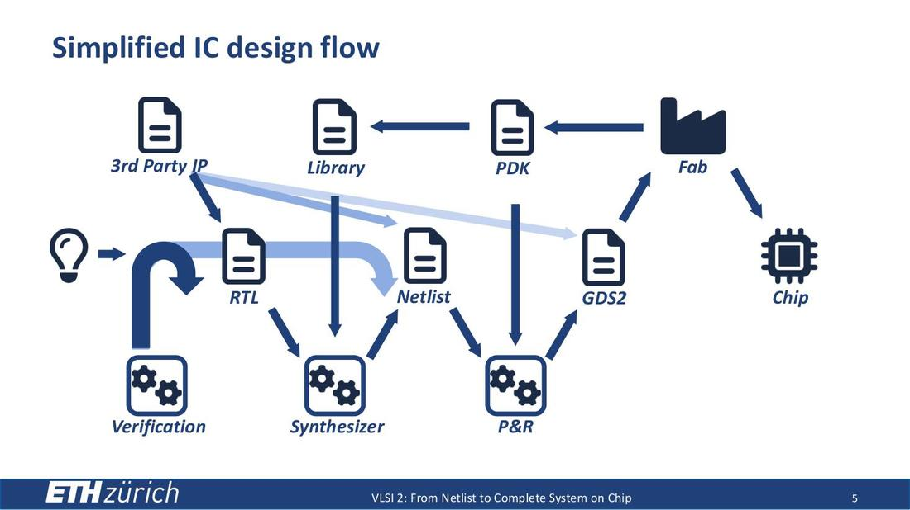
这张图解释了后面所有成本与开源讨论的"骨架"。综合器（Synthesizer）不只要吃 RTL，还要同时吃两样东西：库（Library，有哪些单元可用）与 PDK（Process Design Kit，这个工艺能造出什么）；布局布线（P&R）除网表外还需第三方 IP（3rd Party IP）与物理信息；一切最终收敛成 GDS2，交给晶圆厂（Fab）流片，而验证（Verification）贯穿全程。换句话说，一颗芯片不是"一段代码"，而是一条由代码、库、工艺数据与第三方模块组成的供应链。
1.2 为什么要有开源 EDA 流程：哪些环节曾经是封闭的
既然流程里有这么多环节，自然要问：今天哪些环节是开放的？课件用连续几页回答，结论很鲜明——目前真正开放的主要是 RTL。开放 RTL/HDL 已相当常见，但一旦往下走就处处受限：EDA 厂商限制工具产出（p7），晶圆厂不公开 PDK（p8），第三方 IP 授权又会限制整个设计的开源（p9）。也就是说，你可以公开设计代码，却可能既没有工具做下去、也没有工艺数据造出来，更没法把买来的 IP 一起共享。
转机出现在两个端点上：综合有了 Yosys，布局布线有了 OpenROAD，再加开源 PDK，"走向开放"才被补全，见图 1-2。这也是本课的立场——VLSI2 尽可能使用开放流程：开放 RTL（示例代码全部公开）、开放 PDK（IHP130 是少数可用的开源 PDK 之一，允许自由发表设计）、以及大部分环节的开源 EDA；剩下少数步骤暂用商业工具，待有替代或经验足够后再迁移。
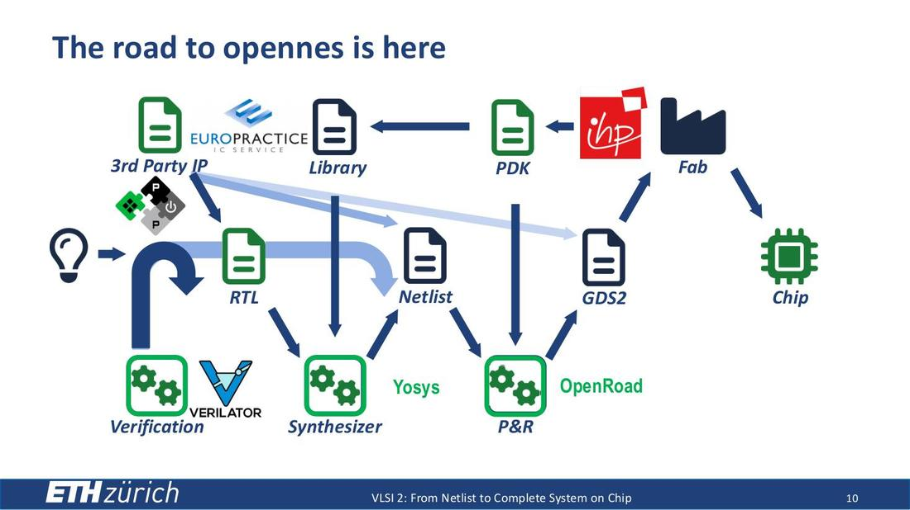
1.3 芯片是一门大生意：产业图谱与参与者
要理解本课为何强调成本，先看芯片产业有多大。Gartner 数据显示，2024 年全球半导体营收约 6000 亿美元以上（列入统计的全市场约 625,971 百万美元，同比增长 18.1%）。排名前列的厂商包括三星、Intel、NVIDIA、SK 海力士、高通等，见图 1-3。其中 NVIDIA 与 SK 海力士当年增速分别高达 83.6% 与 86.0%，可见这个市场既庞大又在剧烈变动。
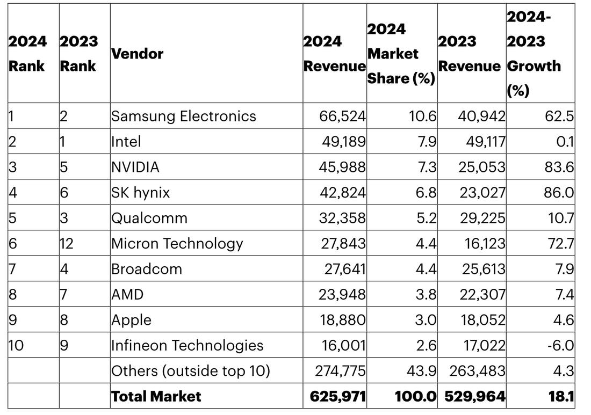
从"靠 IC 赚钱"看，产业至少有四类角色：晶圆代工（Foundry，如 TSMC、Samsung、Intel、GlobalFoundries）；设计与销售芯片的公司，又分 IDM（Integrated Device Manufacturer，设计制造一体，如 Intel、Samsung、ST）与 Fabless（只设计不制造，如 Nvidia、Apple）；制造支撑（设备 ASML、Nikon，材料如晶圆、气体、光刻胶）；设计支撑（EDA 商 Synopsys、Cadence、Siemens/Mentor，IP 商 ARM、Verisilicon、Rambus 等）。
这个格局的后果是：一颗成功的芯片背后往往站着许多家公司，没有一家能包办全部环节（图 1-4）。图 1-5 展示了 IDM、晶圆代工、Fabless、IP 供应商等多种协作模式。为什么分工这么多？根源还是成本：既然建厂、买工具、养工程团队都极贵，把风险与投入拆散到不同角色就成了自然选择。
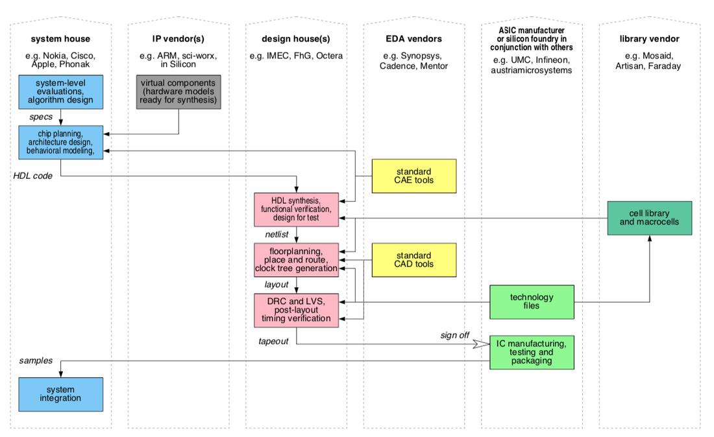
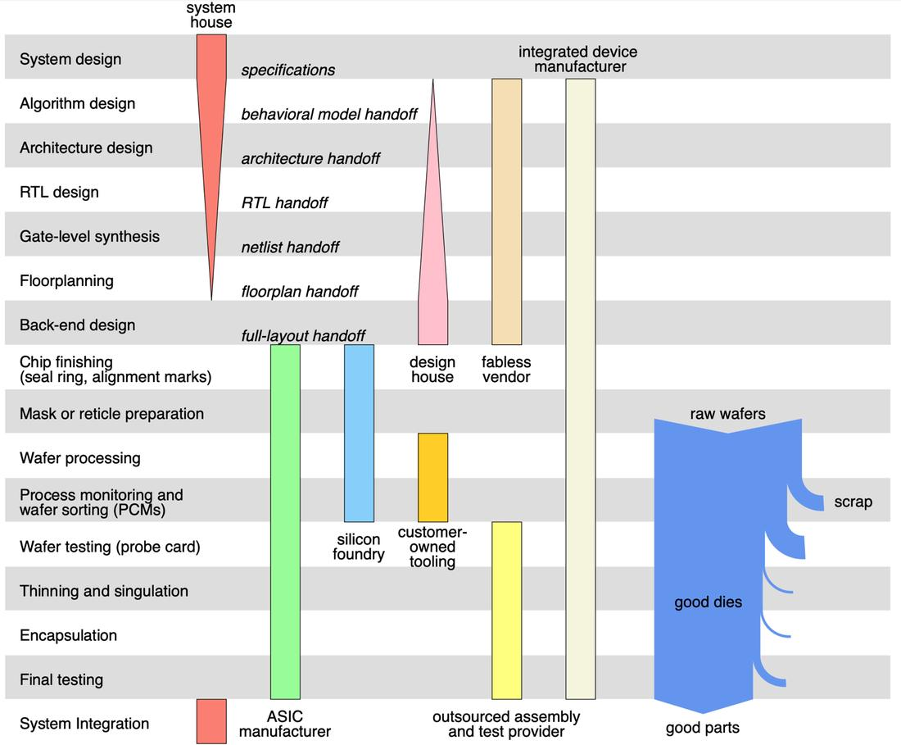
1.4 摩尔定律与登纳德缩放：为什么"更小"曾经等于"更快更省电"
接下来是历史趋势。摩尔定律始于 Gordon Moore 1965 年在 Electronics Letters 上的观察（1975 年在 IEDM 上修正）：集成电路上的晶体管数目（功能数）大约每两年翻一番。课件的评价相当克制：它开始只是观察，后来变成自我实现的预言，朗朗上口、方向明确，但并不精确，还"容易被取巧"（面积是否相同、算原型还是发布时间）。
真正让它有意思的是登纳德缩放（Dennard scaling，1974）：晶体管按比例缩小后，功耗密度可保持不变，于是频率提高、电压与功耗反而下降——"更小"长期同时意味着"更快、更省电"，这是产业几十年高速增长的动力。
但好事没有一直持续。图 1-6 是 Karl Rupp 整理的 50 年处理器趋势：晶体管数（橙色）继续翻倍，但主频（绿色）在 2005 年前后停止上升，单线程性能（蓝色）在 2010 年前后也趋于停滞——课件把这两处分别标注为速度墙（Speed Wall）与功耗墙（Power Wall）。作为补偿，逻辑核心数（黑色）自 2005 年起上升，即"多核时代"。这也解释了本课为何如此在意功耗：当频率不再免费增长，改善能耗就成了提升性能的主要杠杆。

与此同时，"XX nm 工艺"也需要澄清。图 1-7 表明，节点名字早已不对应任何单一物理尺寸：标成"10 nm"的节点，栅极间距其实约 64 nm、金属间距约 45 nm。节点数字更像一个代际标签，而非能拿卡尺去量的尺寸。课件还指出，只有极少数晶圆厂能做最先进节点，但每个成熟节点上都仍有人在赚钱；而当平面缩放越来越难，先进封装（packaging）开始承担"往一个系统里塞进更多晶体管"的任务。
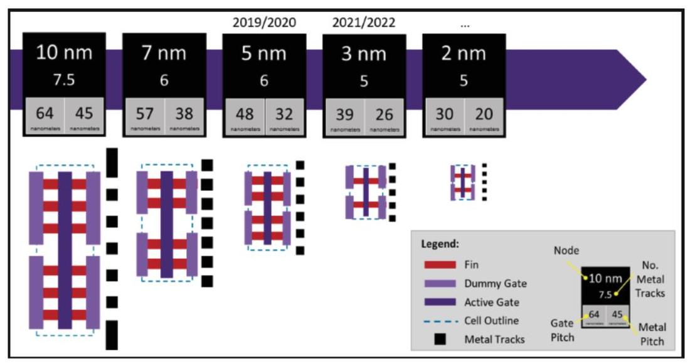
1.5 一颗芯片要花多少钱：一次性成本与单颗成本
成本结构其实可以拆成两类，课件列得很清楚：非经常性成本（Non-recurring，付一次）包括工程人力、掩模版、晶圆厂成本、EDA 工具（通常按席位每年收费）、设计所需 IP 与公司运营开销；经常性成本（Recurring，每颗芯片都付）包括制造（原材料与加工）、测试（第 12 讲）、封装（第 6 讲），以及按销量计费的 IP 授权费。
c = c0 / #ckts + c1
c0 = non-recurring costs (pay once: engineering, masks, EDA, IP, overhead)
c1 = recurring costs (pay per IC: manufacturing, testing, packaging, IP royalty)
#ckts = number of ICs sold这个公式点出了产业的要害：c0 极其高昂（动辄数百万甚至数十亿美元），必须靠大量销售来摊薄，同时还要压低 c1。课件直言，最新工艺上一个设计可能要花"数亿美元"（100s of MUSD），很大一部分花在验证与软件上，属典型的一次性成本——因此只有产量非常大的产品才值得这么干。图 1-8 给出按节点的设计成本：28 nm 约 4800 万美元，7 nm 约 2.49 亿，5 nm 约 4.49 亿，3 nm 约 5.81 亿，2 nm 约 7.25 亿美元。
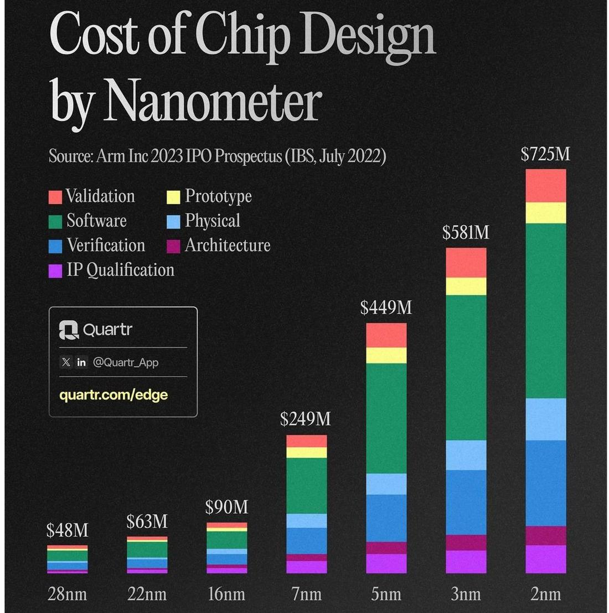
掩模版（mask set）是另一项绕不开的一次性支出，且随节点迅速膨胀。图 1-9 的表显示：1994 年 350 nm 工艺、4 层金属时，一套掩模版约 5–6 万美元；到 2004 年 90 nm、8 层金属时约 80 万–110 万美元；2009 年 45 nm、10 层金属时约 160 万–250 万美元；2014 年 22 nm、13 层金属时已经达到约 500 万美元。二十年间，同一项支出涨了近百倍。
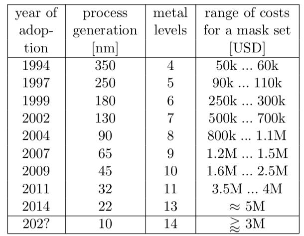
| 成本类别 | 典型项目 | 什么时候付 |
|---|---|---|
| 非经常性 c0 | 工程人力、掩模版、EDA 工具、设计 IP、公司运营 | 一次付清 |
| 经常性 c1 | 制造（材料 + 加工）、测试、封装、按销量计的 IP 授权 | 每颗芯片都付 |
那么 IP 生意是怎么来的？理由很实在：即便芯片里较小的一块，设计起来也很贵（贵在工程、工具与验证周期），于是就有公司专门出售"已验证的现成 IP"，通常是处理器核、内存控制器、外设这类模块。IP 分两类：硬 IP（Hard IP）物理设计已完成，与特定工艺绑定；软 IP（Soft IP）停留在 RTL 层，需要你自己映射到工艺上。授权也有两种模式：买断（一次性付清，属非经常性成本）或按量抽成（每卖一颗付一笔，属经常性成本）。
1.6 制造经济学：晶圆厂、良率与"小批量怎么办"
上面的推导有个前提：得先把厂建起来。图 1-10 的造价曲线显示，一座新晶圆厂造价超过 100 亿美元，先进节点（如 3 nm）单厂甚至可达约 200 亿美元。课件用一次简单估算量化它：按约 120 亿美元、满产产能每年 100 万片（约 8 万片/月）、分 6 年摊销，则仅折旧每年就要摊掉约 20 亿美元，折合每片晶圆约 2000 美元才能回本——前提还是这 6 年产能一直被填满。
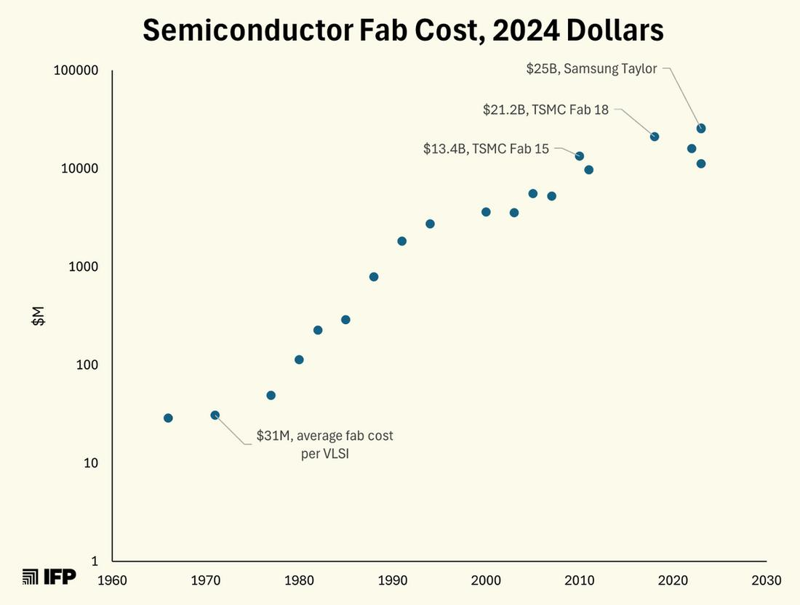
但造出来的芯片并非都能用，于是有两种良率。其一是功能良率（functional yield）：晶圆上总有一部分芯粒带制造缺陷，还有一部分在边缘、形状不完整，只有完好部分才是能卖的良品（图 1-11）。其二是参数良率（parametric yield）：能工作的芯片性能也参差不齐，可用"分级"（binning）处理——慢的便宜卖、快的贵卖。结果是：一片晶圆上只有一部分面积的芯粒能变成可售出的好芯片。
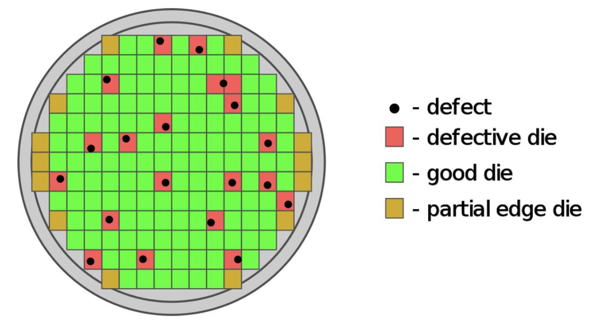
把上述因素合起来，课件给了一个完整例子：90 nm 工艺、4mm×4mm 的芯片、300 mm 晶圆。一次性成本合计约 700 万美元（工程 17 人年约 350 万、一套掩模版约 100 万、EDA 授权约 100 万、其余约 50 万）。单颗经常性成本约 2.30 美元：制造约 0.82 美元（空白晶圆 350 + 加工 2300 = 2650 美元；300 mm 晶圆受边缘效应影响良率约 82%，扣切割道后约得 3250 颗，2650 / 3250 ≈ 0.82），加封装与测试约 1.48 美元。
关键在于产量对这 700 万美元的摊薄。图 1-12 列出不同产量下的单颗成本：产量 1k 时，仅一次性成本就摊到每颗 7000 美元，单颗合计 7002 美元；100 万时降到 7.00 + 2.30 = 9.30 美元；1 亿时进一步降到 0.07 + 2.30 = 2.37 美元。结论很重要：只要能卖到数百万颗，一次性成本就不重要；但也正因如此，那些不起眼的经常性成本（测试、封装、面积、工序数）反而最关键。
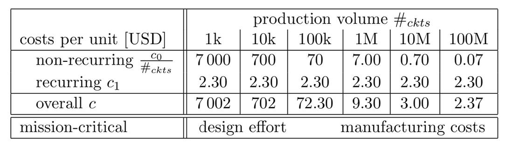
现实难题是：如果产量根本不高怎么办？答案是多项目晶圆（Multi-Project Wafer，MPW）——把昂贵的掩模版与晶圆成本和其他团队分摊共享，见图 1-13，这也是学生项目与初创公司样片能负担得起的典型做法。产量不同、技术选择也不同：小批量适合 FPGA，大批量才划算用 ASIC 甚至全定制（full-custom）。作为大设计的参照，课件展示了 ETH 的 Occamy 芯片（216+1 个 RISC-V 处理器、70 mm²，GF 12LPP）。
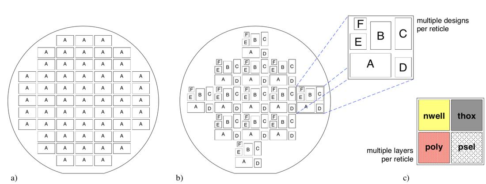
1.7 开源硬件的三个方面：设计、工具、制造
算完成本，课件回到开源的动机：把芯片成本拆成三块——IP 费用 + EDA 费用 + 硅片费用（Cost = IP€ + EDA€ + Si€，见图 1-14）。软件世界早已大量使用开源，硬件为什么不能？这正是本课要探索的方向。
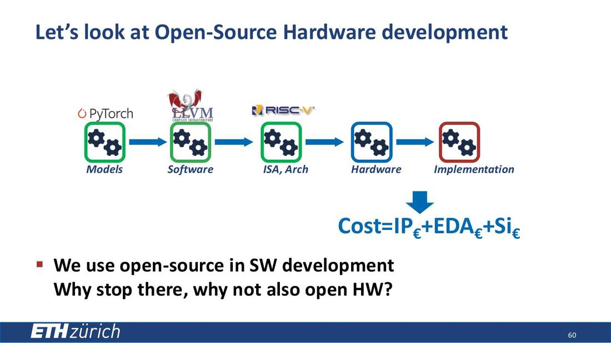
课件把开源硬件明确分成三个方面（图 1-15）：设计（RTL/HDL 描述已相当常见；原理图与物理设计也可能受工艺信息牵制）、工具（EDA，含前端综合、后端布局布线、验证仿真）、制造（PDK，含设计规则、用于寄生参数计算的层叠信息，以及用于仿真的器件模型/SPICE 参数）。三者内涵差别很大——设计开放不等于工艺开放。
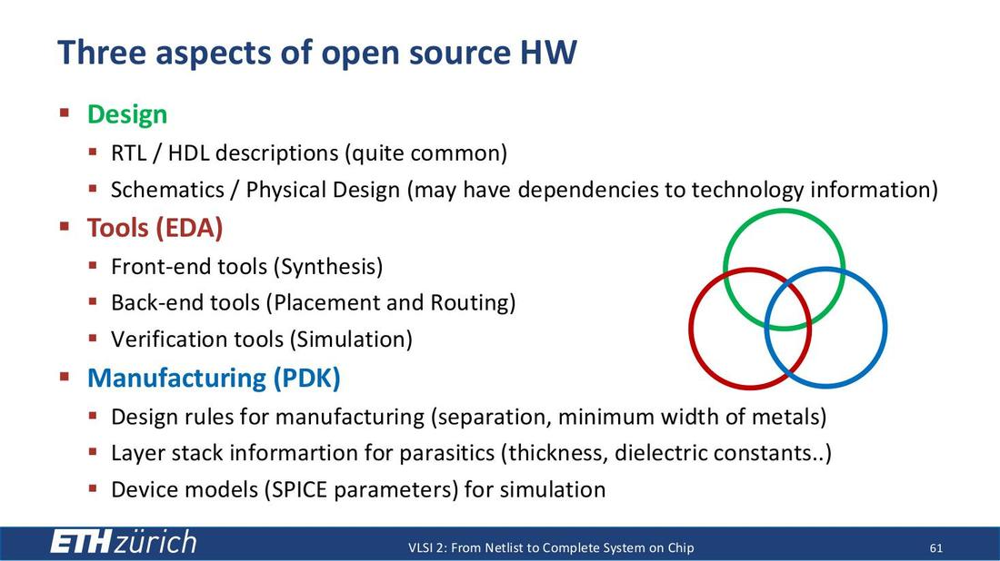
一个关键但常被忽略的事实是：这三个方面在很大程度上相互独立。开源设计可以用商业 EDA 与闭源 PDK——ETH 的 PULP 团队做开源硬件已超过十年；反过来，开源 EDA 在闭源 PDK 上同样能用，因为工具对工艺（乃至对具体设计）"不可知"，只要拿到工艺文件就能把流程适配过去；开源 PDK 也能配商业工具。说到底，晶圆厂收到的是 GDS2，并不关心它用什么工具画出来。但要做端到端、可复现的开源芯片，三个方面必须同时具备。
最后是现实视角。开源硬件正在上升，ETH 是主要推动者之一（PULP Platform），也有组织在做支撑与维护（如 OpenHW）；开放的 RISC-V 指令集让开源实现成为可能；开源工艺文件也在增加，例如 SkyWater 130、GlobalFoundries 180，以及本课使用的 IHP 130 nm。课件对现状的分层判断是：设计层面已相当成熟，工具"足以完成相当规模的设计，但还需更多工作"，制造则"需要更多产量与更新的工艺"。本课以一个开源、经过硅验证的 SoC 模板（Croc）为起点：现代 SoC 很复杂（主机域加一个含多核 RISC-V、SPM、DMA、加速器的 PULP 集群），创新只发生在其中一部分，有了模板你就能把精力集中在真正需要创新的地方。
本讲要点
- 这门课是"做出来"而不是"考出来"的。从 VLSI1 留下的 RTL 出发，你要亲自走完综合、布图规划、布局布线、时序与寄生分析、低功耗、可测性设计，最终交付一颗能送流片的芯片；流程中每个环节都依赖"代码 + 库 + PDK + 第三方 IP"。
- 芯片生意的本质是"一次性成本极高、单颗成本决定胜负"。c = c0/#ckts + c1：一次性成本（工程、掩模版、EDA、IP）可高达数亿甚至数十亿美元，必须靠大产量摊薄——90 nm 的例子中，产量 1k 时单颗 7002 美元，1 亿时只剩 2.37 美元；一旦有量，测试、封装、面积、工序数这些微小的经常性成本反而最关键。产量不足时，可用 MPW 共享掩模版。
- 开源之所以重要，是因为它分三个方面，且缺一不可。设计（RTL）、工具（EDA，如 Yosys、OpenROAD）、制造（PDK，如 IHP130、SkyWater 130）三者相对独立、可按现状混搭；但只有三者都开源，才能得到端到端、可复现的开源芯片。本课因此采用开源流程，并基于硅验证的 SoC 模板（Croc）集中做真正的创新。
RTL：SystemVerilog 回顾
2.1 为什么需要硬件描述语言
在 HDL 出现之前，复杂数字电路只能用手绘原理图（schematic）描述。随着晶体管数量增长，图纸变得难以阅读、复用和修改，且任何一处改动都可能牵动整张图纸。HDL 最初的目的就是“用文字画原理图”：它保留端口连接、层次结构和布尔功能，同时可以用文本文件进行版本控制和参数化复用。SystemVerilog 更进一步把原本用于仿真的 Verilog 扩展成面向综合与验证的统一语言。
在数字设计流程中，RTL（Register Transfer Level，寄存器传输级）描述位于算法/架构与物理实现之间。RTL 不描述单个晶体管，而是描述“每个时钟沿，数据如何在寄存器之间转移、经过怎样的组合逻辑处理”。综合工具把 RTL 转换为门级网表（netlist），后者再进入布局布线。因此 RTL 代码既是设计意图的精确表达，也决定了后续 PPA（性能、功耗、面积）优化的起点。
HDL 描述有不同抽象层级：结构化（structural）描述只包含模块实例与连线，等价于网表；行为级/RTL 用 always、assign 等描述功能；仿真模型 则加入延迟、延迟文件等非综合信息，仅用于验证。本讲聚焦可综合的 RTL 子集。
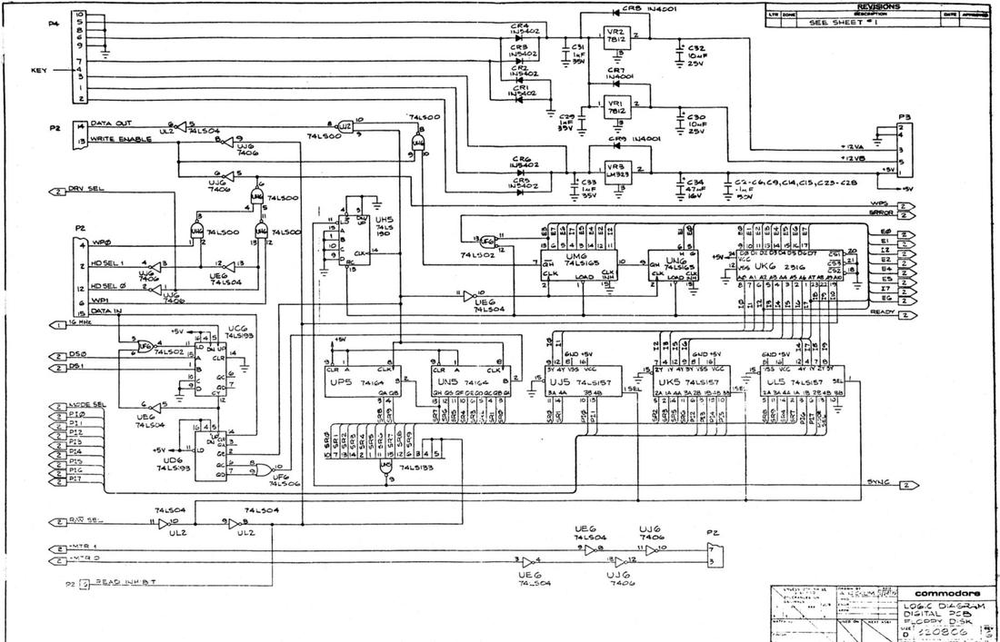
2.2 模块、端口与层次实例化
SystemVerilog 的基本组织单元是 模块（module）。一个模块由名称、可选参数、端口列表和内部功能体组成。下面是一个典型顶层模块：用参数 Width 定义数据位宽，实例化两个名为 i_reg_1 与 frank 的 ffs 模块，再通过连续赋值把它们的输出做与、或，并用三态选择输出。
module top #(
parameter int Width = 16
) (
input logic clk_i,
input logic rst_ni,
input logic mode_i,
input logic [Width-1:0] data_in_i,
output logic [Width-1:0] result_o
);
logic [Width-1:0] first, second;
logic [Width-1:0] combine_and, combine_or;
ffs #(.Width(Width)) i_reg_1 (
.clk_i(clk_i), .rst_ni(rst_ni), .in_i(data_in_i), .out_o(first));
ffs #(.Width(Width)) frank (
.clk_i(clk_i), .rst_ni(rst_ni), .in_i(first), .out_o(second));
assign combine_and = first & second;
assign combine_or = first | second;
assign result_o = mode_i ? combine_and : combine_or;
endmodule // top
注意实例化采用“按名连接”（.port(signal)）而非按位置连接。按名连接允许被实例模块的端口顺序任意调整，调用端不必跟着改动，因此更 robust，是 ETH 推荐的写法。按位置连接（ffs #(16) i_reg_1 (clk_i, rst_ni, data_in_i, first);）在端口增多或修改时极易出错，应尽量避免。
参数（parameter）让同一个模块在不改动源码的情况下实例化为不同位宽。上例中 ffs #(.Width(Width)) 把顶层参数传给子模块；若子模块使用默认值，也可以写成 ffs i_reg_1 (...)。课件同时强调“一个文件一个模块”：SystemVerilog 语法允许同一文件放多个模块，工具也不会报错，但按文件名定位模块能显著减少大型工程中的查找成本。
2.3 数据类型、四值逻辑与 tri-state
SystemVerilog 最常用的是 logic 类型，可综合设计中用它描述输入、输出和内部线网。logic 是 wire 与 reg 的“Cleaner”替代：它既可用于连续赋值，也可用于过程赋值，且不会给初学者造成“reg 一定是触发器”的误解。但 logic 只能有一个驱动源；如果信号需要被多个源驱动（如双向 tri-state 总线），则仍须用旧式 wire，因为 wire 内置多驱动解析（如 wired-OR、wired-AND 或 tri-state 三态）。
仿真时需要四个逻辑值：0、1、X、Z。X 表示冲突或未知（例如上电初始值、两个反相器驱动同一条线）；Z 表示高阻态，即该节点未被任何驱动器驱动。在总线共享场景中，同一时刻只允许一个设备写总线，其余设备置为 Z。
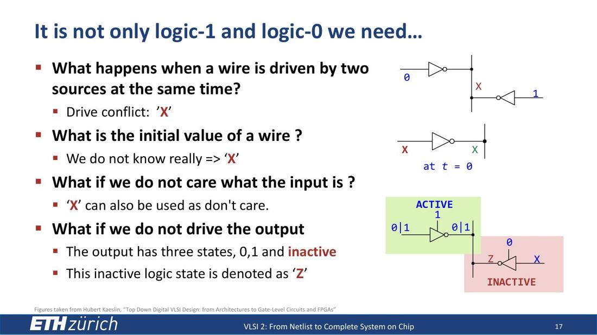
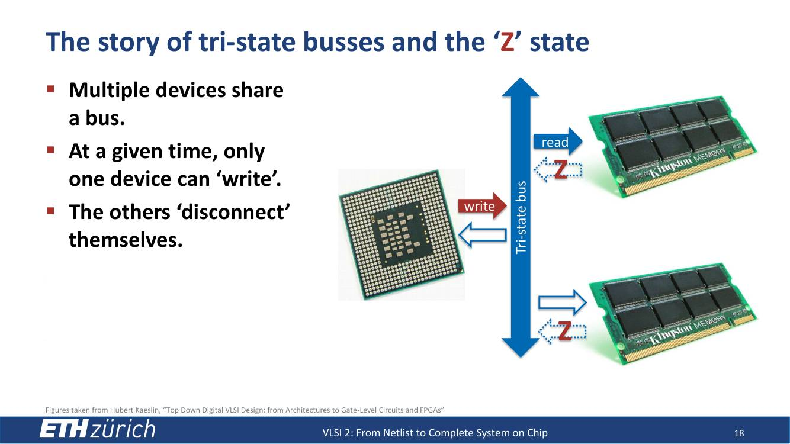
下面是用 wire 实现 tri-state 驱动器的代码片段。单个驱动器用 assign Qq_DZ = SelB_S ? ~Bb_D : 1'bZ; 把 Z 赋给输出；合并总线 Com_DZ 则需用 wire，因为有两个 assign 同时驱动它。
// separate pieces of bus, not connected
logic Aa_D, Bb_D;
logic Qq_DZ, Pp_DZ;
logic SelA_S, SelB_S;
assign Qq_DZ = SelB_S ? ~Bb_D : 1'bZ;
assign Pp_DZ = SelA_S ? ~Aa_D : 1'bZ;
// combined tri-state bus, connected
logic Aa_D, Bb_D;
wire Com_DZ;
logic SelA_S, SelB_S;
assign Com_DZ = SelB_S ? ~Bb_D : 1'bZ;
assign Com_DZ = SelA_S ? ~Aa_D : 1'bZ;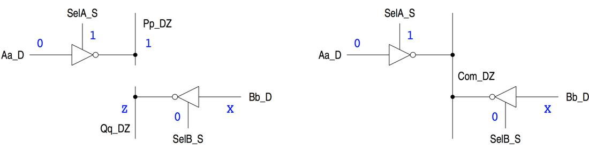
2.4 向量、常量与命名约定
logic 可以是标量也可以是多 bit 向量，例如 logic [7:0] eight_bit_bus;。数组索引采用“高位在前、低位在后”的写法，与日常书写数字习惯一致。部分选择（part-select）和位选择可直接用方括号：big_bus[15:8] 取高 8 位，big_bus[3] 取第 3 位。拼接运算符 {} 能把多个信号组合成更宽向量，重复拼接可用 {N{signal}}。
SystemVerilog 数字常量格式为 N'basevalue，如 8'b0000_0001、12'hFA7、8'd42。下划线仅提高可读性，不影响值。模块内局部常量用 localparam，可在多个端口声明间共享；跨模块参数则用 parameter。
语言并非强类型，左右两边位宽不一致时会出现静默截断或补零，这是新手最常见的错误来源之一。例如 4'hFA7 会被截断为低 4 位 0111，必须显式检查位宽。建议赋值时使用与目标等宽常量，或在关键边界加 $size() 断言。
localparam CONST_A = 4'b1001; // 4 bit value 1001
localparam CONST_B = 8'b1001; // 8 bit value 0000_1001
localparam CONST_C = 8'b0; // 8 bit value 0000_0000
localparam CONST_D = 12'hFA7; // 12 bit value 1111_1010_0111
localparam CONST_E = 4'hFA7; // 4 bit value 0111 (truncated!)
localparam CONST_F = 4'bx0XZ; // 4 bit value X0XZ
localparam CONST_G = 4'b00_11; // 4 bit value 0011
localparam CONST_H = 8'd42; // 8 bit value 0010_1010ETH 的 IIS 实验室采用统一的信号命名后缀，使代码自解释：
_i：模块输入（input）_o：模块输出（output）_io：双向端口（inout）_c：时钟信号_n：低电平有效信号_ni：低电平有效的输入复位_t：类型定义（typedef）
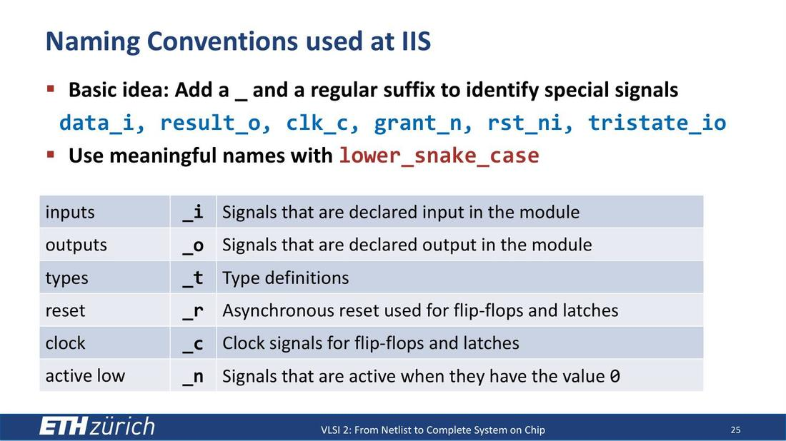
2.5 组合逻辑建模
组合逻辑推荐用连续赋值 assign 或 always_comb 描述。简单的布尔函数与多路器用 assign 最直观；当逻辑分支很多、需要为输出赋默认值时，才考虑 always_comb。
下面给出基本布尔运算与 2 选 1、4 选 1 多路器示例。注意区分位运算（~ & | ^，逐位操作，结果仍为向量）与逻辑运算（! && || == !=，返回单 bit 真假）。对向量混用两类运算符会得到错误结果：例如对 8 位向量 a，if (a) 只会看最低位，而 if (a != 8'b0) 才看全部位。
assign y0 = ~a; // NOT
assign y1 = a & b; // AND
assign y2 = a | b; // OR
assign y3 = a ^ b; // XOR
assign y4 = ~(a & b); // NAND
assign y5 = ~(a | b); // NOR
// 2-to-1 mux
assign result_o = select_i ? data1_i : data0_i;
// 4-to-1 mux
assign result_o = (select_i == 2'b11) ? data3_i :
(select_i == 2'b10) ? data2_i :
(select_i == 2'b01) ? data1_i :
data0_i;2.6 时序逻辑与 always 语句
SystemVerilog 把传统 always @(...) 细化为三种意图明确的形态：always_comb 组合逻辑、always_latch 锁存器、always_ff 触发器。推荐的搭配是：组合逻辑用阻塞赋值 =，时序逻辑用非阻塞赋值 <=。
阻塞赋值 = 在进程内立即生效，适合描述组合逻辑的“即时”因果关系；非阻塞赋值 <= 在时序进程的末尾统一更新，仿真上更贴近真实触发器“在同一时钟沿一起变化”的行为。若把阻塞赋值用在 always_ff，或在 always_comb 里混用非阻塞赋值，常常导致仿真与综合结果不一致。
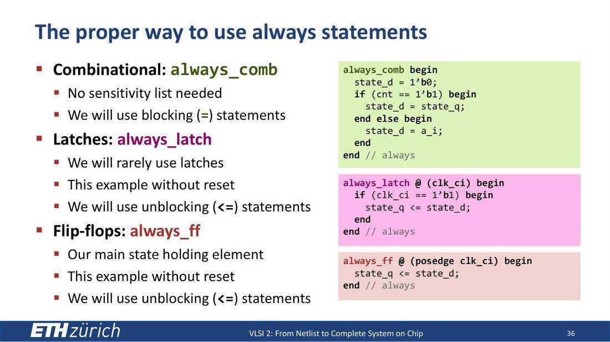
使用 always_ff 时，应把它写成一个“标准触发器模板”：只负责在时钟沿把 _d 赋给 _q，并可选加上异步复位和时钟使能。不要在 always_ff 里塞进复杂运算或多路选择逻辑，否则综合工具难以识别标准单元，也容易引入时序分析错误。
module example (
input logic clk_ci,
input logic rst_ni,
// ..
);
logic [3:0] state_q, state_d;
logic en;
always_ff @ (posedge clk_ci, negedge rst_ni) begin
if (rst_ni == 1'b0) begin
state_q <= 4'b0110;
end else if (en == 1'b1) begin
state_q <= state_d;
end
end
endmodule
为区分“下一状态”与“当前状态”，ETH 推荐用 _d 表示 D 触发器输入（next state），_q 表示输出（present state）。_d 在 always_comb 中计算，_q 在 always_ff 中更新。
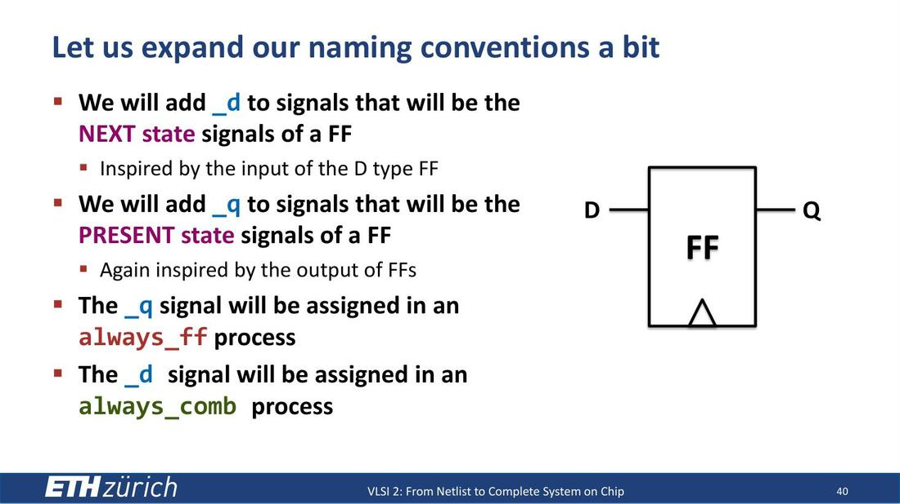
2.7 状态机（FSM）模板
有限状态机（FSM, Finite State Machine）通常拆成三部分：下一状态逻辑、状态保持寄存器、输出逻辑。用 always_comb 计算 state_d，再用 always_ff 更新 state_q，输出可由另一个 always_comb 或连续赋值产生。Moore 型输出仅依赖 state_q，Mealy 型输出同时依赖输入。把三部分分开写并非唯一写法，但当状态转移复杂时，这种模板最不容易出错，也最容易被综合工具识别为标准 FSM 结构。
// Next State
always_comb begin
state_d = state_q; // init: hold state by default
if (cont) begin
state_d = ~state_q;
end
end
// State holding element
always_ff @ (posedge clk_ci, negedge rst_ni) begin
if (!rst_ni) begin
state_q <= 1'b0;
end else begin
state_q <= state_d;
end
end
// Output calculation
always_comb begin
out_o = ~state_q;
end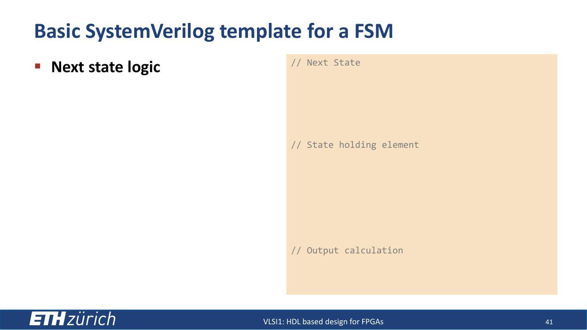
对于状态较多的 FSM，可用 typedef enum 定义状态类型。枚举让状态名直接出现在代码中，可读性远高于 S0、S1。注意在 always_comb 开头先给 state_d 一个默认值（通常是 state_q），这样不会漏掉分支而意外综合出锁存器。同时 case 语句务必加 default，以处理未定义状态。
typedef enum logic [1:0] {
Init,
Run,
Stop,
Wait
} state_t;
state_t state_q, state_d;
always_comb begin
state_d = state_q; // default: hold
case (state_q)
Run: state_d = Wait;
Stop, Wait: if (cont == 1'b1) state_d = Run;
Init: state_d = Run;
default: state_d = state_q;
endcase
end2.8 常见不可综合或可综合但易错写法
综合工具只接受“能对应到硬件结构”的写法。以下几类在课件中被反复提醒：
- 多驱动（multi-driver）：同一信号在多个
always进程或assign中被赋值，会综合失败或产生 X。每个信号只能由一个进程决定值。 - 不完整敏感列表：传统
always @(a, b)若漏写c，仿真与综合行为可能不一致。用always_comb可由工具自动补全敏感列表。 - 组合块里遗漏分支：若
always_comb中某些输入组合没有给输出赋值，综合会推断出锁存器。给输出赋默认值可避免。 - 在 always_ff 里写复杂逻辑：把算术、比较、选择全部塞进触发器进程，会让综合工具难以匹配标准单元，并增加出错概率。
- 阻塞与非阻塞混用：组合逻辑用
=，时序逻辑用<=，不要颠倒。 - 使用
initial、delay (#)或wait：这些在 testbench 中常见，但大多数综合工具不支持，会报不可综合错误。 - 递归/反馈组合环：组合逻辑输出直接回到同一进程的输入，会导致 combinational loop，通常不可综合且仿真无限振荡。
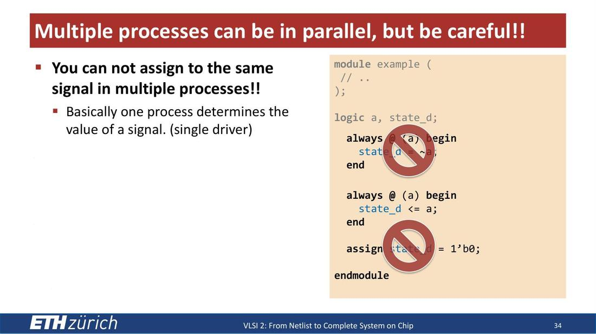
2.9 RTL 与门级网表的关系
RTL 是“行为级”描述，说明在每个时钟沿数据如何从一组寄存器转移到下一组。综合（synthesis）把它翻译成 门级网表（gate-level netlist）：只包含标准单元库里的门、触发器、锁存器等预定义元件，以及它们之间的连接。
网表是一种结构化的 HDL：每个实例都有名、类型和端口连接，不再有 always 或 if-else 这类抽象。RTL 中的 if-else 被综合为多路器，always_ff 被映射为 D 触发器，算术运算被映射为加法器/乘法器等标准单元。因此 RTL 的可综合性说到底就是“写出来的代码能不能被综合器对应到标准单元库里的结构”。下一讲将讨论综合约束、CMOS 门与具体网表格式。
2.10 数据通路与控制器：分离但同模块
典型数字电路可分为控制器（FSM）和数据通路（datapath）两部分。控制器产生控制信号并决定下一周期做什么，面积通常很小；数据通路做算术/逻辑运算和多路选择，占 90% 面积并决定运行速度。设计时应在同一块模块内保持二者清晰分离，而不是硬拆成两个独立模块——因为控制信号会频繁修改，拆分会增加端口和连线维护成本。
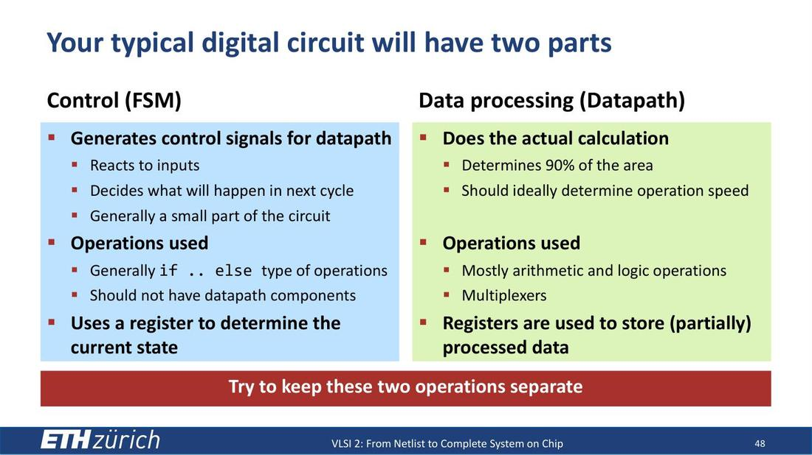
lower_snake_case、端口按名连接、always_ff 保持简洁，这些习惯在 ETH 课程中被反复强调。它们不是语法强制，却能显著降低综合与仿真不一致的风险。
本讲要点
- SystemVerilog 可综合 RTL 的核心是“模块 + always_comb + always_ff + assign”；always_comb 用阻塞赋值，always_ff 用非阻塞赋值，且每个信号只能有一个驱动源。
- FSM 按“下一状态 / 状态保持 / 输出”三段式编写，用枚举和 case 提高可读性，并通过默认值与 default 分支避免综合出意外锁存器。
- RTL 描述的是寄存器之间的数据转移；综合后得到只含标准单元的门级 netlist，因此 RTL 代码必须能映射到标准硬件原语。
逻辑综合与门级网表：从 RTL 走向物理实现的第一步
3.1 本讲定位：RTL 之后，为什么必须落到门级网表
先把综合放回整条流程。所谓前端设计（front-end design），是从想法与规格（specification）出发，找到合适的架构、翻译成 HDL，再验证它的行为是否符合预期。这一阶段有一个重要性质：与工艺无关（technology-independent）——同一份 RTL 理论上可用于任何工艺。
综合改变了这一点：它把 RTL 描述映射（map）到某个具体工艺的标准单元库上，输出通常是一份 Verilog 网表。只有变成门和连线，我们才能谈面积、延迟与功耗，也才能进入布图规划（floorplan）与布局布线（placement & routing）。换句话说，综合是"行为世界"与"物理世界"之间的桥。
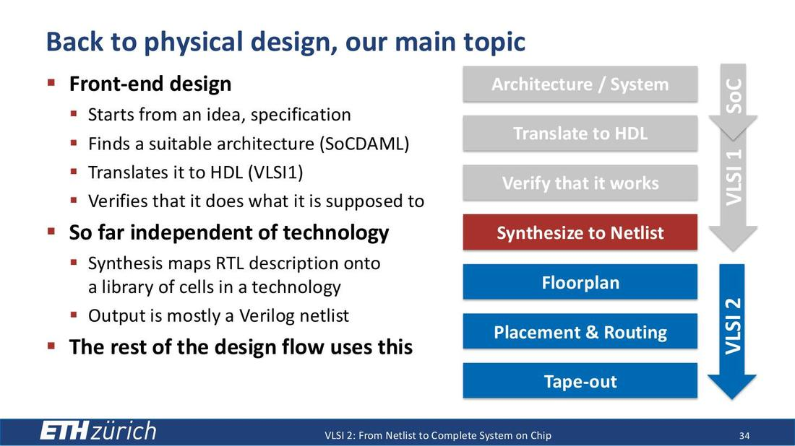
3.2 示例 SoC「Croc」：一个小而全的片上系统
本课程后面每一讲都围绕同一个示例设计展开，它叫 Croc。先看片上系统（System on a Chip，SoC）的由来：最早的芯片只包含单一部件——处理器、存储器、外设或加速器，系统要靠印制电路板（PCB）把多颗芯片连起来；摩尔定律带来更多晶体管，于是几十个部件被集成到同一颗芯片上。Croc 就按现代 SoC 的方式搭建，只是刻意做"轻"：规模小、复杂处理被简化，好在较短时间内跑完从综合到版图的练习。
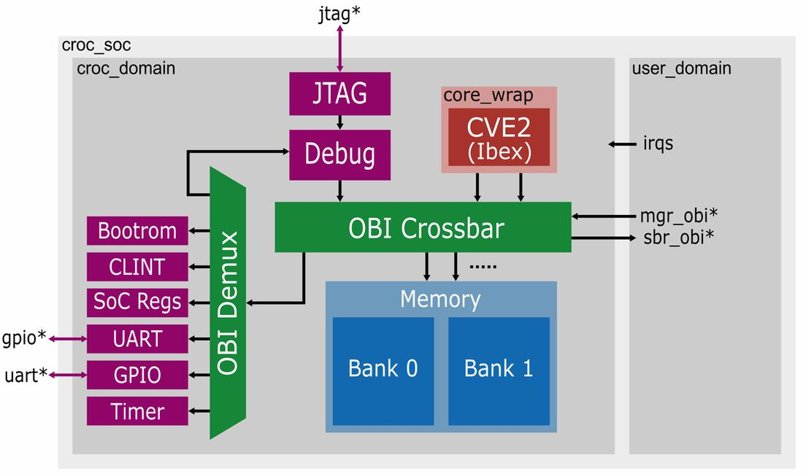
| 组件 | 作用 |
|---|---|
| 处理器核（CVE2） | 系统的"大脑"，负责取指、译码与执行 |
| 互连（OBI） | 把各个部件连在一起，负责搬运数据 |
| 存储器（Memory） | 同时保存指令（instruction）与数据（data） |
| 调试与编程接口（JTAG） | 访问 SoC、把程序装进去并启动它 |
| 外设（Peripherals） | 供用户使用的外部功能 |
| 用户域（User Domain） | 供扩展和加速器接入的区域 |
处理器选用 CVE2：一颗 32 位 RISC-V 指令集（ISA）核，支持整数、乘法与压缩扩展（RV32IMC），只有 2 级流水线，目标是"小而完整"。其血统来自 ETH Zürich 的 Zeroriscy → Ibex → CVE2，现由 OpenHW 组织维护。选 RISC-V 是因为 ISA 只是软硬件之间的契约：只规定处理器"能做什么"，不含实现细节，规范按标准扩展（I、E、M、A、F、D、C、X）组织。
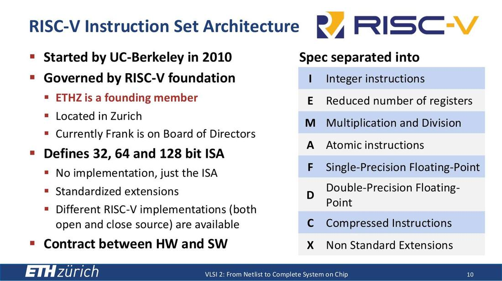
为了让 Croc 足够简单，课件做了几处关键简化，它们正好解释了这套架构：
- 存储可以做小、因而做快。Croc 不是大芯片，可用较小的存储器，使其访问速度与流水线大致匹配。
- OBI 互连允许多端口、多存储体（bank）。指令与数据存储器挂在同一互连上、走不同地址，地址不冲突即可同时读写。
- JTAG 可直接读写存储器。于是能把编译好的二进制装到指定地址，再直接启动执行——这正是练习里"跑起来"的方式。
处理器内部的基本循环决定了对存储器的需求：程序计数器（PC）指出下一条指令的位置（取指 fetch），处理器对指令译码（decode），然后执行（execute）——执行会改变机器状态（寄存器、存储器、CPU 状态），有些指令（如 bne）还会改变程序流。数据最终都要回到存储器，而存储器恰恰是最矛盾的资源：我们想要它又大又快又便宜，但三者不可兼得；Croc 的折中是小存储加多存储体，让"取指令"与"读/写数据"尽量同时进行。
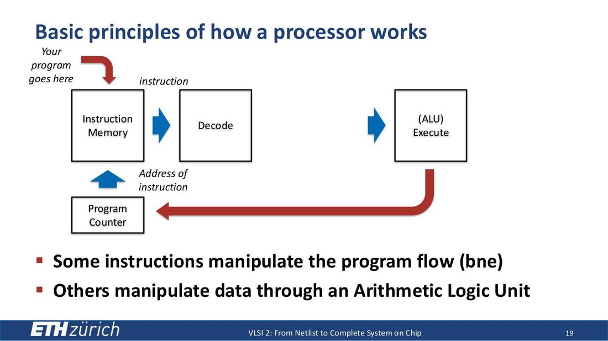
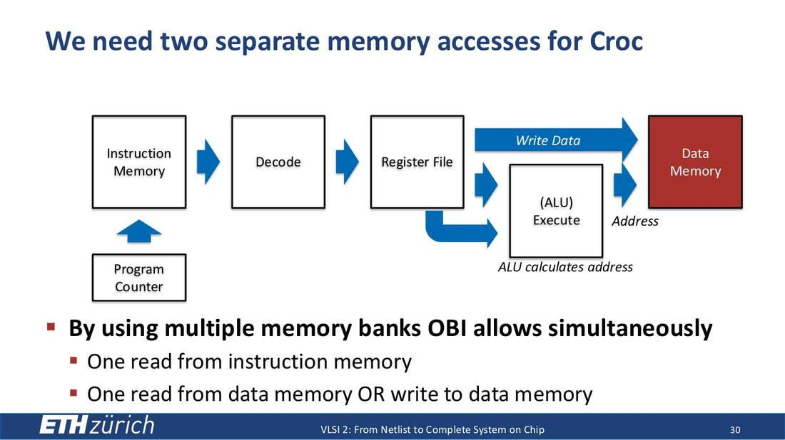
最后是 JTAG（Joint Test Action Group，IEEE 1149）：一套工业标准的测试接口，定义了统一的端口与命令，各家厂商、各种器件通用。它最初用于边界扫描测试（boundary scan test），把芯片隔离出来单独测试；也用于通用测试访问（灌入 BIST/ATPG 向量并读回结果），还兼作编程与调试接口。对 Croc 来说，它就是装入程序并把芯片跑起来的通道。
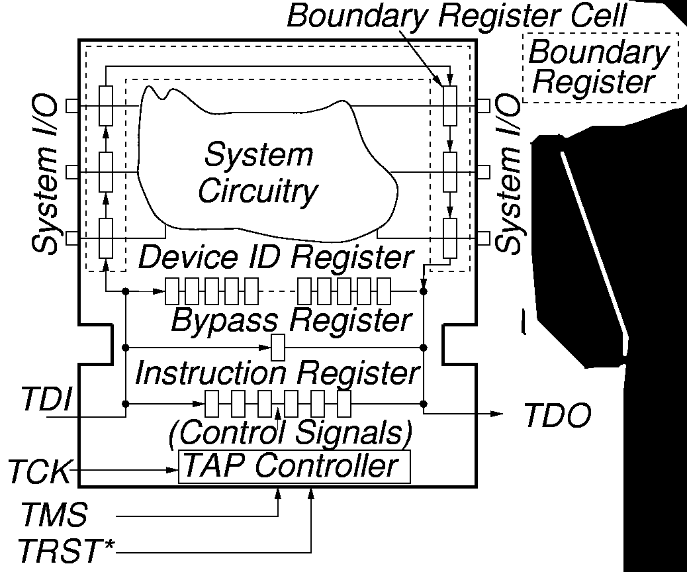
3.3 用 CMOS 搭建任意布尔函数
网表里的每个单元最终都是晶体管搭出来的。这一节先说明"为什么几个基本门就够了"——这是综合能在有限库单元上做映射的前提。
数字 CMOS 设计之所以是现代 IC 的基石，原因有两层。第一，布尔代数可以把任意功能映射成 0/1，并给出化简与变换的规则——这正是综合的核心工作。第二，我们并不需要很多种门：理论上只要一个 2 输入 NAND（或 NOR）加一个触发器（flip-flop），就能搭出任意数字电路——这条"完备性"解释了为什么标准单元库只需几十个单元。
晶体管在这里被当作开关使用：导通时有电流流过，关断时基本没有（只有极小的漏电流）。而 CMOS 的巧思在于把 nMOS 与 pMOS 配成一对：任一时刻要么 nMOS 把输出拉低，要么 pMOS 把输出拉高，不会同时强驱动同一节点，因此静态时几乎不消耗直流功率，制造也相对简单。
给定一个布尔函数，构造方法很机械：先画 nMOS 下拉网络——AND 串联、OR 并联；pMOS 上拉网络则是它的对偶（互补）网络：nMOS 里并联的在 pMOS 里就串联，反之亦然。以课件中的例子为例：
OUP = NOT ( ( (IN1 AND IN2) OR IN3) AND (IN4 OR IN5) )nMOS 网络负责"拉低"，因此当函数为真时输出被拉到 '0'。这说明 CMOS 天生实现的是"反相"形式；正因如此，NAND、NOR 才是比 AND、OR 更基础的门——后者通常要在 NAND/NOR 后接一级反相器。
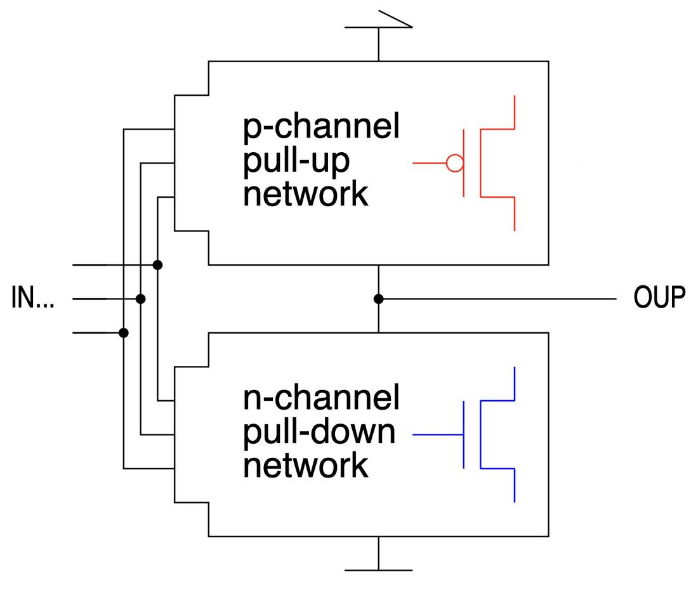
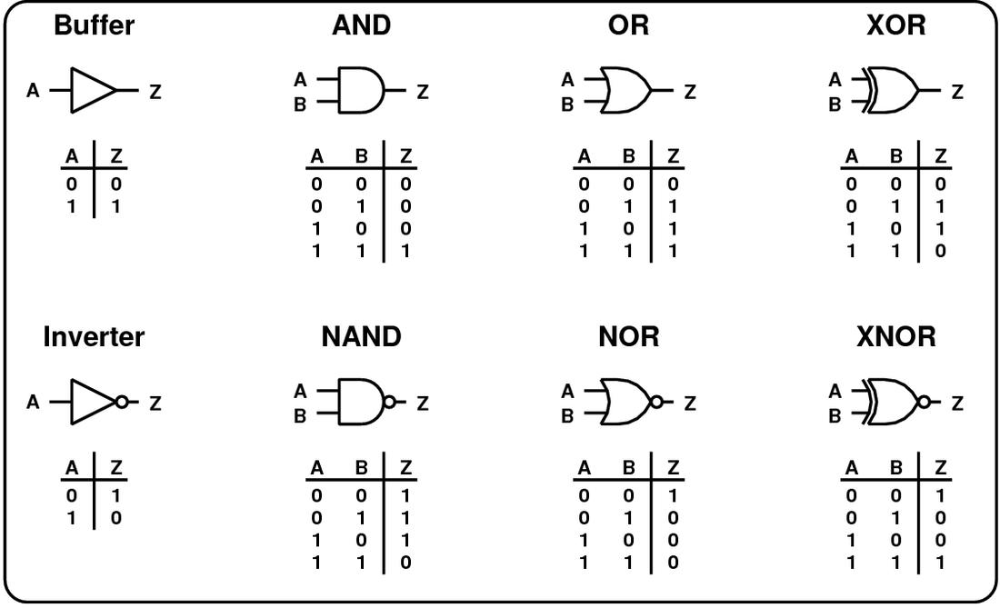
3.4 门延迟从哪来：驱动能力与负载的平衡
门不是瞬间翻转的：它的输出要给下一级的输入电容充放电。由电流与电容的关系可知，要想更快，要么加大电流，要么减小电容——前者对应更大的晶体管，后者对应更小的负载。
于是出现了最典型的权衡：加大晶体管尺寸能提供更大驱动电流、让输出翻转更快，但代价是面积和功耗，且下一级看到的输入电容也变大——前一级的负载反而更重，所以单纯把门做大并不一定更快。在先进工艺里，连线电容（wire capacitance）已经超过门电容（gate capacitance），延迟越来越多地由"线"而非"门"决定，这也是后面必须做寄生参数提取的原因。
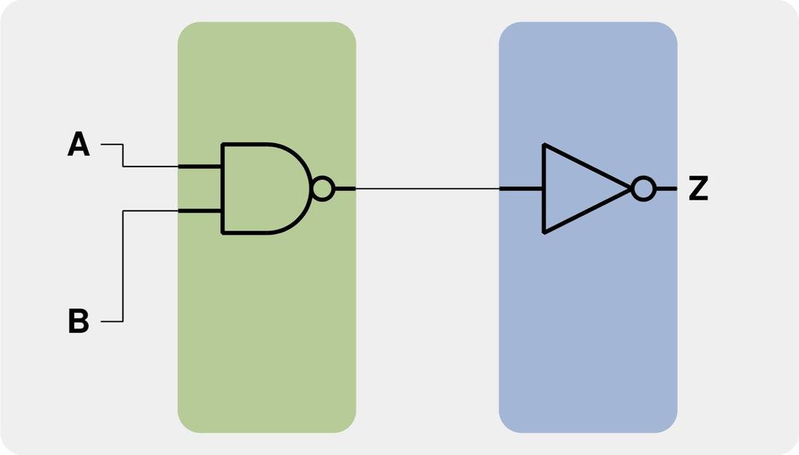

标准单元库正是为这个权衡服务的：同一功能提供多个驱动强度（drive strength）版本，另有缓冲器与反相器驱动长连线；综合工具负责挑选最合适的单元组合，以平衡速度、面积与功耗。这正是"综合不是一对一翻译"的直接答案。
3.5 逻辑综合三步：翻译、优化、映射
现在可以完整地描述综合在做什么了：逻辑综合算法用布尔代数，把 HDL 描述映射到标准单元库上，产出一张门级网表。所谓"综合"，可以拆成三步理解：
- 翻译（translation）：把 HDL 代码转成工艺无关的通用逻辑表示，此时还没有任何具体单元。
- 优化（optimization）：在布尔层面做化简与重构，朝目标（速度、面积、功耗）优化。
- 映射（mapping）：把优化后的逻辑对应到目标工艺库里真实存在的标准单元。
工具能优化速度、面积和功耗，但它必须先知道"哪个更重要"，这个信息由约束（constraint）提供。时序往往是头等约束，因为它会间接决定其他性质：跑得更快的电路通常更大，而更大的电路又更耗电。
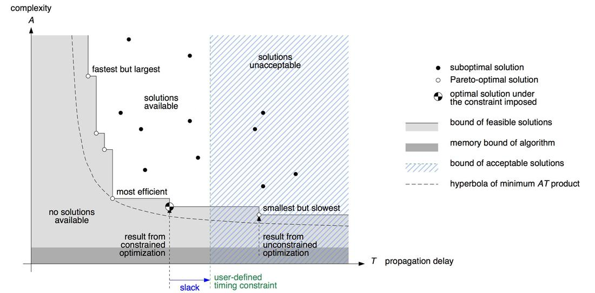
可行解落在一条边界上——追求最快就必然变大（"fastest but largest"），追求最省就必然变慢（"smallest but slowest"），二者之间存在面积-延迟乘积最小的双曲线。用户给出的时序约束把这条边界切开，得到受约束的最优解；约束与最优解之间的余量就是时延余量（slack）：为正说明还有提速空间，为负则说明约束根本达不到，必须回去改架构或改约束。
3.6 时序基础一：传播/污染延迟与建立/保持时间
这一节是本讲的核心，也是后面 LIB、SDF 两讲的地基。先精确定义两个延迟：
- 传播延迟（propagation delay, tpd）：输入发生变化后，输出最迟在什么时候稳定到新的正确值。
- 污染延迟（contamination delay, tcd）：输入发生变化后，输出最早在什么时候可能开始变化。
也就是说，在 tcd 到 tpd 这段窗口里，输出是"未知（unknown）"的——它既不是旧值，也不能保证已经是新值。再看触发器：它并不是"瞬时采样"的。数据必须在时钟沿到来之前稳定保持一段时间，这叫建立时间（setup time）；并且在时钟沿之后还要继续保持稳定一段时间，这叫保持时间（hold time）。若这两条不满足，触发器采到的值就不确定。

把一条路径串起来（组合门 + 线延迟）看：
- 最长路径（longest path）决定时钟周期：数据从发送触发器出发，经过各级单元的传播延迟与连线延迟，再加上接收触发器的建立时间，必须在一个时钟周期内走完。这正是课件里那句"target clock period = max. acceptable path delay"的含义——时钟周期的物理意义，就是最长路径允许的最大延迟。这条最长的路径就是关键路径（critical path）。
- 最短路径（shortest path）受保持时间约束：数据也不能来得"太早"。发送触发器的污染延迟加线延迟，必须不短于接收触发器的保持时间，否则新数据会抢在旧数据被可靠锁存之前冲进接收端，造成保持违例（hold violation）。
一句话总结：建立时间约束管"太慢"，保持时间约束管"太快"；一头一尾，共同决定一个时钟周期能否成立。
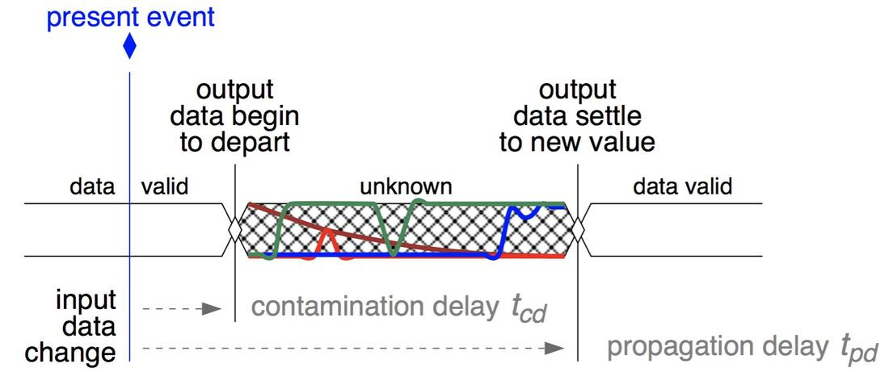
3.7 时序基础二：时钟周期、关键路径与输入/输出约束
有了上面的定义，很多结论就顺理成章。时钟周期一旦确定，电路内部所有时序都被确定：据此可算出全部建立/保持与传播/污染延迟，必要时回头优化电路。为简单起见，本课程只考虑单时钟域（single clock domain），真实大电路更复杂但思想不变。
真正棘手的是电路的边界：你的电路要和上游、下游配合。相对参考时钟，输入最晚/最早何时到达？输出每周期最早/最晚何时出现？这些信息不属于内部逻辑，却直接影响电路能否正常工作。我们用输入延迟（input delay）与输出延迟（output delay）把环境的时序补全：
- 输入延迟为 1ns，表示输入会在时钟沿之后 1ns 才到达——它把上游电路的延迟"算进来"。
- 输出延迟为 2ns，表示输出必须在下一个时钟沿之前 2ns 出现——它为下游电路预留了时间。
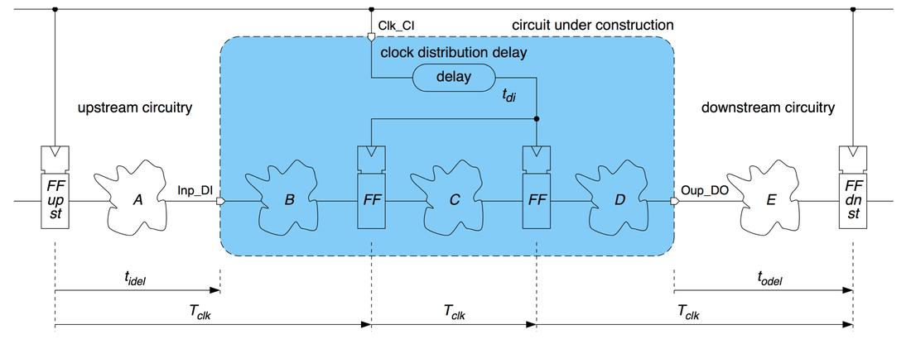
3.8 门级网表的形态与阅读方法
最后回到本讲的产物——网表本身。回顾一下 HDL 的三种用法，它们其实是"同一语言、不同抽象层"：
- 行为级 HDL（behavioral）：描述硬件"做什么"，常见于向综合器解释架构。
- 结构级 HDL（structural）：描述模块与它们之间的连接，是框图的"一一翻译"。
- 门级网表（gate-level netlist）：结构级 HDL 的一个子集，最底层的模块就是标准单元。
网表只用最基本的语法，是很"朴素"的 Verilog，接口与连线都是简单逻辑类型。其特征可用于快速判断是不是网表：几乎由工具自动生成；通常是一个很大的文件；供工具处理，不预期手工编辑；只用 Verilog 语法，不需 SystemVerilog 扩展；没有 always / always_ff / always_comb / always_latch；不用 logic、int，一般只有 wire；可以层次化（多个 module）或扁平（单个 module）；有时还会额外生成一份电源网表（power netlist），含 VDD、GND 与衬底连接，用于 LVS 与多电源域仿真。
module croc_chip (
clk_i,
// […]
wire net5157;
wire i_croc_soc_i_croc__0389_;
wire i_croc_soc_i_croc__0390_;
// […]
sg13g2_a21oi_1 i_croc_soc_i_croc__3715_ (.Y(i_croc_soc_i_croc__0117_),
.A1(i_croc_soc_i_croc__0107_),
.A2(i_croc_soc_i_croc__0112_),
.B1(i_croc_soc_i_croc__0116_));
sg13g2_buf_4 fanout5182 (.X(net5182),
.A(net5185));
// [ … ]
endmodule可以看到，每个实例（instance）都是"单元名 + 实例名 + 端口连接"的形式：sg13g2_a21oi_1 是与-或-反（AOI）单元，sg13g2_buf_4 是驱动强度为 4 的缓冲器——同一功能的不同驱动版本由单元名区分，正好呼应 3.4 节的权衡。这份练习里的 Croc 网表是单个 module，含 40'091 个标准单元、43'191 条 wire 定义、共 182'348 行；这个量级说明网表是给人"看局部"的，不是从头读到尾的。
less -S netlist.v
SHIFT+G (go to end)
?module (search backwards for module)
grep wire netlist.v | wc -l
awk '/sg13g2/{print $1}' netlist.v | sort -u本讲要点
- 综合是"行为"到"物理"的桥。它在布尔代数层面把与工艺无关的 RTL 描述，经翻译、优化、映射三步，落成一张由标准单元与连线组成的门级网表；这张网表是后续全部物理设计步骤的共同输入。
- 时序的两个极端决定一切。最长路径的延迟（传播延迟 + 线延迟 + 建立时间）决定时钟周期能压到多短，这条路径就是关键路径；最短路径的延迟（污染延迟 + 线延迟）必须不短于保持时间，否则会冲掉刚采到的数据。前者管"太慢"，后者管"太快"。
- 约束要完整，边界不能漏。时钟周期决定了电路内部的所有时序，但它只解决一半问题；输入/输出延迟描述了电路与外部环境的接口时序，在工业设计中往往是最关键的约束。只给周期、不给边界条件，综合结果可能完全不能用。
IC 制造工艺：从硅片到芯片
4.1 为什么要先看制造：约束的源头在这里
数字设计里很多"规矩"乍看很随意：为什么标准单元高度只能是固定的几个行高？为什么金属层要分层、走向还要交替？为什么某些层对间距的要求特别苛刻？答案都在制造工艺里。课件 p4 列出本讲目标：认识造芯片的三种材料（导体、绝缘体、半导体）、理解 MOS 工艺与晶体管为何特殊、掌握制造的基本步骤（光刻、注入、沉积、刻蚀、清洗、抛光），并体会"找一套互相兼容的材料"有多难。
https://www.youtube.com/watch?v=aBDJQ9NYTEU）：Matt 在 IHP 产线上讲解整个流程，想把抽象步骤对应到真实洁净室设备时值得一看；不看也不影响后续理解。4.2 导体、绝缘体、半导体：三种材料的取舍
一颗芯片本质上是往一块衬底上反复"叠"三种角色不同的材料。课件 p6 讨论了其中两类，我们补上第三类。
- 导体（conductor）：传输电流——既包括供电（power），也包括信号（signal）。理想情况希望它毫无损耗，用电导率来衡量。但"电阻小"只是第一步，它还必须与前后工艺兼容。
- 绝缘体（insulator）：把不同的导体隔开——因为我们要在有限面积里走很多电源线和信号线，必须保证它们之间没有电流。关键参数是介电常数（dielectric constant / permittivity，ε），而这里存在矛盾：想故意做电容时希望 ε 越大越好，想避免寄生电容时又希望它越小越好。同一份材料属性，在不同场合是好是坏完全相反。
- 半导体（semiconductor）：本征状态下导电性介于两者之间，本身并不稀奇，真正有价值的是它"可工程化"——下一节就讲这一点。
这两类材料都有一句相同的约束："需要与工艺兼容"。这是整讲反复出现的主题：材料之间要粘得住、热膨胀系数要接近、不能与前后的处理步骤打架。
4.3 掺杂：真正让半导体有用的东西
硅的晶格是一个重复排列的规则结构（课件 p7）。如果它始终完美，那只是一块不活泼的晶体。有趣的事从"替换原子"开始（p8）：掺入少量别的原子，就能改变它的电学性格。
- 掺入 III 族元素（B、Ga、In），得到 P 型半导体，相当于结构里"缺电子"。
- 掺入 V 族元素（P、As），得到 N 型半导体，相当于结构里"多电子"。
更重要的是掺杂浓度可以控制：从很轻的 p- 到很重的 p++、n+ 都做得出来。课件 p10 给出掺杂浓度约 1015 到 1020——听起来很大，但它只是阿伏伽德罗常数的一小部分：往纯净硅里"点"进一丁点杂质，就足以改变整块材料的导电类型。
有了可控的 P 区和 N 区，就能让它们相邻放置形成 PN 结，进而做出二极管、晶体管、晶闸管等器件。课件 p9 用一句话总结了这一节的本质：有趣的其实不是半导体，而是掺杂。为什么重要？因为"用电压控制导电"这件事——也就是晶体管的工作原理——完全依赖于掺杂形成的 PN 结。
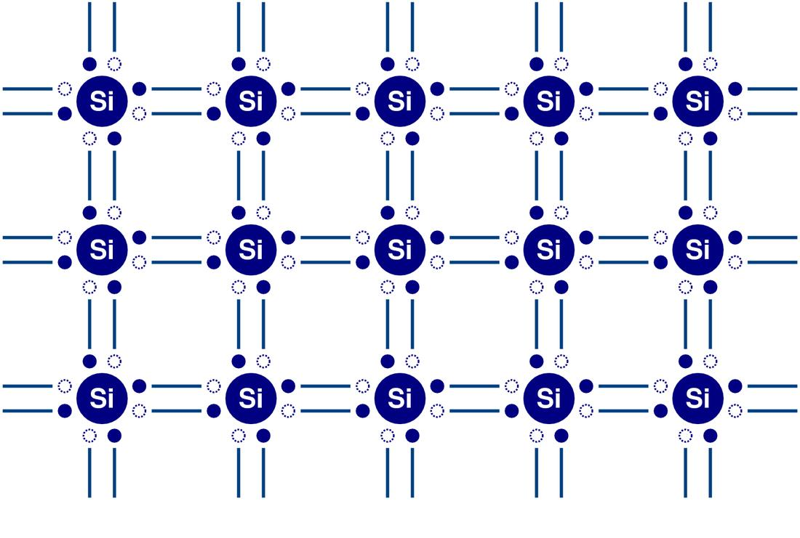
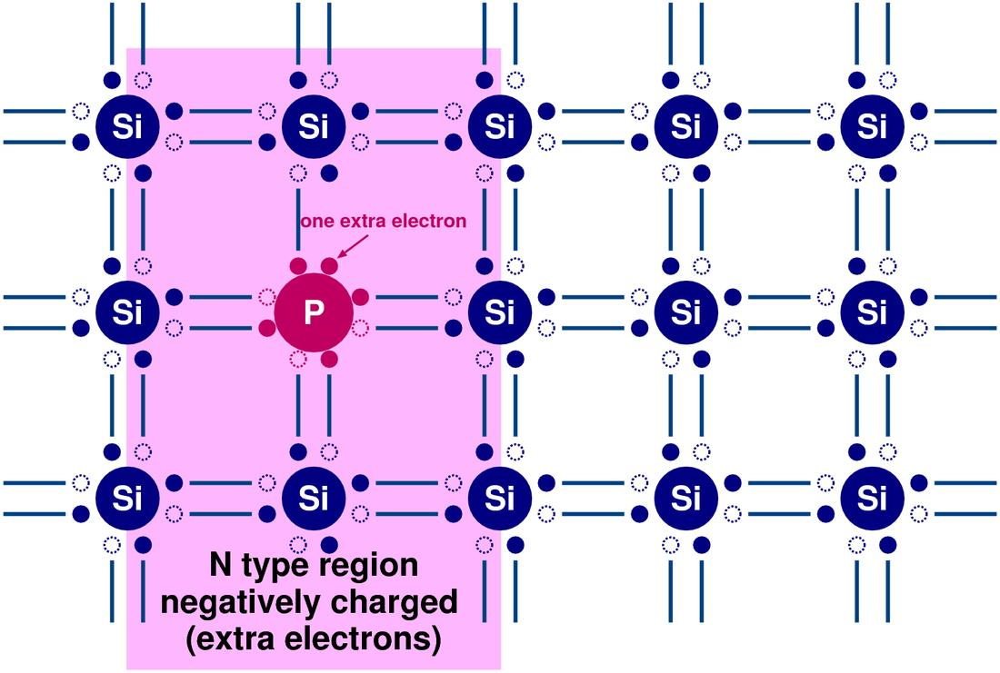
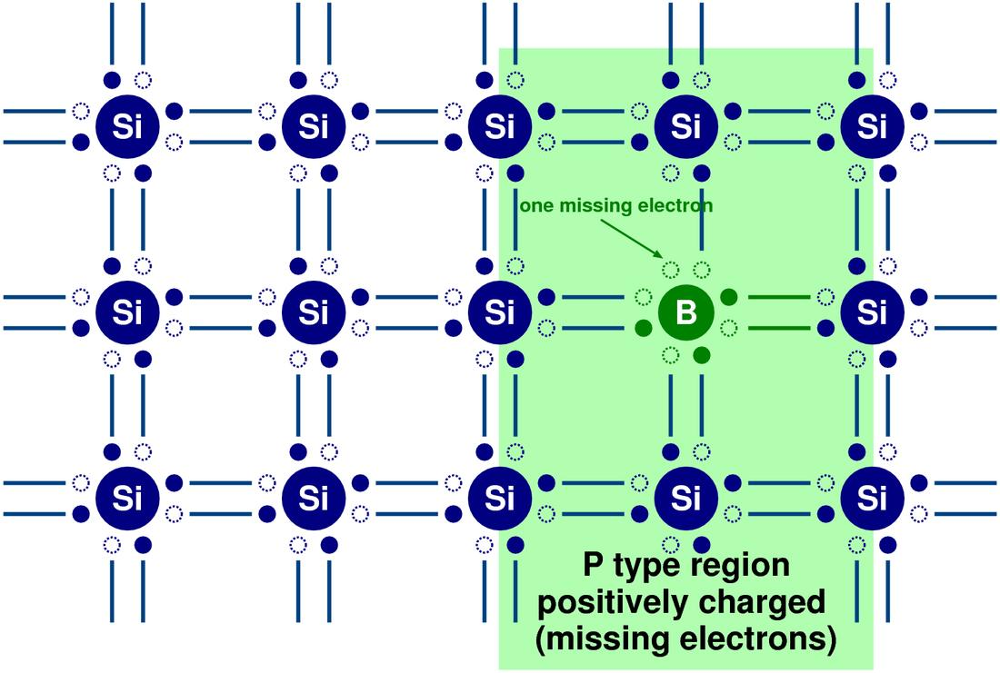
4.4 晶体管：一个受电压控制的开关，以及它为什么要越做越小
课件 p11 用一个很直观的类比把晶体管讲清楚了：它本质上是一个受电压控制的开关。当栅极电压 VG = 0 V（逻辑 0）时，源和漏之间不导通，开关"断开"；把栅电压抬高到一定值（逻辑 1）时，源漏之间被接通。
把它落成实际结构就是 p12 的画面：在一块 p 型掺杂的硅片（半导体衬底，substrate）上，做出两个 n 型掺杂区，分别叫源（source）和漏（drain）；两者之间上方是栅（gate），栅与硅之间隔着一层介质（dielectric / oxide）。这里有一个常被忽略的历史细节：在长达 30 多年的时间里，栅并不是金属，而是多晶硅（polysilicon）。所以别看到"metal gate"就以为理所当然。
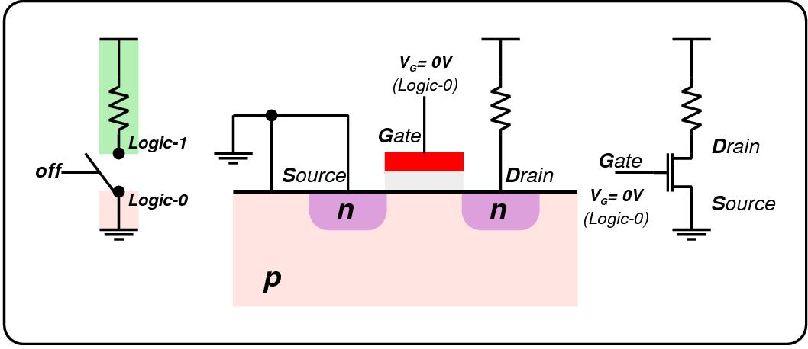
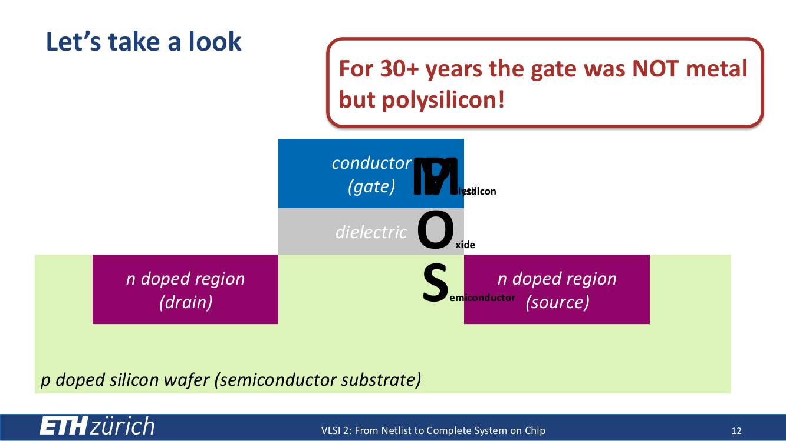
接下来很自然的问题是：能不能把这个结构做得更小？当然想——同样面积塞下的晶体管越多越好。但"缩小"（shrink）并不是把图纸等比复制那么简单。课件 p13–p14 指出，摩尔定律（Moore's Law）要求不断缩小这个结构，而缩小的同时会冒出三个麻烦：
- 图形越来越难画（patterning smaller structures）：光刻本身逼近分辨率的极限。
- 氧化层变薄导致电场更强（shrinking oxide, higher E field）：介质越薄，同样电压下的场强越高，可靠性压力越大。
- 尺寸进入原子量级，涨落变严重（atomistic sizes, variation）：当结构只剩几十个原子宽时，"多一点少一点"不再是统计误差，而是实打实的器件差异。
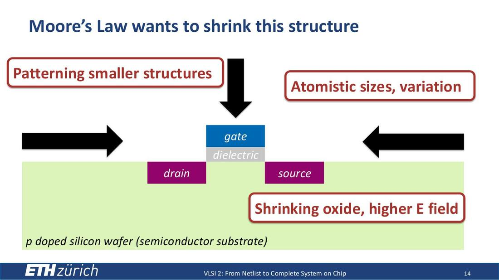
还有一件事必须解决：就算晶体管做得再好，我们也要连到它。课件 p15 讲得很形象——你要"访问这些结构"：在密集图形之间挖出小孔（digging small holes），再填上导电材料（filling small holes）。这意味着芯片不能只有一层器件，还必须在其上叠出互连层；4.7 节的多层金属结构，根子就埋在这里。
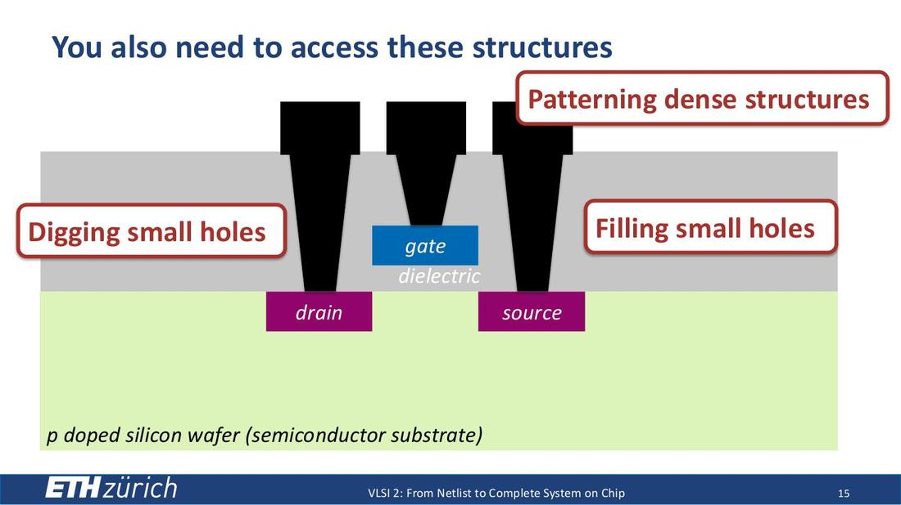
4.5 光刻与"涂—曝—显—做—洗"循环
要在晶圆表面按图形地"加材料"或"减材料"，就要靠光刻（lithography）。课件 p17 说明整套光学系统的工作原理：期望的图形先做在掩模（mask）上，掩模特征尺寸比最终图形放大 5 到 10 倍，刻在一块金属表面；再用光学系统把它缩小聚焦到晶圆表面。由于一次曝光只能覆盖很小一块区域，晶圆会被"步进"（stepped）着移动，让下一块区域接着曝光，以覆盖整片晶圆。课件还标注了一条硬限制：光学方法目前只能做到 193 nm。
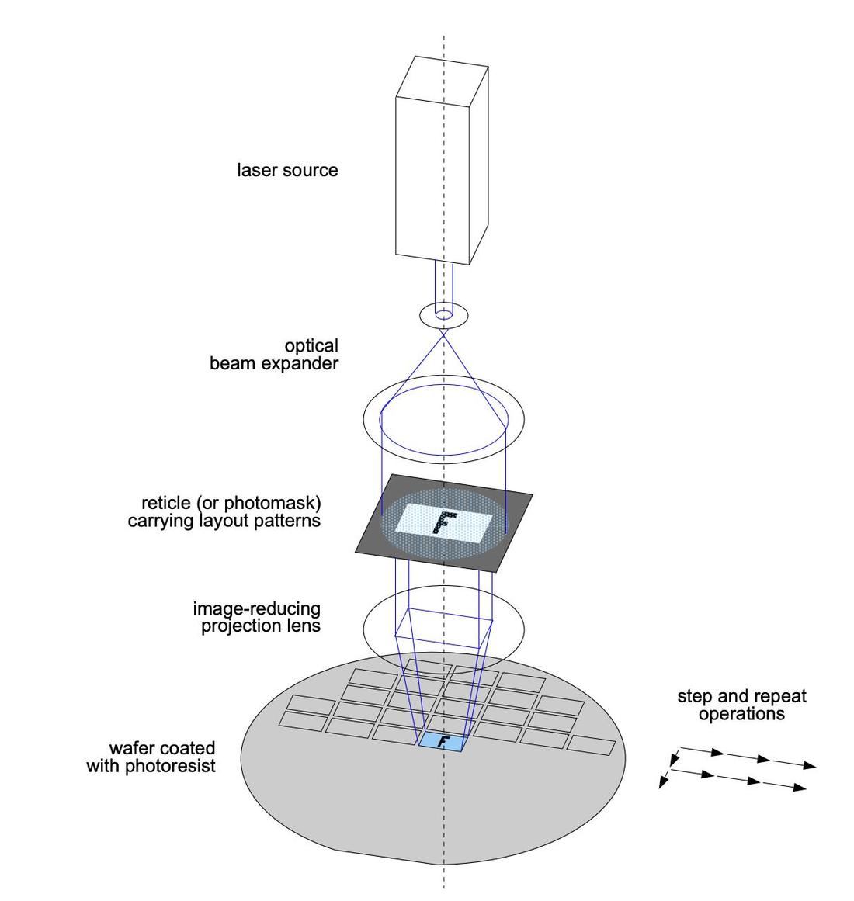
课件 p18–p23 把一次图形转移拆成五个动作，并强调这是一个循环：
- 涂光刻胶（coat photoresist）：在晶圆表面均匀涂一层感光有机材料，并需要固化处理（p18）。
- 透过掩模曝光（illuminate through mask）：光把掩模的图形投到表面，被照到的光刻胶性质发生改变（p19）。
- 显影（develop）：用溶剂把固化（正胶）或未固化（负胶）的部分去掉，留下图形（p20）。
- 执行制造步骤：未被光刻胶保护的区域被处理，方式主要有三类——刻蚀（etching）、沉积（deposition）、注入（implantation）；光刻胶则保护其余表面（p21）。
- 去胶并清洗：把有机的光刻胶溶解、冲洗干净（p22）。
做完这五步，只是完成了一层。课件 p23 给出量级上的提醒：整个过程要重复上百个步骤，用掉几十张掩模；而且每一张新掩模都必须对准到同一位置，并且要求表面足够平整才谈得上继续做图形。
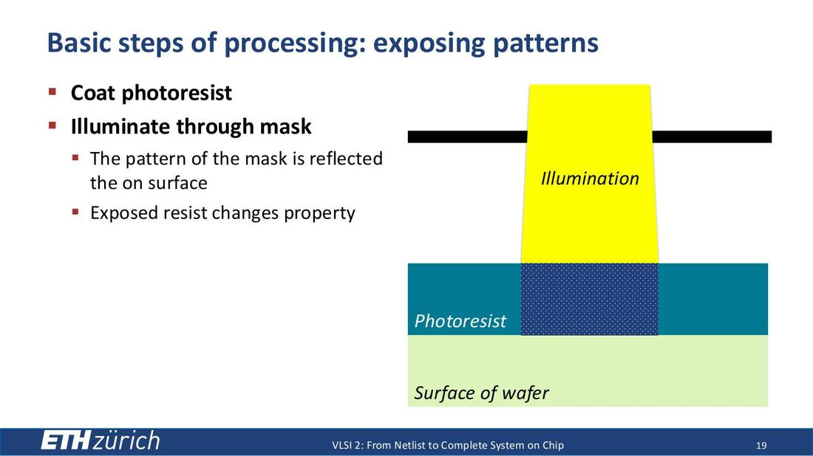
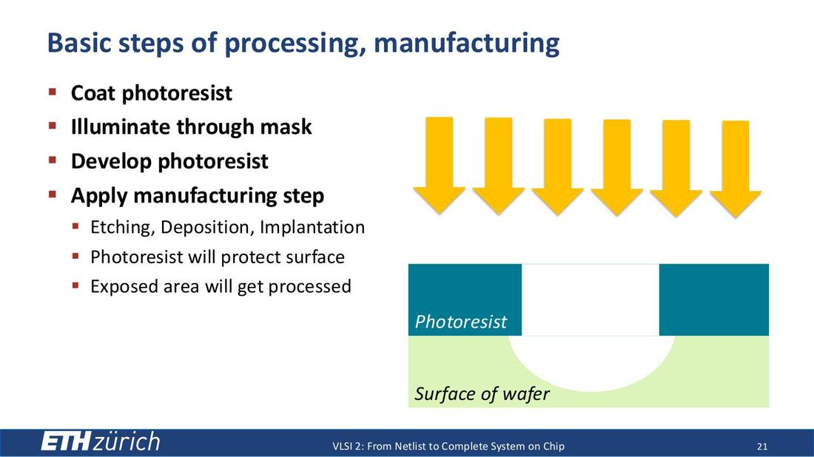
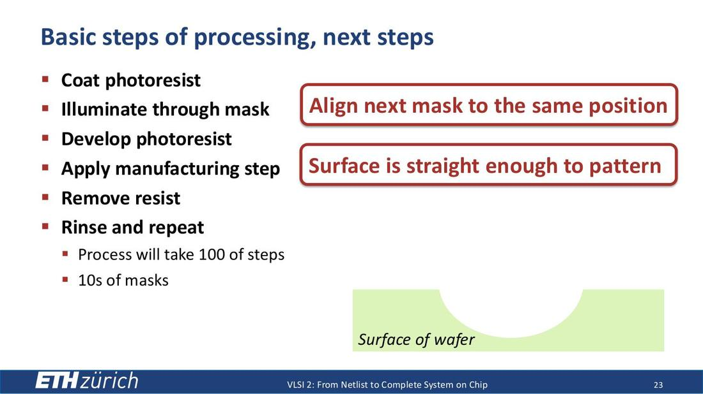
4.6 掩模：逻辑掩模与物理掩模，以及为什么可以省成本
课件 p24 对掩模做了总结。它把一次图形操作抽象成四类：光照（illumination）、注入（implantation）、沉积（deposition）、去除（removal）；掩模（photomask）决定哪块区域被这四类操作作用。图里给出两个视角：剖面视图（cut view）看沿"切线（cut line）"切开后的竖直层叠关系，俯视图（top view）看从上方看到的平面图形。以后读版图时，这两个视角要能来回切换。
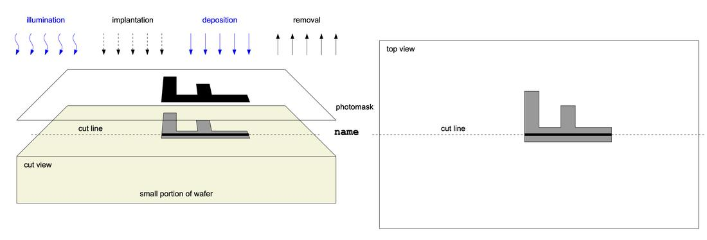
但这里有一个重要的区分（p26）：我们画图时画的是逻辑掩模（logical mask）——按"区域"来画，比如栅区（gate）、有源区（active）、n 阱（n-well）等等；而真正拿去制造的是物理掩模（physical mask）。两者之间的差别可以省下成本：
- 制造过程中，有些掩模可以从其他掩模推导出来，不必单独制作。
- 同一张物理掩模可以用于不同的步骤。
为什么值得专门讲？因为掩模本身要花钱制造，减少数量、让一张掩模多干几份活就能直接降成本。课件的总结很干脆：这样做省成本（saves costs）。
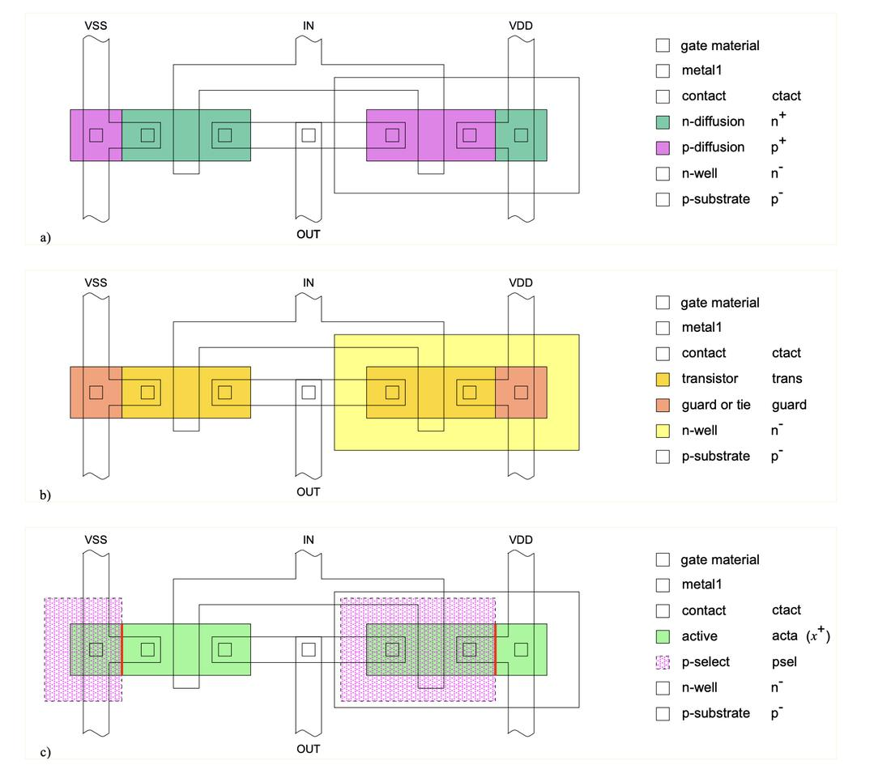
那么这套掩模到底是为了做出什么？课件 p25 给出的答案是：nMOS 加上 pMOS 等于 CMOS，这是整个工艺最重要的创新（the big innovation）。同一张图里，(a)(d) 是反相器的两种电路画法（上拉 PMOS、下拉 NMOS），(b) 是它的版图俯视与剖切关系，(c) 是沿切线展开的完整剖面：可以看到 p+/n+ 扩散区、n 阱与 p 衬底，以及接触孔（contact）如何把器件接到金属上。CMOS 之所以关键，是因为它让反相器在静态时几乎不耗电——这也是数字电路几乎全部建立在 CMOS 之上的原因。
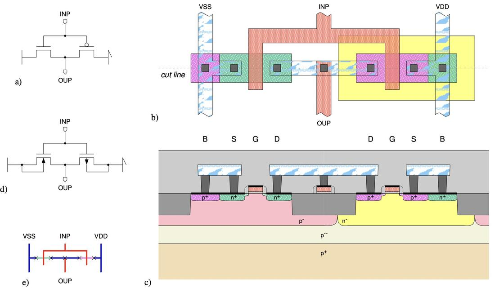
4.7 逐层搭建：从阱到高层金属
把 4.5 节的循环按顺序执行，芯片就这样一层一层"长"出来。课件 p27–p34 用"黑板上的分步演示"给出这条路线，顺序大致是：形成阱（wells）→ 定义有源区（active areas）→ 做晶体管（transistors）→ 开接触孔（contacts）→ 第一层金属（Metal1）→ 更高层金属（higher metals）→ 最终状态。其中 p27（也即 p34 的"最终状态"）给出最终完整剖面，并附图例列出所有层的名字。
对照图例可以把结构读出来：器件层（各种扩散区、阱、衬底）之上是栅金属和接触塞（contact plug），再往上是多层金属（metal1、metal2、metal3、顶层金属），层与层之间用通孔（via cut）连接，金属层之间填满层间介质（interlevel dielectric）做绝缘，最上面盖一层最终钝化层（final passivation）保护芯片。
为什么要这么多层金属？回到 4.4 节的 p15：我们不仅要做出晶体管，还要把它们连起来，而连线不能和器件抢同一块面积。于是工艺把互连分层：底层金属做单元内部的短连线，越往上的金属层越粗、越长，用来走全局的电源和时钟。每加一层，就要重复一次"打孔—填孔—铺金属—磨平"。
4.8 ICT 文件：金属叠层决定了寄生参数
最后回到本讲的标题。ICT 在这里指的是一种文件格式——互连工艺文件（ICT，Interconnect technology file）。课件 p36 说明它的作用：ICT 文件描述金属叠层（metal stack）本身——列出用了哪些材料、各自的电阻率（resistivity）与介电常数（permittivity），并给出各层高度（height），从而把叠层重新"搭"出来。据此可生成提取用的表格，计算：
- 导线以及通孔/接触的电阻；
- 导线之间的电容。
为什么这对本课程重要？第 8 讲要做寄生提取（parasitics extraction），依赖的正是这些由叠层定义出来的 RC 表。换句话说，本讲的金属叠层是后面时序分析（SDF）的物理基础，不是可有可无的背景知识。
不过课件也指出，ICT 文件如今并不常见了，原因有两个：现代制造工艺非常复杂，会用到多个更薄的小层；而一份详细的描述很可能泄露工艺机密。所以代工厂通常不再提供完整的叠层描述，而是直接交付已经提取好的 RC 表。
课件 p37 给出了一段 ICT 文件的片段，可以直观看到它长什么样。它用 conductor 和 dielectric 两种块来描述各层：多晶硅作为导体，给出了高度、厚度、电阻率，并标注它属于栅层、是形成栅的材料，以及温度系数；氧化层作为介质，给出了介电常数。
// […]
conductor "Polysilicon" {
height 0.600
thickness 0.15
resistivity 7
layer_type gate
gate_forming_layer true
temp_tc1 0.0029
}
// […]
dielectric ”ox1" {
conformal FALSE
height 0.750
thickness 0.50
dielectric_constant 4.1
}
}conformal 指该层是否"跟随下层轮廓"（follows contours of lower layer）；实际工艺中介质通常需要多层；而这种写法如今已相当少见。课件也注明这只是一个适配过的简化示例。本讲要点
- 三类材料各有取舍：导体要好导电又要兼容工艺；绝缘体的介电常数"越高越好"还是"越低越好"，取决于我们要的是电容还是避开寄生电容；半导体的价值则来自可控掺杂——不是半导体本身，而是掺杂让它有用。
- 晶体管是受电压控制的开关。摩尔定律驱动它不断缩小，但缩小同时带来"图形更难刻、氧化层更薄而电场更强、尺寸进入原子量级而涨落加剧"三重压力；器件做好后还必须刻孔、填孔才能连出去。
- 制造靠"涂胶—曝光—显影—刻蚀/沉积/注入—去胶"反复循环，全程上百步、几十张掩模；逻辑掩模可推出物理掩模、一张物理掩模可多用，从而省成本。最终叠成的多层金属由 ICT 文件描述，它定义了导线电阻与电容，是后续寄生提取与时序分析的物理基础。
LEF：标准单元与布线层
5.1 后端设计的抽象层次：晶体管之上只看互连
在完整的 IC 设计流程里，前端（front-end）关心晶体管本身——它的尺寸、阈值电压、开关特性；后端（back-end）则关心晶体管之间的互连（interconnect）：金属线（metal line）、通孔（via/contact）以及与外界相连的 I/O。把前后端拆开，是因为现代数字电路的规模已经大到不可能在画版图时还去逐个调整晶体管。工艺厂和单元库团队会先完成晶体管级设计，后端工程师拿到的只是这些预定义构建块的外形、引脚和可用布线层。
这种抽象带来一个关键问题：后端工具不需要知道单元内部每一根多晶硅走线，但必须精确知道“能在哪里连进去、哪里不能走线”。这一需求催生了抽象视图（abstract view），也就是用 LEF 文件描述单元的外形、引脚位置、障碍物（obstruction）等足够信息。
5.2 金属互连层：从晶体管到三维布线
所有逻辑功能最终都由晶体管实现，而晶体管的漏极（drain）、栅极（gate）和源极（source）必须用导线连起来。早期的工艺只用栅极多晶硅做短距离互连，并用 2–3 层金属连接漏/源；但多晶硅电阻较大，不能跑远距离信号。随着集成度提高，金属层数迅速增加。
每增加一层金属，工艺复杂度都会上升：表面越来越不平，下一次光刻的对准越来越难，层间通孔也越来越难做。真正的转折点是化学机械平坦化（Chemical-Mechanical Planarization，CMP）。平坦化让金属层表面重新变平，使后续光刻和刻蚀可以持续进行，金属层数因此从早期的 2–3 层跃升到 5–6 层，再到 8–13 层甚至更多。
现代金属层的使用有明确分工：靠近晶体管的下层用于单元内部和宏单元内部走线；中间层用于块间布线；上层更厚，用于长距离信号、电源和时钟。上层金属的节距（pitch）通常设计为下层节距的整数倍，这样上层的信号可以方便地“落下来”与下层对齐。
5.3 曼哈顿布线与轨道节距
为了简化自动布线，数字 IC 通常采用曼哈顿布线（Manhattan routing）：每一层金属有一个优先方向，要么是水平，要么是垂直。要从 A 点走到 B 点，先在某一层水平走，打一个通孔到相邻层，再垂直走。这种限制把三维布线问题拆解成可管理的二维问题，也更容易保证设计规则检查（DRC）通过。
衡量布线密度的基本单位是轨道节距（track pitch），即相邻两条金属走线中心之间的距离。它必须同时容纳线宽、线间距以及放置通孔所需的空间，因此通常比工艺最小节距略宽松。布线工具以轨道网格为单位放置走线，所以标准单元的宽度和高度也常常设计成轨道节距的整数倍，这样才能无缝拼接成整齐的单元行。
5.4 标准单元的物理结构：等高、电源轨与引脚
数字后端用标准单元库（standard cell library）来实现网表中的各种门。CMOS 门在物理上天然分成互补的两部分：上半部分是 pMOS 管，放在 n 阱（NWELL）里，负责把输出拉向 VDD；下半部分是 nMOS 管，负责把输出拉向 GND。输入信号通常同时接到两边的栅极，输出则从漏极取出。
为了便于布局布线，所有标准单元被组织成等高的行（row）。为什么必须等高？因为只有这样，相邻单元才能共享同一对电源轨（power rail），才能在行与行之间用统一的布线通道走线。单元的宽度则根据内部晶体管数量变化，但仍然是垂直轨道节距的整数倍。
一个标准单元的典型结构包括：顶部和底部的电源轨（VDD 在上，GND 在下）、位于 n 阱中的 pMOS 区、位于衬底上的 nMOS 区、以及需要从 Metal1 引出的输入/输出引脚。单元高度通常等于若干条水平轨道的总高度，因此也被称为“12-track cell”“10-track cell”等。
相邻两行标准单元通常采用“翻转”放置：一行的 VDD 在上、GND 在下，下一行则倒过来。这样两行之间可以共享一根电源轨或地轨，减小整体高度并简化供电网络。对后端工具来说，它不需要知道单元内部晶体管的具体形状，只需要知道引脚在哪里、在哪一层、以及哪些区域被内部走线占用而不能插入外部走线。
5.5 宏单元与 SRAM：无法塞进标准单元行的块
并不是所有功能都适合用标准单元实现。存储器就是一例：用触发器（flip-flop）做存储虽然速度快、可并行访问，但一位需要 20 多个晶体管；静态随机存取存储器（Static RAM，SRAM）把一位降到约 6 个晶体管；动态随机存取存储器（Dynamic RAM，DRAM）只需要一个晶体管加一个电容，但需要特殊工艺且读取会破坏数据。因此片上存储通常用 SRAM 宏单元（SRAM macro）实现。
SRAM 的核心是一个由 6T 单元组成的大阵列。阵列面积占整个宏单元的大部分，因此人们想尽一切办法压缩位单元（bitcell）面积。但位单元变小后，它要驱动的位线（bitline）电容很大，会限制速度，所以需要预充电（pre-charge）、灵敏放大器（sense amplifier）等电路配合。
实际项目中，SRAM 通常由宏单元生成器（macro generator）根据字数、位宽、多路复用因子、字节使能等参数自动生成版图、时序和 LEF 等视图。由于 SRAM 的版图并不遵循标准单元行高，放置时必须在宏单元周围留出隔离环（halo），并且标准单元行在靠近宏单元的一端要用小段的电源/地轨“收口”。
5.6 LEF 文件：把物理信息交给后端工具
LEF（Library Exchange Format）是后端工具读取物理信息的接口。它分为两类：
- Technology LEF：定义工艺层、通孔、设计规则等，通常每个工艺节点只有一份。
- Standard Cell / Macro LEF：定义单元和宏单元的外形、引脚、障碍物等，可以有多个库文件。
下面是一段 Technology LEF 的节选，来自课件 p39。注意所有语法都保持英文原样，中文解释放在代码块之后。
VERSION 5.7 ;
DIVIDERCHAR "/" ;
BUSBITCHARS "[]" ;
UNITS
DATABASE MICRONS 1000 ;
END UNITS
MANUFACTURINGGRID 0.005 ;
LAYER Via1
TYPE CUT ;
RESISTANCE 20 ;
SPACING 0.22 ;
ENCLOSURE BELOW 0.010 0.05 ;
ENCLOSURE ABOVE 0.005 0.05 ;
# […]
END Via1
LAYER Metal1
TYPE ROUTING ;
DIRECTION VERTICAL ;
PITCH 0.48 ;
OFFSET 0.0 ;
WIDTH 0.16 ;
MAXWIDTH 30 ;
AREA 0.09 ;
HEIGHT 0.930 ;
THICKNESS 0.40 ;
RESISTANCE RPERSQ 0.135 ;
CAPACITANCE CPERSQDIST 3.49E-05 ;
# […]
END Metal1逐句解释如下：
VERSION 5.7：LEF 版本号，工具据此解析语法。DIVIDERCHAR "/"：层次分隔符，用于类似A/B的层级名。BUSBITCHARS "[]"：总线位宽采用方括号，例如A[0]。DATABASE MICRONS 1000：数据库单位，1 微米被划分为 1000 个内部单位，因此坐标数值 1000 表示 1 μm。MANUFACTURINGGRID 0.005：制造网格，所有几何尺寸必须是 0.005 μm 的整数倍。LAYER Via1到END Via1：定义 Via1 这一切割层（CUT），包括电阻、间距，以及它必须被上下两层金属覆盖的最小距离（ENCLOSURE BELOW/ABOVE）。LAYER Metal1到END Metal1：定义 Metal1 为布线层（ROUTING），方向为垂直（VERTICAL），节距 0.48 μm，线宽 0.16 μm，最大线宽 30 μm，最小面积 0.09 μm²，厚度 0.40 μm，以及方块电阻和每平方单位电容。
再看标准单元 LEF 的节选，来自课件 p40。它描述了一个名为 sg13g2_a21o_1 的单元。
VERSION 5.7 ;
DIVIDERCHAR "/" ;
BUSBITCHARS "[]" ;
SITE CoreSite
CLASS CORE ;
SYMMETRY Y ;
SIZE 0.48 BY 3.78 ;
END CoreSite
MACRO sg13g2_a21o_1
CLASS CORE ;
ORIGIN 0 0 ;
SIZE 3.36 BY 3.78 ;
SYMMETRY X Y ;
SITE CoreSite ;
PIN A2
DIRECTION INPUT ;
USE SIGNAL ;
PORT
LAYER Metal1 ;
RECT 2.81 0.405 3.215 0.965 ;
END
END A2
# […]
PIN VDD
DIRECTION INOUT ;
USE POWER ;
SHAPE ABUTMENT ;
PORT
LAYER Metal1 ;
RECT 0 3.56 3.36 4 ;
# […]
OBS
LAYER Metal1 ;
RECT 2.915 2.21 3.175 3.125 ;
RECT 1.855 2.21 2.115 3.125 ;
RECT 1.855 2.21 3.175 2.405 ;
RECT 1.335 2.17 1.595 3.125 ;
RECT 1.335 1.54 1.575 3.125 ;
RECT 1.415 1.22 1.575 3.125 ;
RECT 0.625 1.54 1.575 1.87 ;
RECT 1.415 1.22 2.27 1.385 ;
RECT 2.02 0.825 2.27 1.385 ;
END
END sg13g2_a21o_1逐句解释如下：
SITE CoreSite：定义一个名为 CoreSite 的位置类型（site），表示标准单元应放置的“槽位”。CLASS CORE说明它属于核心逻辑区域；SYMMETRY Y表示单元可以沿 Y 轴翻转；SIZE 0.48 BY 3.78给出 site 的宽 0.48 μm、高 3.78 μm。MACRO sg13g2_a21o_1：开始定义一个宏/单元，对应网表中的sg13g2_a21o_1。CLASS CORE：这是一个核心逻辑单元。ORIGIN 0 0：单元本地坐标原点。SIZE 3.36 BY 3.78：单元宽度 3.36 μm、高度 3.78 μm。注意到高度正好等于 CoreSite 的高度，宽度则是 site 宽度的 7 倍（3.36 / 0.48 = 7），因此该单元占 7 个 site 列。SYMMETRY X Y：单元可以沿 X 轴或 Y 轴翻转，布局工具据此做行翻转。SITE CoreSite：该单元属于 CoreSite 类型，只能放在对应行上。PIN A2：定义引脚 A2；DIRECTION INPUT表示输入；USE SIGNAL表示信号引脚；PORT中的LAYER Metal1和RECT给出该引脚在 Metal1 层上的可连接矩形区域。PIN VDD：电源引脚；DIRECTION INOUT表示可进可出；USE POWER表示电源网络；SHAPE ABUTMENT表示该引脚设计为与相邻单元拼接，从而共享电源轨。OBS：obstruction，障碍物。列出的矩形区域表示 Metal1 在该单元内部已经被占用，外部布线工具不能在这些地方再放走线。
RECT x1 y1 x2 y2 中的坐标顺序是左下角到右上角，单位为 LEF 的 DATABASE MICRONS 所定义的内部单位。读 LEF 时务必留意单位和制造网格。5.7 从 LEF 中快速提取信息
LEF 文件可能包含成千上万个单元，手动浏览效率很低。课件推荐用命令行工具快速抽取信息：
grep "^MACRO" file.lef：列出所有以MACRO开头的行，也就是文件中定义的所有单元。其中^把匹配锚定到行首。awk '/^MACRO/{print $2}' file.lef：匹配以MACRO开头的行，并打印第二个字段，即单元名。grep "^MACRO" file.lef | cut -d " " -f 2：用管道把 grep 的输出传给 cut，以空格为分隔符取第二列，效果同上。
这些基本技巧在脚本化检查库文件、统计单元数量或查找特定引脚时非常有用。
本讲要点
- 后端设计以“互连抽象”为核心：不处理晶体管，只看标准单元/宏单元的引脚、障碍物和金属层规则。
- 标准单元必须等高且对齐成行，才能共享电源轨并形成统一布线网格；宏单元（如 SRAM）因版图不规则，需要 halo 和行收口处理。
- LEF 把 Technology LEF（层、通孔、设计规则）与单元 LEF（SITE、MACRO、PIN、PORT、OBS）分开描述，是后端工具理解物理世界的入口。
DEF 与布图规划
6.1 从网表到芯片：布图规划要回答什么
综合得到的网表只告诉我们“需要哪些门、它们如何连接”，并不回答这些门在硅片上放在哪里、芯片应该多大多宽。布图规划就是要补齐这一层几何决策。课件把这一阶段的目标概括为五点：确定芯片尺寸与形状；为标准单元准备核心区域（core area）；为宏单元找到合适的放置位置；布置 I/O 单元（I/O cells）以连接外部世界；最终把所有内容装进一个封装（package）里（课件 p3）。
为什么这一步如此关键？因为硅片的单位成本与面积成正比，晶圆上能切出的裸片（die）数量随面积增大而迅速减少。布图规划的直接经济目标就是：在满足性能、可布线性、电源完整性和封装约束的前提下，找到最小的可行硅面积；同时又不把工程迭代成本推高到得不偿失的地步（课件 p7）。
6.2 芯片面积与核心利用率
网表给出的只是所有标准单元的“净面积”（net cell area），实际芯片面积必须比它大。原因很直接：单元不能无缝密铺，还需要走线通道、电源网络、优化余量，以及宏单元和 I/O 单元周围的禁布区（keep-out regions）。此外，时序约束会把某些逻辑拉近，造成局部拥挤；时钟树综合（clock tree synthesis）和时序修复也会插入缓冲器，进一步占用面积（课件 p7）。
核心利用率（core utilization）是衡量这些额外空间占用程度的指标，定义为：
core utilization = net cell area / reserved core area
其中 reserved core area 是为标准单元预留的核心区域面积（课件 p18）。利用率太低意味着硅片浪费；利用率太高则可能导致布线拥塞、时序收敛困难。合理的初始利用率依赖工艺节点与设计类型，需要通过后端流程反复迭代来验证。
复杂设计通常采用层次化（hierarchical）方法：把电路拆成若干子模块，各自独立布局布线，再作为宏单元集成到顶层。这种“分而治之”的策略能减少单次优化的规模，但模块之间的接口时序约束必须事先明确。课件以 Poseidon 设计为例展示了这种 bottom-up 流程：先给三个子模块分配面积余量，再分别实现，最后在顶层把它们当作宏单元拼合（课件 p20–p21）。
6.3 I/O 环与焊盘设计
现代芯片的 I/O 使用专门的 I/O 晶体管，原因有三：第一，核心逻辑与 I/O 往往工作在不同电压（5.0 V、3.3 V、2.5 V、1.8 V、1.2 V 等）；第二，先进工艺节点（如 14 nm）的核心晶体管无法直接承受外部 PCB 的负载，因此 I/O 驱动器需要更大的尺寸和驱动能力；第三，I/O 单元要把芯片内部与外部噪声、静电放电（ESD）隔离开来（课件 p22）。
一个典型的 I/O 单元包含四部分：物理连接到封装（焊盘/凸点）、ESD 保护、输出/输入驱动器，以及电平转换与控制逻辑（课件 p24）。I/O 库通常分为数字 I/O、模拟 I/O 和电源单元三类；数字 I/O 又可按接口标准细分为标准、特殊、SSTL、HSTL、LVDS 等（课件 p25）。
I/O 设计会反过来约束 floorplan。焊盘（pad）并不小，而且需要电源环（power ring）等附加结构；I/O 数量与类型直接决定芯片是“焊盘受限”（pad limited）还是“核心受限”（core limited），进而影响面积与长宽比（课件 p28）。
此外，高速 I/O 还要处理同步开关输出（Simultaneously Switching Outputs，SSO）问题：当 64 位总线同时从高电平翻转到低电平时，大量电流在封装电感上产生 di/dt 压降，这一压降与频率无关，只取决于同时翻转的 I/O 数量。SSO 指标帮助我们估算需要多少对 I/O 电源/地（课件 p27）。慢速输入信号容易在跳变沿受噪声影响，可用施密特触发器（Schmitt trigger）提高噪声容限；快速输出则需要限制转换速率（slew rate）以降低开关噪声，或采用差分信号（如 LVDS）来换取更好的噪声裕度与更低功耗（课件 p29）。
6.4 电源规划：环、条带与网格
电源网络的规划在布图阶段就要确定，包括使用哪些金属层、每条电源线多宽、如何连接宏单元与 I/O 环（课件 p10）。核心电源与 I/O 电源通常分离，因为 I/O 驱动大负载时会在电源上引入显著噪声，而 I/O 电压也往往高于核心电压（课件 p34）。
常见的片上电源结构包括：
- 电源环（power ring）：沿芯片四周边缘或 I/O 环内侧走线的闭合电源/地环，为 I/O 和核心提供主干回路。
- 电源条带（power stripes）：从电源环或焊盘向芯片内部延伸的较宽金属条，把电源分布到核心区域。
- 电源网格（power mesh）：由水平和垂直电源条带交织成的网格，通过过孔（via）连接，降低整体阻抗并提供多条电流返回路径。
标准单元行内的电源由较细的内部电源轨（通常位于单元最上层金属）供给，而宏单元和 I/O 单元则需要专门考虑它们的电源接口位置与宽度（课件 p11–p12）。电源规划是否合理，直接影响 IR 压降、电迁移和芯片能否达到目标性能。
6.5 ESD 保护结构
静电放电（Electro-Static Discharge，ESD）是芯片在制造、测试、运输和装配过程中面临的常见威胁。人在合成地毯上行走可产生 100 V 到 30 kV 的静电，一旦通过封装引脚放电，峰值电流可达数安培，足以击穿内部薄栅氧化层（课件 p30）。
防护措施分为两条线：一是工艺与环境控制，包括湿度控制、防静电地板/服装/腕带、耗散性包装等；二是在芯片内部设计 ESD 保护网络。课件给出的典型结构包含二极管钳位（diode clamps）与限流电阻：当焊盘电压超过 VDD+0.7 V 或低于 VDD−0.7 V 时，二极管导通，把过压/欠压引导到电源/地；串联电阻限制流入内部电路的电流，保护次级保护器件与栅极（课件 p32）。
ESD 保护网络的关键思想是：为 ESD 电流提供一条低阻抗、定义明确的泄放路径（课件 p33）。电源单元不仅是“一根连线”，它们往往与 I/O 环配合，构成 ESD 保护网络的一部分，因此电源焊盘、VDD/VSS 环和 I/O 单元必须一并规划（课件 p34）。
6.6 封装形式与先进集成
裸片必须装入封装才能被使用。封装的作用不仅是机械保护和便于装配：它还承担散热、电气连接、甚至提升集成密度的任务（课件 p37）。选择封装时要综合考虑引脚数量、物理尺寸、焊接方式（通孔 / SMD / 球栅阵列）、热阻/热容，以及成本（课件 p39）。
传统的引线键合（wirebonding）把芯片贴在封装腔体中，用细金属线连接焊盘与引脚（课件 p40）。键合线有机械与电气限制：线太细容易断且电阻大，焊盘尺寸和键合角度也受工艺约束，因此周边能放的 I/O 数量有限。为了突破这一限制，出现了球栅阵列（Ball Grid Array，BGA）：芯片通过键合连到封装基板，再由基板把信号引到整面阵列焊球上，引脚密度大幅提高（课件 p55）。
更进一步的方案是倒装焊（flip-chip）：芯片正面朝下，通过焊球/铜柱直接连接到基板，典型凸点间距约 150 µm（C4），再用底部填充胶增强机械稳定性。倒装焊允许 I/O 分布在整片芯片表面，而不仅限于四周，同时散热路径也更短（课件 p58）。
封装技术还在向更高集成度演进：2.5D 集成把多颗裸片贴在硅中介层（interposer）上，通过中介层实现片间互连；3D 集成则通过硅通孔（Through-Silicon Via，TSV）把多颗芯片垂直堆叠（课件 p59–p60）。这些先进封装让“封装”不再只是保护壳，而成为扩展系统规模与带宽的关键手段。
6.7 DEF：布图信息的文本表达
前述所有几何与连接信息最终需要一种可交换的格式，DEF（Design Exchange Format）就是为此而生的工业标准。课件指出，DEF 包含芯片尺寸、标准单元行、已放置单元位置、I/O 环、宏单元位置以及所有网络的布线（课件 p67）。在设计早期，DEF 可能只包含 floorplan；随着后端推进， placement、routing 等信息逐步补全。
下面是一段来自课件 p68 的 DEF 文件头部示例，我们逐句解释。
VERSION 5.8 ;
DIVIDERCHAR "/" ;
BUSBITCHARS "[]" ;
DESIGN croc_chip ;
UNITS DISTANCE MICRONS 1000 ;
DIEAREA ( 0 0 ) ( 2017000 2017000 ) ;
ROW ROW_0 CoreSite 215040 215460 N DO 3306 BY 1 STEP 480 0 ;
ROW ROW_1 CoreSite 215040 219240 FS DO 3306 BY 1 STEP 480 0 ;
ROW ROW_2 CoreSite 215040 223020 N DO 3306 BY 1 STEP 480 0 ;
ROW ROW_3 CoreSite 215040 226800 FS DO 3306 BY 1 STEP 480 0 ;
# [ … ]| 语句 | 含义 |
|---|---|
VERSION 5.8 ; | 指明文件遵循 DEF 5.8 版本规范。 |
DIVIDERCHAR "/" ; | 层次化实例名中的层级分隔符为“/”，例如 i_croc_soc/i_croc/_05086_。 |
BUSBITCHARS "[]" ; | 总线位的索引符号为方括号，如 bus[3]。 |
DESIGN croc_chip ; | 当前设计的顶层名称为 croc_chip。 |
UNITS DISTANCE MICRONS 1000 ; | 距离单位：1 个数据库单位等于 0.001 µm（即 1 nm）。 |
DIEAREA ( 0 0 ) ( 2017000 2017000 ) ; | 芯片外接矩形对角顶点为 (0,0) 与 (2017000,2017000)，按上面单位约为 2017 µm × 2017 µm。 |
ROW ROW_0 CoreSite 215040 215460 N DO 3306 BY 1 STEP 480 0 ; | 定义名为 ROW_0 的标准单元行：使用 site CoreSite，左下角坐标 (215040,215460)，方向 N（North），沿 x 方向重复 3306 个 site，步进 480；y 方向只 1 行。 |
N / FS | 方向标记：N 表示正向（North），FS 表示沿 South 方向翻转（Flipped-South），相邻行常用相反方向以共享电源轨。 |
接下来是 COMPONENTS 与 NETS 段，分别描述已放置单元和网络布线（课件 p69）。
[ … ]
- i_croc_soc/i_croc/_05086_ sg13g2_inv_1 + PLACED ( 902880 948780 ) N ;
- i_croc_soc/i_croc/_05087_ sg13g2_nor4_2 + PLACED ( 848160 956340 ) N ;
- i_croc_soc/i_croc/_05088_ sg13g2_nor4_1 + PLACED ( 853920 956340 ) N ;
- i_croc_soc/i_croc/_05089_ sg13g2_nand2_2 + PLACED ( 855360 952560 ) FS ;
[ … ]
- net983 ( fanout983 X ) ( i_croc_soc/i_croc/i_core_wrap/_19735_ A2 ) (
i_croc_soc/i_croc/i_core_wrap/_19821_ A1 ) ( fanout977 A ) ( fanout978 A ) (
fanout979 A ) ( fanout980 A )
( fanout981 A ) ( fanout982 A ) + USE SIGNAL
+ ROUTED Metal2 ( 792000 984900 ) ( * 985740 )
NEW Metal2 ( 792000 985740 ) ( 813120 * )
NEW Metal3 ( 813120 985740 ) ( * 1007580 )
NEW Metal2 ( 792480 980700 ) ( 793440 * )
NEW Metal3 ( 793440 980700 ) ( * 985740 )
[ … ]| 语句 | 含义 |
|---|---|
- i_croc_soc/i_croc/_05086_ sg13g2_inv_1 + PLACED ( 902880 948780 ) N ; | 名为 _05086_ 的实例对应 LEF 中定义的单元 sg13g2_inv_1；状态为 PLACED，左下角坐标 (902880,948780)，方向 N。 |
- net983 ( fanout983 X ) … + USE SIGNAL | 定义网络 net983，列出所有连接的引脚（pin）名称；+ USE SIGNAL 表示这是普通信号网络（非电源/地/时钟）。 |
+ ROUTED Metal2 ( 792000 984900 ) ( * 985740 ) | 该网络的第一段布线位于 Metal2 层，从 (792000,984900) 到 (792000,985740)；“*”表示该坐标与前一个坐标相同。 |
NEW Metal2 ( 792000 985740 ) ( 813120 * ) | NEW 开始一段新的布线路径；在 Metal2 层从 (792000,985740) 走到 (813120,985740)。 |
NEW Metal3 ( 813120 985740 ) ( * 1007580 ) | 换到 Metal3 层，通过过孔隐式连接；从 (813120,985740) 走到 (813120,1007580)。 |
除了这些，DEF 还常用 PINS 段描述 I/O 焊盘的位置、层和方向；BLOCKAGES 段声明禁止放置或布线的区域，例如宏单元周围的 keep-out；以及 SPECIALNETS 段描述电源/地网络的宽金属布线。这些段使 DEF 成为连接 floorplan、placement 与 routing 各阶段的中枢文件。
本讲要点
- 布图规划决定芯片面积与形状：核心利用率、宏单元位置、I/O 环与封装约束共同把“网表面积”放大为“芯片面积”。
- I/O 环与电源规划是 floorplan 阶段必须同步解决的问题：核心与 I/O 电源分离、ESD 保护、键合/倒装焊等封装形式会反过来约束焊盘数量和芯片尺寸。
- DEF 用文本化的 DIEAREA、ROW、COMPONENTS、NETS 等段把几何与连接信息标准化，使 floorplan、placement、routing 各步骤之间能够无损交换。
LIB：时序、时钟树与工艺角
7.1 SETUP 与 HOLD：同步设计仅有的两条时序条件
课件从调度问题入手：电路里只有一个物理加法器，要顺序处理一路送来的 10 个数（100, 100, 250, 200, 256, 185, 185, 200, 0, 0）。难处在区分它们——从 200 跳到 256 时，怎么确定中间没漏掉一个数？数据本身不携带"我属于哪个周期"的信息，切分时间的机制必须由外部提供。
一条路是异步（asynchronous）：块间用握手（handshake）信号，算完交给下一级、就绪后通知上一级，每次跳变都有意义；但课件提醒 "We are not discussing how these signals are generated (not that easy)"——协议不难，难的是在每级都正确、快速、低功耗地产生它。另一条路是全局时钟（global clock）：同一个同步信号送到所有部分，由状态保持元件（触发器 FF、锁存器 latch）推进状态，课件称它是 "by far the most convenient approach, widely used"。时钟规定数据流、周期决定计算时间，我们只需保证它到达每个地方并满足两条约束：SETUP（有足够时间算出下一状态）与HOLD（在下一状态被覆盖前有足够时间）。
Setup:
Tclk >= tpd_ff1 + tpd,c + tsu,ff2
Hold:
thold <= tcd,ff1 + tcd,c两类延迟必须分清：传播延迟（propagation delay, tpd）决定路径最长能多慢，污染延迟（contamination delay, tcd）决定路径最短能多快。SETUP 用最慢的延迟卡周期，HOLD 用最快的延迟卡安全——所以同一条路径要算两遍，也所以工艺角会从两个相反方向咬我们：芯片变快对 SETUP 有利、对 HOLD 有害。另外 HOLD 与时间预算无关、只关乎新旧数据是否撞车，所以降频救不了 HOLD 违例。
7.2 STA：为什么不能用功能仿真查时序
既然只有两条条件，跑波形不就行？课件说不行。功能仿真需要输入向量：Verilator 这类仿真器用于功能验证，只能回答"这些输入下对不对"，而时序违例恰恰出现在你没想到的组合上——课件原话是它 "can not test every corner case without proper vectors that you need to supply"。要证明时序正确需要覆盖所有路径；何况还有循环依赖：仿真里的延迟值从哪来？
静态时序分析（STA）不需要向量：它把设计展开成有向图，穷举所有时序路径，由约束给出边界条件，并接受一些特殊说明（例如哪些信号本来就不关键）。它的延迟数据来自两处：时序库（LIB）给出单元在给定负载与输入转换时间下的延迟，寄生提取给出连线的电阻电容。缺一不可——LIB 描述"门"，寄生描述"线"。综合时还没有真实布线，只能用线负载模型（wireload model）近似；版图完成后提取真实寄生再重新反标（back-annotate）延迟，这是第 8 讲的主题。
7.3 时钟分布的挑战与时钟树
同步方案看起来完美，唯一的问题是课件那句轻描淡写的话："clock needs to arrive simultaneously"，而"同时"在物理上很贵。困难很具体：时钟要覆盖很大一片面积，走线长、寄生大；要驱动极大的负载，Croc 这样简单的设计里就有超过 7000 个触发器；还要求边沿陡峭，因为转换时间（transition，即 rise/fall time）一长，信号更易受噪声干扰、延迟更难预测，还会让上下管同时导通产生短路电流。所以时钟必须靠缓冲器搭出多级时钟树（clock tree）。
图 7-2 把三个概念钉在同一结构上：插入延迟（insertion delay）是从时钟源到叶节点的绝对时间，偏斜（skew）是不同叶节点之间这个时间的差。信号每经一级缓冲就变陡一点、也变晚一点；通过平衡缓冲器并把它们摆在"正确"的位置（课件举了 H-tree 布置），可以压住 skew。但账单也很清楚（p14）：树本身有最小插入延迟无法回避，缓冲器占额外面积，更重要的是烧功耗——课件特意留了一句给第 10 讲："Clock is the most active net with the highest capacitance"。所以目标只能写得很克制：找一个好的折中，让 skew 和代价保持平衡。
7.4 时钟树的演进与插入延迟的副作用
课件用三页把时钟分布的主要形态排成 a) 到 f)，并对若干种打上禁止或警告标志：从 padframe 引出的时钟若在核内自由绕线、一路不加缓冲，是不可接受的；H-tree 用对称的 H 形几何把时钟送到各子区，路径长度天然匹配，但也被标以警告。越接近现代的做法是把驱动分散到树的各级，或干脆用网格（grid / mesh）由规则分布的驱动器馈送，把各处到达时间的差"短接"掉，代价是网格上的电容与功耗。
演化主线很清楚：每次变化都是在同一个折中三角上换位置——skew 越小、边沿越陡，面积、功耗与插入延迟的代价越大。课件 p23 还提醒：是约束在驱动时钟树生成。转换时间目标、skew 目标、扇出限制直接决定工具长出多大的树，不必要或过紧的约束会长出过大的树、烧掉过多功耗；生成后必须复查结果——很多时钟树问题就是因为 "people do not check the results of the tree generation"。
插入延迟既然存在，能不能消掉？课件 p26 给出两条经典答案：锁相环（PLL）与延迟锁定环（DLL），都是把片上时钟的相位与外部时钟比较，再用结果去调节片上时钟。
图 7-6 是本讲最该记住的一张图。插入延迟对寄存器到寄存器路径几乎无影响（两端同时被推迟，差被消掉），但对跨芯片边界的路径是单向的：输入方向白赚一段，输出方向白亏一段。这就是课件标题说的 "Unintended consequences, moving the I/O timing"——你只是想让时钟树好一点，接口时序却被推走了；若接口要满足外部标准（例如 DDR 的参数），这个偏移必须显式算进约束。
create_clock、set_input_delay、set_output_delay，作用就是把图 7-5 那几段翻译成工具能读的边界条件；其具体用法不在本讲课件范围内，这里不展开，要记住的是它们的物理含义（t_idel 与 t_odel）。7.5 skew、jitter 与 latency：三个量、三种来源
关键是两组对比。延迟 vs 偏斜：延迟是绝对量（从源到叶走了多久），偏斜是它在空间上的差——课件里的 insertion delay、distribution delay 与通常说的 latency 指一件事。偏斜 vs 抖动：偏斜是同一拍内不同寄存器之间的差，通过平衡时钟树可压；抖动是同一寄存器不同周期之间的差，源于噪声（电源噪声、衬底噪声等）。
由此可得三个结论。第一，skew 可以被利用（课件 p11：它 "can help us"，给 SETUP 多一点时间、给 HOLD 少一点压力），一些工具还支持有用偏斜（useful skew）；但课件补一句 "No magic solution, you need to be able to 'steal' what you use without issues"——借来的时间最终要还。第二，jitter 不能被时钟树平衡掉，因此给 skew 设定了不可逾越的下限，也永远不能变成 useful skew。第三，所以必须留裕量（"we need to add a margin in our timing for it"）；在时序约束里这个裕量通常以"时钟不确定性"的形式给出，它的两个来源正是 skew 与 jitter。
课件 p28 还有一句很硬的建议：状态保持元件一旦放好就不要动，因为时钟树是按触发器位置长出来的，动一个就可能打破整棵树平衡。
7.6 时钟策略：单边、双边与两相锁存器
VLSI 1 里其实已经默认选定了一种用法：同步单边沿触发触发器——状态存在上升沿（或下降沿）触发的触发器里，是设计数字时序电路最简单的方式。课件 p31 把优缺点摆得很平：简单、时序好理解、广泛使用，而且时钟占空比不重要；但短路径容易出现 HOLD 违例，触发器比锁存器更大，也不容易从一个周期借时间给另一个周期。课件还给了句口诀：用上升沿还是下降沿无所谓，但不要把两者混在一起。
另一个方向是回到锁存器（latch）。锁存器电平敏感，时序参数与触发器不同——没有"沿"这个绝对时刻，而是有相对透明窗口闭合的建立时间与 CLK 到 Q 的延迟。课件 p30 把两类元件的参数并排放置，因为这两套参数写的是不同的东西，混用会导致时序约束写错。
有了 T2/T4，两相方案能有机地从一个周期借时间给下一个周期，代价是必须产生严格不交叠的时钟，时序分析更麻烦、测试更复杂。把这条路走到极端的两个退化版本，课件都用否定的语气收尾：单线电平敏感两相时钟（p35）去掉非交叠相位、只用一根时钟线，更简单，但 T2、T4 的好处全部消失；再极端一点，单相电平敏感（p36）只剩一个锁存器和一根时钟，课件说 "all safety nets are gone"，结论是 "Not recommended at all!"。
| 方案 | 优点 | 代价 |
|---|---|---|
| 单边沿触发器（最常见） | 简单、占空比无关 | 短路径易 HOLD 违例；元件更大；难以跨周期借时间 |
| 双边沿触发器（多用于 I/O） | 速率翻倍；可能省功耗 | 每拍做事时间减半 |
| 电平敏感两相锁存器 | 能自然借时间；锁存器更小；靠 T2、T4 抗 skew/jitter | 需严格非交叠时钟；时序更难；测试更复杂 |
| 单相电平敏感 | 实现可能更小 | 没有安全网，极难做对，课件建议"远离" |
7.7 工艺角：把"变化"变成可签核的边界
到此我们假设延迟是确定值，但制造出来并非如此。课件 p38 指出时序（和功耗）直接受三个参数影响：工艺（Process），由制造质量决定（第 4 讲）；电压（Voltage），很难在全芯片处处供应高质量电源（第 10 讲 IR drop）；温度（Temperature），泄漏、电流、电阻等一批电学参数都随温度变化。三者合称 PVT 角（PVT corner）。课件特意指出它们技术上是独立的，但工程上 "frequently bunched together"，示例 SS-1.08V-125C 的含义是：slow nMOS、slow pMOS、比 1.2 V 标称低 10%、125 摄氏度。
为什么需要一个范围而不是一个点？制造分布意味着极少数芯片才恰好落在中值附近。比设计更快的芯片是坏芯片吗？看情况：更快对 SETUP 是好事，对 HOLD 是坏事。于是只能反过来定义一个可接受区间——太快的不能用，太慢的也不能用，中间这一段我们愿意卖，这样能卖掉更多已制造出的芯片（p41、p43）。有了区间，工艺角就是区间的边界（p44）：只要保证边界上的芯片都能满足时序，落在中间的必然也满足。所以签核的门槛设在角上而不是中值上。
电压这一维常被误解。课件 p45 强调并不是我们假设电压很不稳，而是供电存在非理想因素（纹波、过冲与下冲），加上芯片内部电阻路径造成的 IR drop 使到达标准单元的电压低于标称。因此"只要能把 IR drop 控制在 10% 的余量内，我们就覆盖到了"——这句话正好解释了 SS-1.08V-125C 里那 10% 的来历。温度则是 "a wild card"：一部分来自工作环境，一部分来自电路自热与散热效率，不同用途（汽车、军工）允许的范围本就不同。
| 课件 p46：IHP 库标定的两套角（不可混用） | |
|---|---|
fast_1p32V_m40C | fast_1p65V_m40C |
typ_1p20V_25C | typ_1p50V_25C |
slow_1p08V_125C | slow_1p35V_125C |
现代工艺把这件事变得更复杂（p48）。主要趋势仍在：芯片在低温、高压下更快；但高阶效应很多——在某些较低电压下，温度更高反而更快，因此已不能断言哪个角一定对 SETUP 或 HOLD 最关键。现代工艺的角有几十个甚至接近一百个，签核（sign-off）通常跑遍所有角，代价是大量分析与优化时间；课件提到用体偏置（body biasing）减轻负担：施加静态体偏压把芯片"调"到更窄的区间，也有方案做自适应体偏置，在运行中透明完成。
7.8 Liberty（LIB）时序库解剖
前面所有关于延迟的讨论最终都要落在数据上：STA 凭什么知道一个反相器的延迟是 0.02 ns 还是 0.8 ns？答案是 LIB 文件。课件 p50 说明它的地位：综合工具从 LIB 里拿功能、面积、速度三种信息；STA 依赖其中的延迟表工作，而 STA 又支撑前后端所有优化——LIB 是整个流程里时序数据的唯一契约。它含两类内容：库级信息（基本单位、约束默认值如最大扇出与最大转换时间、用来近似寄生效应的线负载模型）与单元级信息（每个单元所有输入到输出转换的延迟表与功耗表）。
library (sg13g2_stdcell_typ_1p20V_25C) {
delay_model
: table_lookup;
capacitive_load_unit
(1,pf);
current_unit
: "1uA";
leakage_power_unit
: "1pW";
time_unit
: "1ns";
voltage_unit
: "1V";
default_max_capacitance : 0.3;
default_max_fanout
: 8;
default_max_transition
: 2.5074;
nom_process
: 1;
nom_temperature
: 25;
nom_voltage
: 1.2;library (sg13g2_stdcell_typ_1p20V_25C)——库名就把条件写全了：IHPsg13g2工艺、标准单元库、typ 角、1.20 V、25 ℃。工具靠名字索引角，名实必须相符。delay_model : table_lookup;——声明延迟用查表计算。它是可选项，说明该格式允许不同的延迟模型。- 五个单位声明——后面表格里的裸数字全按这些单位解释，错一个字节整库延迟就错几个数量级。
- 三个
default_max_*——库级默认约束，单元未单独指定时生效。它们不是"事实"而是设计意图，超过就报违例。 nom_*三项——标定条件：后面的延迟表是在"25 ℃、1.2 V、工艺为 1（归一化值）"下测出来的。
lu_table_template (TIMING_DELAY_7x7ds1) {
variable_1 : input_net_transition;
variable_2 : total_output_net_capacitance;
index_1 ("0.0186, 0.0966, 0.174, 0.3294, 0.6408, 1.263, 2.5074");
index_2 ("0.001, 0.0234, 0.039, 0.0648, 0.108, 0.18, 0.3");
}lu_table_template 与对应的 7×7 查找表：横向是 Total Output Net Capacitance（index_2 的断点），纵向是 Input Net Transition（index_1 的断点）。模板只定义表的形状，数值由后面引用它的 values 填充。来源：课件 p52（该页标题误写成 "Anatomy of a DEF file"，内容其实是 LIB）为什么延迟要用两个变量索引？一个门的延迟一阶上由两件事决定：输入信号本身有多陡（输入转换慢，管子长时间处于半开状态，输出就更晚翻转），以及它要驱动的负载有多大（电容越大充电越慢）。这两个量恰好就是 input_net_transition 与 total_output_net_capacitance。既然延迟是它们的函数，就把这个二维函数采样成网格，每行每列由一个断点（breakpoint）定位，运行时做二维插值；7x7 表示每个方向 7 个断点、共 49 个值，是精度与体积的折中。
那为什么用表而不用公式？课件 p55 给了答案：这类表 "usually generated automatically using multiple SPICE runs"。真实晶体管延迟受大量二阶效应影响（尤其短沟道器件），没有简单解析式能算准；SPICE 算得准，但对几千万门的设计每次都跑根本跑不完。查表加插值就是两者的折中：精度由 SPICE 保证，速度由插值保证。课件只展示了 table_lookup 这一条路线，并提到 LIB 里"还有许多其他计算延迟的方式"而未展开——更精细的模型本讲未涉及，讲义不代为补充。
cell (sg13g2_inv_1) {
area : 5.4432;
cell_footprint : "IN";
cell_leakage_power : 62.9723;
leakage_power () {
value : 82.4073;
when : "A&!Y";
}
leakage_power () {
value : 43.5373;
when : "!A&Y";
}cell (sg13g2_inv_1)——单元名，一个单元一条记录，工具按名字在网表里索引。area : 5.4432;——面积，供综合做面积优化。片段里没有 area 单位声明，故它只能当相对量用于单元间比较，不能直接当 µm² 用。cell_footprint : "IN";——把"版图脚印相同"的单元归为一类（这里是反相器族），工具做等效替换时才知道哪些单元可直接互换而不破坏布局。cell_leakage_power——整个单元的平均漏电功耗，是功耗优化的依据之一。leakage_power () { value : ...; when : "A&!Y"; }——条件漏电：漏电依赖晶体管状态，when给出该数值成立的条件。这就是同一个单元要写多条 leakage_power 的原因——不同状态的漏电可以差很多，取平均会失真；when里的&!是 Verilog 风格的与、非，由工具解析字符串。
pin (Y) {
direction : "output";
function : "!(A)";
min_capacitance : 0.001;
timing () {
related_pin : "A";
cell_rise (TIMING_DELAY_7x7ds1) {
index_1 ("0.0186, 0.0966, 0.174, 0.3294, 0.6408, 1.263, 2.5074");
index_2 ("0.001, 0.0234, 0.039, 0.0648, 0.108, 0.18, 0.3");
values ( \
"0.02082, 0.0841762, 0.127392, 0.198773, 0.318202, 0.517192, 0.848807", \
"0.0406465, 0.122122, 0.165229, 0.236765, 0.356492, 0.555268, 0.886778", \
"0.0940591, 0.392424, 0.514929, 0.671701, 0.874693, 1.12559, 1.46255", \
/* [ … ] */
);
}
}
}pin (A) {
direction : "input";
max_transition : 2.5074;
capacitance : 0.00289398;
/* [ … ] */
}
}pin (Y) { direction : "output"; function : "!(A)"; ... }——Y 是输出引脚，功能是 A 取反。功能与速度在同一个对象里，这正是综合工具只读 LIB 就能同时做逻辑映射与时序优化的原因。min_capacitance : 0.001;——驱动该输出时允许的最小负载电容。负载过小反而不好（摆率过快、模型外推），所以它是下限。timing () { related_pin : "A"; cell_rise (...) { ... } }——这是时序弧（timing arc）的定义：related_pin指明延迟从哪个输入算起，即A 到 Y 存在一条时序弧；cell_rise是"输出上升"的延迟表，它引用前面定义的模板（故模板必须先定义）。同一个timing()里通常还有cell_fall及rise_transition/fall_transition，课件只用cell_rise作代表；反相器只有一个输入所以只有一条弧，与门、或门这类多输入单元每个输入到输出各有一条。values ( \ ... \ /* [ … ] */ );——真正的 49 个数值按行优先排列：第一行 7 个数对应index_2的 7 个负载电容、固定index_1的第一个转换时间点 0.0186 ns；课件用自己的/* [ … ] */省略了其余各行。pin (A) { direction : "input"; max_transition : 2.5074; capacitance : 0.00289398; }——输入引脚只需交代它的电容（上游要驱动它，所以要算负载）与它的最大转换时间约束；末尾孤立的}是前面cell (...)的闭合括号。
default_max_transition : 2.5074 正好等于 index_1 的最后一个断点，default_max_capacitance : 0.3 正好等于 index_2 的最后一个断点，输入引脚 A 上的 max_transition 也是同一个数。这说明索引表的采样范围就是按设计约束的上限选的——超出范围工具只能外推，而外推不可靠。所以当某节点转换时间远大于 2.5074 ns 时，问题不是"表算得不准"，而是这个节点本来就已经违约了。timing() 只写了 related_pin，没有出现对时序弧做分类的属性（例如描述弧单调性的 timing_sense，或描述时钟/数据关系的 timing_type）。课件没有展示这些语法，讲义也不代为补写——它们属于完整 Liberty 规范，请以工具厂商文档为准。同理，本讲片段只覆盖组合单元；触发器、锁存器所需的时钟相关时序（建立、保持、CLK 到 Q 等）课件没有给出示例，此处如实指出而不虚构。本讲要点
- 同步设计只有两条时序条件：SETUP（Tclk ≥ tpd_ff1 + tpd,c + tsu,ff2，看最慢路径）与 HOLD（thold ≤ tcd,ff1 + tcd,c，看最快路径）。tpd 与 tcd 是两回事，所以工艺角从两个相反方向咬我们，降频也救不了 HOLD。
- 时序必须用 STA 检查：仿真需要你提供向量，而违例恰恰出现在没想到的组合上；STA 无需向量，靠约束给边界条件，并依赖 LIB（门）与寄生提取（线，第 8 讲）。
- 时钟难分布的原因很具体：面积大、线长、寄生大、负载极多（Croc 就超过 7000 个触发器）、需要陡峭边沿。解法是多级缓冲时钟树，代价是面积、功耗与插入延迟；而且是约束在驱动时钟树生成。
- 插入延迟会单向移动 I/O 时序：跨边界的路径里输入方向白赚一段、输出方向白亏一段，而寄存器到寄存器路径几乎不受影响。PLL/DLL 以时钟树末端为反馈点，可扣除"树之前的延迟"。
- 三个量要分清：latency 是绝对时间（min/avg/max t_dl），skew 是同一拍不同寄存器之间的空间散布（max|t_sk|），jitter 是同一寄存器不同周期之间的时间散布（t_jt）。skew 可被利用（useful skew），jitter 源于噪声、不能被时钟树平衡掉，给 skew 设了下限；两者都要在时序里留裕量。
- 时钟策略：单边沿触发器最简单通用但短路径易 HOLD 违例；双边沿（DDR）速率翻倍、每拍可用时间减半；两相锁存器靠 T2、T4 获得对 skew/jitter 的天然容忍并能跨周期借时间，代价是非交叠时钟与更难的时序、测试。
- 工艺角（PVT）把制造、电压、温度的变化变成可签核的边界：角上满足则中间必然满足；供电的 10% 余量来自"把 IR drop 控制住"的工程约定。同一电路 worst/typ/best 角的相对速度为 64.2% / 100% / 140.9%；现代工艺角有几十甚至近百个，且已不能断言哪个角最关键。
- LIB 是全流程的时序数据契约：
delay_model : table_lookup声明查表法，lu_table_template定义表的形状，单元用cell_rise (模板)引用模板并填values；pin (Y) { timing () { related_pin : "A"; ... } }就是一条时序弧的定义。表由多次 SPICE 仿真自动生成——SPICE 保精度，插值保速度。
寄生效应、信号完整性与 SDF 反标
8.1 寄生参数：芯片上"没要"的四种元件
我们设计电路时只把晶体管当成元件，但芯片一旦做出来，金属线、通孔、氧化层、衬底会一起贡献出一个分布式的 RLCG 网络。课件用四个字母把这四类寄生参数和它们的后果一一对应起来：
| 寄生参数 | 出现在哪里 | 造成什么后果 |
|---|---|---|
| 电阻 R（Resistance） | 电源连接、恒定直流电流 | 决定速度的时间常数；线上产生压降 |
| 电感 L（Inductance） | 电源连接、供电电流发生变化时 | 地弹（ground bounce）／电压跌落（voltage droop） |
| 电容 C（Capacitance） | 导线与导线、导线与衬底之间 | 速度的时间常数；动态功耗变化与电源纹波 |
| 电导 G（Conductance） | 不理想的绝缘体、上拉/下拉结构 | 漏电（leakage） |
为什么这四样全都冒出来？回到 CMOS 最基本的样子：一个电压控制的电流源去驱动一个电容性负载，而这个电流源要通过一根不完美的导体连到多个负载上。导体不完美，于是 R 让线上有压降，C 在原有负载上再加一份电容，L 造成交叉耦合，G 来自不理想的绝缘。对应的四个工程后果是：RC 延迟（影响时序）、交叉耦合（一条线上的信号影响邻线）、电迁移（electromigration，电流过大会从物理上毁掉金属连接）、以及 IR 压降（电流流过非理想导体，把供给电压拉低）。
8.2 互连的电阻与电容：截面和距离决定一切
先从最朴素的充电过程看起。把输出从低电平充到高电平，本质是电流源往负载电容里灌电荷。所以"怎么才能更快"的答案只有两条：更大的电流，或者更小的电容。前者受晶体管宽长比 W/L 的限制，后者则要我们去理解导线电容的构成。
导线电阻很直观：V = I·R，线越长电阻越大；好消息是截面越大电阻越小。但"截面大"这件事在版图上是有代价的——它同时改变了电容。从剖面看，这与四件事有关：金属层的厚度、侧壁面积、线与线之间的距离、以及氧化层的厚度。课件用两句话把取舍讲得很清楚：小 R 就意味着大 C；薄氧化层就意味着更高的 C。氧化层厚度还直接关系到通孔（via）的可靠性，是先进工艺里的一个突出问题。
为什么要强调"寄生电容是复杂结构"？因为很多人下意识地把它当成一个平行板电容去算，而实际版图里占主导的往往是边缘电容和侧向电容——两根本不相交的相邻导线之间照样有耦合，而且线距越近耦合越大。课件明确点出了这个关键：关键在于距离，越近问题越大。这也解释了为什么布线工具会把"不要贴着最小间距走长线"当作一条准则。
电阻和电容合在一起就是 RC 延迟。真实的连线不是一根电阻加一个电容，而是一个分布式 RC 阶梯：每一小段都有自己的 r 和 c。课件给出的结论是总延迟约等于 τ ≈ r·c·l²/2，即延迟与线长的平方成正比——注意这个平方关系，它正是长连线难以优化的根本原因（把线长减半，延迟降到四分之一）。
那么什么时候电阻才是主要矛盾？课件给出一张连线长度分布图：横轴是"线长 / 芯片对角线长度"，纵轴是连接出现的概率，曲线呈明显的双峰形状——靠近原点的峰是大量很短的局部连线，右侧的宽峰是少量的全局连线。两者的缩放规律完全不同：SLocal = STechnology，SGlobal = SDie。也就是说，局部互连跟随工艺节点一起缩小，而全局互连的尺寸只跟随芯片面积（对角线）变化。芯片面积并不随工艺节点线性缩小，因此全局连线的相对代价一代比一代高，R 也就越来越重要。
8.3 电迁移：大电流把金属"吹走"
电迁移是"看起来很简单的现象造成很大麻烦"的典型。问题出在金属线上持续流动的直流电流。为什么偏偏是电源/地线上的电流？因为那里叠加了成千上万个快速翻转的晶体管电流，而留给电源网络的面积又是有限的——它还要和信号线抢布线资源。铝（Al）、铜（Cu）、金（Au）导线和通孔都有自己的电流上限；一旦大量电流持续流过，金属原子便会在"电子风"的推动下缓慢迁移。
迁移的后果是两种互补的缺陷。在电子流的上游（离子被推走的地方）形成空洞（void），在电子流的下游（离子堆积的地方）形成挤出（extrusion）。空洞会让导线变细甚至断开，挤出则可能顶穿绝缘层碰到旁边的线，制造短路。因此上游处于张应力、下游处于压应力。
电迁移最麻烦的地方在于它的时间尺度：它发生得非常慢，在整个寿命里慢慢退化，然后在某一刻突然失效。这属于可靠性问题，而不是我们可以靠时序分析预先发现的逻辑错误。
课件用一个数值算例说明电流密度的量级。假设一颗 10 万门等效规模（100 000 gate equivalents）的芯片：28 nm CMOS 工艺、1.0 V 核心电压、333 MHz 时钟（单相单边沿触发）、平均节点活动率 α = 1/4（即每个周期翻转 8 次）、内部节点电容 5 fF、电源与地线宽 5 µm、顶层金属导体厚度 880 nm。由此估算核心的平均动态供电电流，再除以导线截面积得到电流密度。
I_dd ≈ f_clk U_dd (1 + σ) Σ (α_k / 2) C_k
= 333 MHz · 1.0 V · (1 + 0.05) · 200 000 · (1/4) / 2 · 5 fF ≈ 44 mA
J_dd = I_dd / (w · h) = 44 mA / (5 µm · 880 nm) = 10 mA/µm² = 10 000 A/mm²
Safe limits: Al alloys ↦ 5 to 10 mA/µm², Cu ↦ 25 to 50 mA/µm².
For comparison:
Overhead lines (1500 A in Al conductor Ø = 50 mm) ↦ 0.75 A/mm²
Household line (10 A in Cu conductor □ = 1.5 mm²) ↦ 6.7 A/mm²这组数字非常值得记住：芯片内部的电流密度高达 10 000 A/mm²，而架空高压线只有 0.75 A/mm²、家用电线 6.7 A/mm²。也就是说，片上导线的电流密度比家用电线高出三个数量级。铝的安全上限是 5–10 mA/µm²，铜是 25–50 mA/µm²——铜之所以能取代铝，很大程度上就是因为它能承受更高的电流密度。工程上还有一个简单好记的经验法则：平均每 1 µm 线宽对应 1 mA 电流（当然严格来说取决于导线截面，但便于现场估算）。
8.4 IR 压降、地弹与电源网络
IR 压降要分成静态和动态两部分来理解。静态部分是这样的：电路的平均功耗对应一个平均电流，而这个电流要穿过非零电阻的电源网络。电流在电阻上产生压降，于是门电路实际看到的供电电压低于名义值。门电路的电压低了，驱动能力下降，也就变慢。这个效应在今天尤其严重——工艺越先进供电电压越低（现代工艺常常在 1 V 上下），同样功率下电流反而越大，压降的绝对影响也更明显。
动态部分由电源路径上的电感造成：电感抗拒电流的变化。当大量门同时翻转时，电路瞬间需要一个大电流，而电源路径上的电感来不及响应，就会造成地电位被抬起（地弹）或电源电位被拉低（电源塌陷）。课件用一张图说明耦合机制：polluter 单元翻转时，电流通过共用回流路径上的电感 Lg 回到地，于是 victim 单元的本地地电位 Ul 被抬离 0 V，victim 的开关判决点随之偏移，可能提前或延后翻转。
课件把静、动两部分写在一个一阶模型里：ug(t) = Rg·ig(t) + Lg·dig/dt，其中 ug 是地弹电压、ig 是地电流、Rg 是到地路径的电阻、Lg 是到地路径的电感。R 项对应静态压降，L 项对应动态地弹。
为什么说电阻在先进节点上越来越成问题？课件给出一张跨工艺的对照表，比较的是同样几何条件：一条走在顶层金属上的电源/地线，宽 50 µm；一条走在底层金属（M1）上的最小宽度信号线；两者都长 10 mm、相距 1 µm。
| 参数 | 工艺 A（250 nm Al） | 工艺 B（130 nm Cu） | 工艺 C（45 nm Cu） | 工艺 D（28 nm Cu） |
|---|---|---|---|---|
| 线宽 [nm]（电源 / 信号） | 50 000 / 320 | 50 000 / 160 | 50 000 / 70 | 50 000 / 50 |
| 串联电阻 [Ω]（电源 / 信号） | 7.2 / 1 700 | 5.4 / 4 400 | 4.4 / 40 000 | 5.6 / 94 000 |
| 对衬底电容 [pF]（电源 / 信号） | 2.4 / 0.46 | 2.7 / 0.52 | 4.4 / 0.9 | 3.8 / 1.0 |
| 串联电感 [nH]（电源 / 信号） | 3.8 / 8.2 | 3.8 / 8.8 | 3.8 / 9.5 | 3.8 / 9.8 |
请特别注意这张表里的两个不对称：供电线又宽又厚，从 250 nm 到 28 nm 电阻只从 7.2 Ω 微变到 5.6 Ω；而信号线被工艺一路缩窄（320 nm → 50 nm），电阻从 1 700 Ω 暴涨到 94 000 Ω，涨了五十多倍。这不是"器件缩小、一切变好"的故事，而是"器件缩小、连线变糟"的故事。也正因如此，电源网络的可靠性分析和信号线的时序分析必须分开处理。
IR 压降怎么分析？用 EDA 工具把整个电源网络离散成电阻网络，注入每个门的电流，求解每一点的电压，最后画成色图。课件展示的例子是一个 90 nm CMOS 的数字滤波器芯片，面积 1.7 mm × 1.7 mm，660 MHz，1.2 V；图中绿色表示供电电压达到名义值的 99% 以上，红色表示跌到 95% 以下（这只是 VDD 一侧的影响，如果 VSS 也对称受扰，总影响要加倍）。
缓解 IR 压降最直接的办法是增加电源/地引脚的数量。课件用一张引脚预算表说明这已经成为几十年来芯片设计的主线之一：Motorola MC 68000 总共 64 个引脚，其中电源/地只有 4 个（约 6%）；而 Intel Core i7-4960X 总共 2011 个引脚，电源/地有 868 个（约 43%）。将近一半的封装引脚都被用于供电，这正是电流需求的直接体现。
综合起来，预防电迁移和 IR 压降的手段是同一套：用粗导线做电源分配（记住 1 mA/µm 的经验法则）；做电源网格（power grid）和电源环（power ring），把尽可能多的金属用于均匀分配电流；用 EDA 工具同时分析电流密度和 IR 压降，确保没有热点（hot spot）；发现热点就增加导线和电流通路来分摊。注意功耗计算本身依赖活动率（activity），活动率必须设置得当，否则整个分析都会偏。
至于动态的地弹与电源塌陷，解决思路是把电源路径按频段分层。课件画出了从远端电源到芯片内部的完整层级：最外层是线缆寄生，由远端电源供电；中间是板级布线寄生，在此处放大容量旁路电容（bulk bypass capacitor），负责 1 kHz 以下的慢变化；最内层是封装与片上互连寄生，在每个封装旁边放射频陶瓷电容，覆盖 1 MHz 到 300 MHz 的快速开关瞬态。旁路电容的作用就是在开关瞬间就地供能，这样电流不必从远处电源"长途跋涉"过来；同时要保持电流回路上的电感尽量低，因为电感会抗拒电流变化，在最需要电流的时候反而"饿死"电路。
8.5 串扰与信号完整性
噪声进入信号有四种耦合机制，课件把它们放在一张总览图里：传导耦合（conductive coupling，多个门共用一段有电阻的回流路径，一个门的电流在共用阻抗上产生电压，从而影响另一个门的地参考）、电磁耦合（electromagnetic coupling，互感）、串扰（crosstalk，主要是互电容耦合）、以及地弹（ground bounce）。它们的共同点是：干扰源和受害者共享了某一段本不该共享的路径或空间。
既然噪声无法根除，就必须给数字电路留出噪声容限（noise margin）。课件给出的定义是：UnML = UiL − UoL（低电平容限，输出低电平到输入判为低的最远距离），UnMH = UoH − UiH（高电平容限），而整体的噪声容限取两者中较小的那个：UnM = min(UnML, UnMH)。这个定义是整个信号完整性分析的出发点：只要耦合到受害线上的电压尖峰不超过门电路的开关门限 Utrip，逻辑就不会出错。
那么串扰对时序有什么影响？课件把受害信号在传输过程中的波形画了出来。当干扰线（polluting signal）先上升、受害线（victim signal）随后上升时，互电容把电荷推入受害线，使它提前越过 Utrip，这叫作加速（acceleration）；反过来，当干扰线快速下降而受害线正在上升时，受害线被推迟越过门限，这叫作延迟（retardation）。
这一点在工程上非常关键：串扰引起的偏差不是随机的噪声，而是可预测的时序偏移。因此它必须被纳入时序分析——对建立时间（setup）检查要按最坏情况找"加速"方向，对保持时间（hold）检查则要找"延迟"方向，否则芯片会在某个特定数据模式下失效，而常规仿真根本测不到。
课件给出了减少串扰的几条可操作手段，值得逐条记下：
- 减少同时发生的翻转：对一组总线驱动器做错峰启动（staggering activation）是常用技巧。
- 避免长距离平行且紧邻的走线：耦合与距离相关，不要贴着最小间距一路走到底。
- 让相邻金属层的走线方向交替（横向/纵向），减少同向长距离并行。
- 为信号提供独立的返回线；所有信号都要从源流回地，必须保证地通路干净。
- 考虑加屏蔽（shielding）：屏蔽把电磁活动约束在内部，阻止其向其他线传播。
8.6 闩锁与器件老化：可靠性的两条线
CMOS 工艺里隐藏着一个寄生的双极结构：n 阱/n 衬底与 p⁺/n⁺ 扩散区会形成横向 npn 与纵向 pnp 两个双极晶体管，它们首尾相接，构成一个类似可控硅（SCR）的正反馈回路。一旦被外部干扰触发导通，这个回路会自己锁住，在电源与地之间维持一条大电流通路，芯片随即失效——这就是闩锁（latch-up）。课件里的剖面图也画出了抑制它的关键结构：体接（body tie）与 butted contacts，它们把寄生晶体管的基极牢牢短接到电源或地，使其无法被激活。I/O 单元的版图上还会围绕器件加装多数载流子保护环与少数载流子保护环（majority / minority carrier guard），用来截断寄生回路的触发路径。
防护闩锁的核心是保证衬底处处都被正确偏置。标准单元通常自带一对衬底接触；现代工艺还会插入额外的偏置单元——不过课件提醒我们，做这些单元的初衷其实是为了用体偏置（body biasing）调节晶体管的阈值电压，防闩锁只是顺带的好处。此外有两种工艺层面的免疫手段：SOI 工艺把衬底用埋氧层隔开，寄生双极晶体管没有通路，因此不怕闩锁；而现代低压电路（VDD < 1.2 V）也不那么容易闩锁，因为要让寄生双极晶体管开启，必须有足够的电压余量（headroom）。但要小心：再先进的工艺里仍然有 I/O 晶体管——它们工作在更高的电压域，仍然是闩锁的薄弱点。
可靠性的第二条线是老化（aging）。它从最基础的 MOS 结构开始：栅氧化层并不是完美绝缘体，里面存在游离的掺杂原子（stray dopant atom）、脆弱的 Si–Si 键（weak Si/Si bond）和氢原子（hydrogen atom）。这些缺陷让氧化层中产生"陷阱态"（defect states），电子可以在陷阱之间跳跃，形成一条泄漏通路。由此衍生出三种主要的老化机制：
| 机制 | 成因 | 后果 |
|---|---|---|
| 氧化层击穿（Oxide Breakdown） | 栅上施加电压会在氧化层内产生电活性缺陷并捕获电荷 | 捕获电荷累积到一定程度形成短路，晶体管灾难性失效 |
| 热载流子注入（Hot Carrier Injection, HCI） | 源漏之间流动的高能电荷进入栅氧化层 | 阈值电压升高，晶体管工作速度随时间变慢 |
| 偏置温度不稳定性（Bias Temperature Instability, BTI） | 即使源漏间没有电流，栅上电压也会让电荷迁移进绝缘栅氧化层 | 阈值漂移、性能退化，且部分可逆 |
这三种机制放在时间轴上就得到经典的浴盆曲线（bathtub curve）：最左侧是早期失效（infant mortality）的高峰，通常在出厂后约 1 年内暴露；中间是漫长的随机失效（random）平台期；最右侧又从 5–15 年之间抬头，进入磨损失效（wearout）阶段。工程上用老化筛选（burn-in test）在出厂前把早期失效的产品提前"烤"出来——这正是要花钱减少早期失效率的原因。
课件最后给出一个务实的判断：集成电路的老化不可避免。晶体管越小越脆弱——更高的电场、更近的距离、更高的能量，这就是小型化的代价。它与前面那些寄生效应最大的不同在于：老化通常表现为性能逐渐退化，而不是突然的失效，而且特性会随时间变化。应对方式有两条：一是提前预留余量（guardbanding），在时序预算里长期留出位置；二是遇到问题再适配（但客户可能会不满，也可能根本察觉不到）。一个令人愉快的巧合是：降低功耗的措施通常对老化也是有益的——关掉不用的部分（降低 C）、降低供电电压（VDD）、降低活动率（A）、降低频率（f），这四项同时也在减轻电场应力和热应力。
8.7 SDF：把提取出的真实延迟反标回仿真
现在回到本讲的收尾问题：为什么综合阶段的时序估计不够用？课件在第 18 页把获得寄生参数的三条路径列了出来：其一是忽略——这只在工艺名字里不带 "nano" 的年代可行；其二是估算——用统计方法，也就是 LIB 文件里的线负载模型（wireload model），它只是一张"按扇出查负载"的表，精度不高；其三是计算——用三维场求解器（3D field solver）或更简单的近似方法，从真实的版图几何中提取每根线的 R 和 C。但第三条路有个前提：必须先完成布局和布线，才能知道导线到底长什么样，而且这个过程很耗时。
这就是流程上的矛盾：综合发生在布局布线之前，那时我们根本不知道走线几何，只能用线负载模型凑一个估计；而真正决定成败的延迟，要等到布局布线之后才能算。解决方案是分成两阶段：综合阶段用统计估计保证时序大致合理，布局布线之后做寄生提取（parasitic extraction），再把提取出的延迟通过一个标准文本格式写出来——这就是 SDF。
SDF 文件里装的是"所有东西"的提取延迟：它为每一条互连单独列出延迟（延迟中包含了线长和寄生效应的信息），也为每一个单元实例单独列出延迟，还包括状态保持元件（触发器、锁存器）的时序检查条件。延迟用三元组表示，并且区分上升沿和下降沿：
( rise ) ( fall )
( min : typ : max ) ( min : typ : max )
(0.1493:0.2114:0.2114) (0.1517:0.2159:0.2159)这里的 min/typ/max 三元组对应三种时序场景（通常由工艺角、电压、温度的组合决定）。这些延迟可以被反标（back-annotate）到仿真器中，这样后仿（post-layout simulation）中每一个门和每一段线都带着正确的延迟值，仿真的时序才有意义。
SDF 的顶层结构是一个 DELAYFILE 块，开头声明版本和各种"单位与默认值"：
(DELAYFILE
(SDFVERSION "3.0")
(DESIGN "croc_chip")
(VOLTAGE 1.320000:1.200000:1.200000)
(PROCESS "1.000000:1.000000:1.000000")
(TEMPERATURE -40.000000:25.000000:25.000000)
(TIMESCALE 1.0 ns)
(CELL
(CELLTYPE "croc_chip")
(INSTANCE)
(DELAY
(ABSOLUTE逐句看这段头部：DELAYFILE 是文件的根节点，里面所有内容都属于这个延迟文件。SDFVERSION 声明格式版本（"3.0"）。DESIGN 说明这份延迟数据属于哪个设计（这里是 croc_chip）。紧接着三个声明给出了三元组所对应的物理条件：VOLTAGE 是电压（最小值 1.32 V，典型与最大值 1.20 V），PROCESS 是工艺缩放因子（三个值都是 1.0，表示不做额外缩放），TEMPERATURE 是温度（−40 ℃、25 ℃、25 ℃）。这三个声明是理解后面所有数字的钥匙——同一个延迟三元组，三个数分别对应上面这三组条件。再往下是 TIMESCALE，声明文件内所有时间值的单位是 1.0 ns（这一点极易出错，如果读文件的一方假定了别的单位，结果会差几个数量级）。最后进入 CELL 块：CELLTYPE 给出单元类型名，INSTANCE 指定具体实例（这里为空，表示顶层），DELAY / ABSOLUTE 表示后面给出的是绝对延迟值而不是增量。
互连延迟用 INTERCONNECT 描述。下面三条记录都属于同一个驱动端 i_croc_soc/i_user/_2257_/X，它带着三个负载，于是有三条独立的延迟记录：
(INTERCONNECT
i_croc_soc/i_user/_2257_/X
i_croc_soc/i_croc/_07060_/A
(0.0056:0.0055:0.0055) (0.0056:0.0055:0.0055)
)
(INTERCONNECT
i_croc_soc/i_user/_2257_/X
i_croc_soc/i_croc/_07393_/A
(0.0051:0.0050:0.0050) (0.0051:0.0050:0.0050)
)
(INTERCONNECT
i_croc_soc/i_user/_2257_/X
i_croc_soc/i_croc/_10502_/A
(0.0024:0.0024:0.0024) (0.0024:0.0024:0.0024)
)每一条 INTERCONNECT 后面跟的是两段路径（源端实例的引脚、目的端实例的引脚），再接两个三元组，分别对应上升沿和下降沿的延迟，单位由上面的 TIMESCALE 决定（这里是 ns，所以 0.0056 ns ≈ 5.6 ps）。注意三个负载的延迟各不相同——这正是"提取"的意义所在：同一个驱动端到不同负载的走线长度不同，延迟自然不同，而综合阶段的线负载模型无法表达这种差异，它只能给出一个粗略的、按扇出估算的负载值。另外可以看出 min/typ/max 三个数非常接近，因为互连延迟受工艺角的影响相对小。
单元内部从输入引脚到输出引脚的延迟用 CELL 块里的 IOPATH 描述。下面是一个四输入与门实例的完整延迟表：
(CELL
(CELLTYPE "sg13g2_and4_2")
(INSTANCE i_croc_soc/i_croc/_05101_)
(DELAY
(ABSOLUTE
(IOPATH A X (0.1801:0.2664:0.2664) (0.1121:0.1698:0.1698))
(IOPATH B X (0.1718:0.2515:0.2515) (0.0998:0.1498:0.1498))
(IOPATH C X (0.1821:0.2692:0.2692) (0.1100:0.1653:0.1653))
(IOPATH D X (0.1905:0.2885:0.2885) (0.1072:0.1659:0.1659))
)
)
)CELLTYPE 是标准单元名（sg13g2_and4_2，一个 4 输入与门），INSTANCE 是它在网表里的层次路径。每条 IOPATH 声明一条"从某输入引脚到某输出引脚"的路径延迟，格式是 IOPATH 输入引脚 输出引脚 (上升三元组) (下降三元组)。四条路径 A→X、B→X、C→X、D→X 的延迟互不相同，这也是提取与查表的结果：不同的输入引脚到输出的内部路径长度不同。注意这里的 min 与 typ/max 差别很大（例如 A→X 上升是 0.1801 对 0.2664），因为单元延迟对工艺角、电压、温度高度敏感——这也提醒我们，三元组里的三个数字承载的是真实的设计信息，不是格式装饰。
最后，状态保持元件的时序检查条件单独用 TIMINGCHECK 描述。下面这个例子是一个带复位的 D 触发器：
(CELL
(CELLTYPE "sg13g2_dfrbp_1")
(INSTANCE i_croc_soc/i_croc/all_periph_obi_rsp_101__reg)
(TIMINGCHECK
(RECREM (posedge RESET_B) (posedge CLK)
(0.0557:0.1359:0.1359) (0.0000:0.0000:0.0000))
(SETUPHOLD (posedge D) (posedge CLK)
(0.0506:0.1335:0.1335) (0.0000:0.0000:0.0000))
(SETUPHOLD (negedge D) (posedge CLK)
(0.0311:0.1307:0.1307) (0.0041:0.0000:0.0000))
(WIDTH (posedge CLK) (0.0530:0.3204:0.3204))
(WIDTH (negedge CLK) (0.0664:0.3336:0.3336))
(WIDTH (negedge RESET_B) (0.0557:0.1601:0.1601))
)
)这里的每一条检查都对应一个仿真器必须验证的约束：RECREM 是异步复位信号相对于时钟的恢复/移除时间检查（复位释放必须在时钟有效沿之前足够久，否则触发器状态不确定）；SETUPHOLD 同时给出建立与保持约束——第一组三元组是建立时间，第二组是保持时间，并且对数据上升沿（posedge D）和下降沿（negedge D）分别给出不同的值；WIDTH 是最小脉冲宽度检查，对时钟的正相和负相、以及复位信号分别给出下限，因为脉冲太窄触发器可能采不到或者进入亚稳态。这些约束在综合阶段的 LIB 里也有，但 SDF 给出的是与实际版图相对应的值，两者可能会不同。
把这一讲的所有内容收在一起看，课件给出了一个清醒的结论：寄生效应无法避免。我们能做的只有四件事——估计它们的影响、把影响限制在性能可接受的范围内、在可能时减小它们、以及在适当的时候选择忽略它们。何时该算、何时可以不算，是一门工程判断：并非所有效应都像晶体管那样按比例缩小，现代工艺中电容是大问题，28 nm 及以下通孔电阻也是大问题，而且各效应的工艺变化敏感度也各不相同。知道什么时候必须把它们纳进来、什么时候可以忽略，本身就是设计能力的一部分。
本讲要点
- 芯片上存在 R、L、C、G 四类我们不想要的寄生参数：R 与 C 决定速度，L 造成地弹与电源塌陷，G 造成漏电。
- 互连寄生电容由平行板、边缘、侧向三种分量构成，主导项往往是边缘与侧向耦合，而距离越近耦合越强。分布式 RC 的延迟正比于线长的平方（τ ≈ rc·l²/2）。
- 局部互连按工艺尺寸缩放，全局互连按芯片尺寸缩放，两条规律不同步，因此先进节点下全局连线的电阻代价越来越高。
- 电迁移是直流电流推动金属离子迁移，上游形成空洞、下游形成挤出，表现为长期缓慢退化后突然失效。算例中 28 nm 芯片内部电流密度达 10 000 A/mm²，比家用电线高三个数量级。
- IR 压降分静态（R 上压降，拉低门看到的电压、使其变慢）与动态（L 抗拒电流变化，造成地弹/电源塌陷）。缓解手段是粗导线、电源网格、就近旁路电容，以及大量电源/地引脚（i7 已有 43% 的引脚用于供电）。
- 串扰会造成受害信号越过开关门限的加速或延迟，这是可预测的时序偏移，必须纳入 setup/hold 的最坏情况分析。
- 老化（氧化层击穿、HCI、BTI）使晶体管随时间变慢；浴盆曲线区分早期失效（约 1 年内，用 burn-in 筛选）、随机失效与磨损阶段（5–15 年）。降低功耗的措施通常也减缓老化。
- SDF 把布局布线后提取出的互连延迟与单元延迟写成文本，用 (min:typ:max) 三元组分别描述上升/下降沿，通过 DELAYFILE / CELL / IOPATH / INTERCONNECT / TIMINGCHECK 等语法组织，再反标到仿真中以获得真实的后仿时序。反标之所以必要，正是因为综合阶段的线负载模型只是按扇出查表的粗略估计，无法反映真实走线几何。
GDS：布局、布线、芯片收尾与 GDSII 文件
9.1 本讲在流程中的位置与目标
课件开场回顾了此前的积累（课件 p3）：标准单元（standard cell）是高度固定、可以并排摆放的矩形块；布图规划（floorplanning）确定芯片面积，并为 I/O、宏单元（macro cell）和标准单元预留位置；此外还有 I/O 焊盘、ESD 保护与封装，以及时序、时钟分布、工艺角（process corner）和寄生参数。这些工作回答的是“芯片要多大、必须满足什么约束”。本讲要回答剩下的两个问题：每个单元具体放在哪里、它们之间怎么连起来，以及最终交付的文件是什么样子。
课件把本讲目标列为四项（课件 p4）：单元布局，以及布局所用的算法与方法；布线，即如何把所有单元连起来，分为全局布线与详细布线；芯片收尾，即提交设计前的最后步骤，包括填充单元（filler）与天线单元（antenna cell），以及 DRC、LVS；最后是 GDS 文件。课件还声明这部分幻灯片取自 BIU（Bar-Ilan University）的 Digital VLSI Design 讲义（课件 p5），三份原始文件是（课件 p6）：
Placement http://www.eng.biu.ac.il/temanad/files/2018/12/Lecture-7-Placement.pdf
Routing http://www.eng.biu.ac.il/temanad/files/2019/01/Lecture-9-Routing.pdf
Chip finishing http://www.eng.biu.ac.il/temanad/files/2021/01/Lecture-11-Signoff-2020-21.pdf9.2 布局：把成千上万个单元摆进行里
布局的输入是网表加上布图规划的结果：核心区域已经划好，标准单元行（row）已按 site 排好，电源轨也已预留。布局要决定的就是每个单元落在哪一行、哪一位。之所以能这样“摆积木”，是因为标准单元等高、等 site 宽，边界对齐后可以自动共享电源轨——这正是第 5 讲 LEF 中那些几何约定的用途。
但摆放方案的数量极其庞大，而且目标互相拉扯：单元摆得越近，连线越短、延迟越小，可是局部也越拥挤；把互连密集的单元堆在一起，布线就没有足够通道，只能用更长的绕线补救，时序反而变差。所以布局不可能手摆，课件也把“布局所用的算法与方法”单列为本讲内容之一（课件 p4）。这里要记住的结论是：布局决定布线能不能做成，拥塞与时序问题往往在布局阶段就已埋下。
9.3 布线：全局布线与详细布线
布线的问题只有一句话：如何把所有单元按网表连起来（课件 p4）。课件明确把它分成两级：
- 全局布线（global routing）：先不追究精确几何，为每条网络决定大致走向——大致走哪一层、从哪片区域穿过、占用哪些布线资源，并据此估算拥塞。它输出一张“路线图”，用来判断布局造成的拥塞是否可接受。
- 详细布线（detailed routing）：在全局布线给定的框架内，把每条网络落实成具体金属图形：精确坐标、层间切换所需的过孔（via）、满足工艺规则的线宽与间距，并保证图形之间不冲突。
为什么要分两级？因为完整布线是一个规模巨大的组合优化问题。如果要求所有多边形的精确坐标同时最优，搜索空间会大到无法处理；先粗略分配资源、再在受限范围内做精细几何，是把问题分解到可解规模的标准做法。反过来，如果全局布线给出的资源分配本身就不可行，详细布线无论怎么做都会失败。
9.4 芯片收尾与签核：填充单元、天线单元、DRC 与 LVS
布局布线完成并不等于可以交付。课件列出的收尾步骤（chip finishing）是插入填充单元和天线单元，然后做 DRC、LVS（课件 p4）。这几件事的分工如下表：
| 步骤 | 做什么 | 为什么需要 |
|---|---|---|
| 填充单元（filler） | 把标准单元行里剩余的空位补齐，使整行图形连续。 | 保持阱、衬底、栅极等底层图形在整行上的连续性，并使图形密度均匀，满足工艺对密度与平坦化的要求。 |
| 天线单元（antenna cell） | 为长导线所连的栅极提供电荷泄放路径，常见做法是在输入端插入二极管，或对过长导线做跳层处理。 | 等离子刻蚀等工艺中，长金属线像天线一样收集电荷；电荷没有泄放路径时可能击穿它所连接的薄栅氧，这就是天线效应。 |
| DRC | 设计规则检查（Design Rule Check）：检查版图几何是否合法。 | 最小宽度、最小间距、最小面积、图形密度、层间包围与延伸等规则必须全部满足，否则掩模做不出来，或做出来不工作。 |
| LVS | 版图与原理图一致性检查（Layout Versus Schematic）：由版图反提取器件与连接关系，与网表逐项比对。 | 几何合法不代表电路正确：器件类型与尺寸、连接关系、电源与地、悬空节点都必须与网表完全一致。 |
DRC 与 LVS 回答的是两个互不替代的问题：DRC 只看几何，LVS 只看电气。版图完全可能几何上毫无问题，却把两个信号接在了一起；也完全可能连接关系正确，但某处线宽不达标。它们之所以放在流程最末端，是因为 filler、天线单元、线宽修复这些动作都会改动几何，而改动之后必须重新检查。
9.5 GDS2 / GDSII：只描述几何的二进制格式
GDS 是 Graphic Design System 的缩写（课件 p7），GDS2 或 GDSII 则是物理版图的通用文件格式（课件 p8）。它与此前见过的 LEF、DEF、LIB、SDF 都不相同，最明显的差别是它属于二进制格式。课件对它的特征描述得很集中：
| 特征 | 含义 |
|---|---|
| 已使用数十年 | 它是物理版图领域事实上的标准文件，沿用时间很长。 |
| 较老的二进制格式 | 与此前见过的文本格式不同；课件指出这在 80 年代和 90 年代初是节省磁盘空间的典型做法。 |
| 格式本身不压缩 | 虽然是二进制，但并没有压缩；课件补充当年的计算能力也是限制因素。 |
| 没有官方标准或维护机构 | 课件明确指出它没有官方标准或组织来维护，靠工业界的事实惯例延续。 |
| 只包含几何描述 | 文件里只有三种基本图形：矩形（rectangle）、多边形（polygon）、路径（path）。 |
最后一条最值得强调。GDS 里没有晶体管、没有网络名、没有时序信息，只有按层组织起来的矩形、多边形和路径；这些语义只存在于设计数据库与网表中，是导出工具在写 GDS 时把它们翻译成几何的。这正好解释了签核检查的分工：DRC 可以在纯几何上做，而 LVS 必须回头去比对网表，因为几何本身并不携带连接关系。
9.6 layer–purpose 对：几何如何对应到掩模
几何图形光有形状还不够，还必须说明它对应工艺中的哪一层掩模。GDS 用两个数字来标记：layer 描述工艺中的不同掩模，是一个 8 位数；第二个数 purpose 用来区分同一层上的不同用途，同样是 8 位数（课件 p9）。课件给的例子很直观：金属层上真正要绘制的图形与引脚（pin）位置，可以共用同一个 layer，只靠 purpose 加以区分，这样几何与引脚标注叠在同一层而语义互不混淆。
课件还给出三条实践中的说明（课件 p9）：layer–purpose 的组合使 GDS 拥有大约 65k（6.5 万）种不同掩模的可能；每个工艺厂在自己提供的 PDK 中分配这些编号；工具负责把 CAD 数据库中的图形转换成 PDK 指定的 layer。换句话说，layer 编号本身没有跨工艺的通用含义，它是 PDK 定义的一部分。
9.7 层次化、阵列、旋转与镜像
层次化（hierarchy）是 GDS 文件的一个重要特性（课件 p10）：反复出现的单元只描述一次，其他地方通过“引用”来使用。课件 p10 的截图给出了一个小例子，照图转录如下：
BGNSTR TOP
BOUNDARY
SREF CELL_A 180 2 3
ENDSTR
BGNSTR CELL_A
BOUNDARY
BOUNDARY
BOUNDARY
BOUNDARY
ENDSTR| 记录 | 含义 |
|---|---|
BGNSTR TOP / BGNSTR CELL_A | 开始定义一个结构（structure，即一个“版图块”），名字分别是 TOP 与 CELL_A；每个结构都以对应的 ENDSTR 结束。 |
BOUNDARY | 一块多边形几何。图中省略了该记录内部的字段（层号、datatype、顶点坐标），只保留记录名；CELL_A 中有四条，说明它由四块多边形构成。 |
SREF CELL_A | 结构引用（structure reference）：在 TOP 里引用 CELL_A，而不是把它的几何再描述一遍。几何只定义一次、可在多处复用，这就是层次化。 |
180 2 3 | 这次引用所带的变换参数。课件截图只给出数字本身、未标注含义；按 GDSII 的规定，SREF 的变换由旋转、镜像与放大等字段共同描述。 |
除引用之外，GDS 还支持阵列（array）、旋转（rotation）与镜像（mirroring）（课件 p10）。阵列是把同一个单元按行列规律重复铺设，对应文件里的另一个引用记录 AREF：它不逐个列出实例位置，而是给出阵列的排布参数。
图 9-4 想说明的是：当阵列整体被旋转之后，工具无法直接读取行间距与列间距，必须由阵列给出的角点坐标反算出列向量与行向量，才能把阵列正确铺开。引用省下了文件体积，代价是每一次引用都必须正确解释它的变换。
本讲要点
- 布局决定每个单元落在哪一行哪一位，也决定布线能否收敛；布线分为全局布线（分配资源、估算拥塞）与详细布线（落实精确几何与过孔）两级，是对问题规模的分解。
- 芯片收尾是提交前的最后步骤：填充单元保证行内图形连续与密度均匀，天线单元为长导线所连的栅极提供电荷泄放路径；随后用 DRC 检查几何合法性、用 LVS 检查版图与网表一致性，任何几何改动都要重跑这两项检查。
- GDS2 / GDSII 是沿用数十年的二进制版图格式，不压缩、没有官方维护机构，并且只包含几何描述（矩形、多边形、路径），电气语义都留在设计数据库与网表中。
- layer 与 purpose 都是 8 位数，组合出约 65k 种掩模可能，编号由各工艺厂的 PDK 分配；层次化、阵列、旋转与镜像让同一份几何可以复用，代价是每次引用都要正确解释其变换参数。
功耗分析与 VCD：动态功耗、漏电流与基于仿真的活动估计
10.1 工艺微缩已经变成"功耗受限"
课件开篇给出一组来自 Intel 制造工艺的数据（课件 p5）：从 7nm 到 5nm，逻辑密度提高到 1.83 倍、速度提升 13%、功耗下降 21%；从 5nm 到 3nm，密度再提高 1.7 倍、速度提升 11%，但功耗只下降 27%。把两个数放在一起看就发现问题了：密度涨得比功耗降得快。如果设计一块与旧工艺等面积的芯片，塞进去的晶体管更多，总功耗反而上升（等面积芯片功耗 1.24 倍）。换句话说，工艺微缩带来的红利在功耗这一项上已经被吃掉了，芯片能集成多少晶体管，越来越取决于"散得起多少热、供得起多少电流"，而不是"画得下多少晶体管"。
处理器的发展趋势同样说明了这一点（课件 p6，数据来自 karlrupp/microprocessor-trend-data）：晶体管数量几十年来一直按指数增长，但单线程性能与主频在 2000 年代中期先后"撞墙"，典型功耗也随之走平——行业转而用多核消化新增的晶体管。功耗进不去了，只能换一种方式使用它。
10.2 先分清：我们关心的是功率还是能量
日常语言里"功耗"混用了两个物理量，课件第一步就把它们分开（课件 p7）：
- 功率（power）决定的是"当下"的约束：电源分配网络要多粗的导线、电迁移（electromigration）、IR 压降（IR drop），以及散热——必须把热带走电路才能持续工作。功率过大，芯片会烧毁或降频。
- 能量（energy）决定的是"干完一件事"的代价：完成一个数据项、一份工作负载所需的功率乘以时间，即单位工作的能量。它决定电池续航，也决定做同样的事谁更省。
两者相关但不是一回事：把频率降低一倍，功率近似减半，但工作时间拉长一倍，能量几乎没省。所以我们两个都得关心，而且后面会看到，能量往往更值得优先优化。
10.3 CMOS 电路的能量到底耗在哪：四条路径
对 CMOS 电路，能量耗散有四个来源（课件 p8）：电荷转移（charge transfer）、短路电流（short-circuit currents）、静态负载（static loads）与漏电流（leakage currents）。之所以能这样干净地分类，是因为 CMOS 有三条结构性事实：负载是纯电容性的（没有电阻负载）；信号在电源轨之间满摆幅（VDD 到 GND）；静止时没有直流通路，只有在翻转时才有电流流动；且上升与下降翻转耗能对称。
先看最大头——电荷转移。以反相器为例（课件 p9），输入 0→1 时 nMOS 导通，把负载电容 Ck 上的电荷放掉（discharge）；输入 1→0 时 pMOS 导通，由电源给 Ck 充电（charge）。充进去的能量存在节点电容里：E = ½·Ck·VDD2；放电时这份能量在 nMOS 上变成热。充电过程同样耗掉 ½·Ck·VDD2（电源付出的能量一半存在电容、一半耗在 pMOS 上，这是能量守恒的直接结果）。所以一个完整周期（充一次、放一次）耗能 Ecycle = Ck·VDD2。这里的 Ck 既包括栅电容也包括连线电容——这正是第 8 讲寄生提取的成果在功耗上的意义。
10.4 翻转率与活动因子：动态功耗公式
并不是每个节点每个周期都翻转。在一个计算周期里，节点要么被充电、要么被放电，平均概率是 0.5；但很多节点根本不动。于是引入活动因子（activity factor）αk：节点 k 在一个周期内发生翻转的概率。单个节点每个计算周期的平均耗能为（课件 p11）：
Ek = 0.5 · αk · Ck · VDD2
把所有节点求和就得到总能量，再乘以每秒重复操作的次数 f（频率），得到平均动态功耗（课件 p14）：
Pdyn = 0.5 · α · C · f · VDD2
这个公式是本讲最重要的结论之一，因为它直接告诉了我们四个降功耗的方向（课件 p15）：降低电压、降低频率、减小负载电容、降低活动。但课件紧接着给每一项配了一连串反问：降电压后还能不能完成同样的工作？降频率后同样的活要不要更多周期？负载电容当初为什么会那么大？现在的活动里有多少对结果毫无贡献？——每个方向都有代价或前提，后面 10.7、10.8 节会逐一回应。
α 实际是多少？它并不均匀。流水线寄存器每拍都翻，α ≈ 0.5；而配置数据、校准参数、模式/状态信息、缓慢变化的系数这些节点几乎不翻，活动远低于 0.5（课件 p13）。更麻烦的是毛刺（glitch）：组合逻辑输入到达时间不一致时，输出可能在一个周期内翻转多次，把 α 推到 0.5 以上，个别过度毛刺的节点 α 甚至大于 1（课件 p12、p13；长组合链比短流水级有更多毛刺机会）。这意味着：想准确知道 α，靠静态猜测不行，必须做带延迟反标的版图后仿真——这句话就是后半讲 VCD 的伏笔。
10.5 短路电流、静态负载与漏电流
电荷转移是"有用的那部分能量"——它把信号从一级传到下一级，理想情况下这该是 CMOS 唯一的耗能。但还有三项额外开销（课件 p16）。
短路电流。反相器静止时，nMOS 与 pMOS 必有一个关断，VDD 与 GND 之间没有直流通路；但在输入翻转的短暂窗口内，两只管子同时导通，形成从 VDD 到 GND 的短路路径，这股电流对输出毫无贡献（课件 p17–18）。在一定假设下可以近似估计这部分能量（课件 p19，β 为 MOSFET 增益因子）。实践中有两点值得注意（课件 p20）：其一，库厂商通常不把短路电流单独建模，而是用一次电路仿真测得的总电流给出统一的功耗/频率数据，所以解读功耗数字时要小心，它分不清充电电流和短路电流；其二，控制短路电流的主要手段是控制信号的过渡时间（transition time），单元库通常规定最大过渡时间，它在设计规则中出现。
静态负载。CMOS 之前的时代静态负载很常见；如今只在另类逻辑风格、上拉/下拉结构、端接电阻和模拟电路中还会遇到。此时电流持续流过电阻 Rk，能耗乘上负载接通的时间占空比 δk（课件 p21）。纯数字 CMOS 设计中这一项通常可以忽略。
漏电流——真正的大问题。理想世界里晶体管是理想开关、栅是理想电容、衬底没有电流；现实中漏电有四个来源（课件 p22）：关断 MOSFET 的亚阈值导通（Ids off）、反偏的漏-衬底与源-衬底结（Idb rev）、反偏的阱-阱/阱-衬底结（Ibb rev），以及穿过栅介质的电子隧穿（Ig tun，即栅漏电）。
漏电为什么是个大问题？课件给了三个理由（课件 p26）。第一，量变大：单管漏 1 pA 看似无害，十亿只管子就是 1 pA × 109 = 1 mA 的持续电流，而且不做任何有用功。第二，被我们主动恶化了：漏电流随阈值电压指数变化，而为了开关更快、也为了配合更薄氧化层不得不降低的电源电压，业界一直在持续降低 Vth。第三，随温度急剧恶化：100 ℃ 范围内漏电可增大 10 到 100 倍——这是一个正反馈：越热越漏，越漏越热。下表的实测数据（课件 p25）能同时看到这两点：250 nm 工艺 nMOS 关断电流在 25 ℃ 时为 3 pA/μm，到 125 ℃ 涨到 420 pA/μm；130 nm 工艺因阈值更低，同一温度下从 18 000 pA/μm 涨到 103 000 pA/μm。
10.6 总能量与总功耗：公式简单，各项却互相牵制
把四条路径加总（课件 p27）：每周期能量 Ecp 由电荷转移、短路、静态负载与漏电四项组成，其中静态负载和漏电流在整个周期 Tcp 内持续贡献。近似之后（课件 p28），课件特别圈出结论：VDD 是占主导地位的项——动态能量带 VDD2，漏电也随 VDD 下降而能降低的部分要通过降 Vth 换来。
换成功率形式（课件 p29）：
Ptotal = Pstatic + Pdynamic = Istatic · VDD + 0.5 · α · f · C · VDD2
其中 Istatic 是静止时流过的全部电流，α 取决于电路正在做什么，f 是时钟频率，C 是被充电的节点电容（即网表决定的负载），VDD 是电源电压。课件在这里提醒了两句非常容易忽视的话：功率并不受你做了多少工作的影响（空转的芯片照样漏电、时钟照样翻转），而能量才是更该关心的量。
那么照公式降每一项就行了？课件用整一页泼了冷水（课件 p31）：Istatic——我们要晶体管快，快的管子就漏；α——芯片总得干活；f——要性能就得有时钟频率；C——要功能就得有这些门；VDD——晶体管要达到给定速度至少需要某个电压。五项没有一项是免费的，而且它们互相纠缠（课件 p30 特意批注："要是它们相互独立就好了"）。于是得出本讲的一句纲领：降低能耗的唯一真正办法是消灭浪费。后面所有优化技术——门控、调压、关断——本质上都是在消灭某种浪费。
10.7 VDD 与 Vth 的拉锯：过驱动、效率最优点与体偏置
既然 VDD 平方出现在动态功耗里，它就是最值得动的一项。但降压会变慢：传播延迟 tpd 取决于过驱动（overdrive）比率 VDD/Vth（课件 p33，式中的 α 是速度饱和指数，早年约为 2，器件缩小后降到 1）。直觉是 VDD 高、Vth 低则快；好消息是现代工艺里过驱动并不需要很大（课件 p34：小于 4 就够），所以只要能把 Vth 压下来，VDD 也可以跟着降。
但 Vth 不能白降——它漏电。所以 Vth 的选取本质上是速度与漏电之间的平衡（课件 p35）：降 Vth 换速度的同时把亚阈值区整体抬高，漏电增大；提高 Vth 则相反。把 VDD 一路降下去会发生什么（课件 p37）？电压降、速度降，但效率（每焦耳完成的工作量）反而升——直到某一点，漏电开始在总功耗中占主导，效率掉头向下。所以对每个电路存在一个效率最优点，它并不是电压最高或最低的点。
时间维度上，电压的历次下降正是沿着这条逻辑走的（课件 p36）：5 V 时代是恒压微缩、大过驱动（约 6 倍）跑高速；进入恒场微缩（constant-field scaling）后 VDD 与 Vth 同步下压；如今电压降到 1 V 附近后基本走平，进入 DVFS 与自适应阈值控制的年代——图表末尾那个大大的问号，是课件对"接下来还能怎么降"的诚实存疑。
漏电与速度的矛盾还有两个工程出口（课件 p39）。其一，现代工艺（65 nm 及更新）提供多档阈值：SLVT、LVT、RVT、HVT、UHVT 等，有的库多达 6 档，工具和使用者可以按需混搭——关键路径用低阈值快管，其余用高阈值省漏电。其二，体偏置（body biasing）可以动态微调有效阈值：反向体偏置（reverse body bias）抬高有效阈值、减少漏电；正向体偏置（forward body bias, FBB）降低有效阈值、换取速度。课件给的两个实测例子说明 FBB 的用法（课件 p40、p41）：快工艺角（FF）与慢工艺角（SS）之间约有 22→37 MHz 到 490→730 MHz 量级的频率差，FBB 可以"BOOST"把慢芯片的频率拉上去吃掉功耗余量；反过来，在固定目标性能下施加 FBB 后可以用更低的 VDD（0.80 V 降到 0.65 V 量级）达到同样性能，功耗省约 20%。
10.8 消灭浪费：时钟门控、输入静默、DVFS 与电源门控
回到动态功耗公式，α 这一项的影响是线性的，而且活动很容易在数量级上变化，所以它是性价比最高的优化对象（课件 p44）。课件列出的手段：
- 时钟门控（clock gating）：触发器未使能时停止向它传播时钟。时钟树本身每拍都在翻转，是纯粹的浪费源，这是数字设计中最常用的省电手段。
- 输入静默（input silencing）：对不会被用到的那部分组合逻辑，停止输入信号的传播。课件举的例子是 ALU 或多个并行单元同时工作在同一组输入上、但最终只选一路——其余各路的工作全是浪费。
- 减少毛刺：更短的流水级毛刺机会更少，工具也可以平衡路径来降低毛刺。
- 算法层选择：数值表示会影响活动（符号/幅值码、格雷码 vs 二进制码）；并行化与推测执行都会带来额外活动，需要在性能与功耗之间权衡。
- 更好的算法：用更少的资源做同样的事，量化、近似计算（课件 p43）。
DVFS（动态电压频率调节）则同时动 α、f 与 VDD。它的物理依据前面已经铺好：动态功耗随 f 线性、随 VDD2 变化，而速度由过驱动决定，所以电压和频率必须配套调节（课件 p47）。课件 p32 先给了它的一个朴素用途——热保护：几十亿晶体管的芯片动态功耗产生的热可能太多，最简单有效的解法就是降频；现代动态频率控制系统寻找的是平衡，关键任务分到更多"电力"尽快干完，其他任务跑在慢核上——所有手机和现代处理器都在用这些技巧。课件 p45 的结构图给出了完整机制：片外可调降压转换器按电压 ID 输出实际电压，片上工作负载监视器根据队列中等待的数据量等负载指标，向时钟生成器请求频率、向电压调节器请求电压，还可同时调节体偏置。
静态功耗那一项的对策是电源门控（power gating）：用门控晶体管（sleep transistor）把暂时不用的模块与电源/地断开，模块不再消耗任何功率（课件 p46）。但课件紧接着用一串"但是"说明它绝不免费：断电会丢失状态，恢复前可能要保存/恢复（本身耗能）；重新上电时要给整个电源网络充电——给电容充电要能量、要时间、要大电流；电源分配网络本身需要大量电容。结论是：只有关断足够长的时间才划算。
10.9 为什么功耗估计需要 VCD
前面反复出现一个词：活动 α。公式里每个系数——C 来自网表和寄生提取、VDD 是设计选择、f 是时钟——都可以在设计数据库里查到，唯独 α 取决于"电路在干什么"，数据库里没有。怎么得到它？靠仿真（课件 p49）。功能仿真器（课件点名 Verilator）可以把仿真期间每个网络上每一次值的变化直接转储（dump）到一个文件里，信号每变一次就记一条——这个文件就是 VCD（Value Change Dump）。
拿到 VCD 之后，功耗分析分两种用法（课件 p49）：
- 统计式功耗分析：只需要每个节点的翻转次数（开关活动），乘以节点电容、对所有节点求和即得功耗；此用法下频率与电压视为常数，每个节点归结为一个数。不需要保留整个文件，只要活动统计就够了——课件 p13 的流程图正是这条路：激励向量 + 提取后网表 → 门级仿真 → 累计翻转计数 → 与节点电容一起送入功耗计算。
- 逐周期动态功耗分析（观察单个时钟周期内的电流）：这时 VCD 记录的波形本身才是关键；课件指出这类需求更多与信号完整性（signal integrity）分析相关，而非一般功耗分析。
把活动做准并不容易（课件 p50）。毛刺可能贡献可观的活动，要捕捉真实延迟就必须做反标（annotation）——用布局布线后带全部寄生效应对提取出的 SDF 延迟做门级仿真；这样的仿真很慢，跑不了太久，因此需要找到能"快速进入典型活动"的激励向量，而让芯片开机就跑在典型工作状态本身也不简单。课件把风险说得很直白：你的精度上限就是你用的向量的精度——开关活动直接线性缩放动态功耗，向量选错，功耗结果可以错出几个数量级。
10.10 VCD 文件剖析：逐行读一个真实片段
VCD 是 Verilog 语言标准（IEEE 1364）定义的文本格式，语义很简单：先声明有哪些信号、各用什么标识符表示，再按时间戳逐条记录值变化。课件 p51 给出了一个来自 Croc SoC 测试平台的片段（课件原样保留，两栏排版在文件中是先后两段）：
$timescale
1ns
$end
$scope module tb_croc_soc $end
$scope module i_croc_soc $end
$var parameter 32 ! GpioCount $end
$var wire 1 " clk_i $end
$var wire 1 # rst_ni $end
$var wire 1 $ ref_clk_i $end
$var reg 16 @ gpio_o [15:0] $end
# […]
$upscope $end
$enddefinitions $end
$dumpvars
#0
1"
0#
1$
b1111000011001100 @
$end
#25
0"
#50
1"
#56
1#逐行解释如下：
| 片段 | 含义 |
|---|---|
$timescale 1ns $end |
声明时间单位：文件里所有时间戳都以 1 ns 为单位。每个关键字块都以 $end 结束，这是 VCD 的通用配对规则。 |
$scope module tb_croc_soc $end$scope module i_croc_soc $end |
声明层次化作用域：先是测试平台顶层模块 tb_croc_soc，其内的实例 i_croc_soc。后续信号名都相对于当前 scope，和 Verilog 层次路径一一对应。 |
$var parameter 32 ! GpioCount $end |
声明一个变量：类型 parameter、位宽 32、VCD 标识符为 !、名字 GpioCount。VCD 用短标识符代替可能很长的层次化信号名，标识符可以是 !、"、#、$、@ 这类可打印字符，使文件更紧凑。 |
$var wire 1 " clk_i $end |
1 位 wire 类型信号 clk_i（输入时钟），映射到标识符 "。 |
$var wire 1 # rst_ni $end |
1 位信号 rst_ni（低有效复位），标识符 #。 |
$var wire 1 $ ref_clk_i $end |
1 位信号 ref_clk_i（参考时钟），标识符 $。 |
$var reg 16 @ gpio_o [15:0] $end |
16 位 reg 类型向量 gpio_o [15:0]（GPIO 输出），标识符 @。向量以 b 开头的二进制串记录。 |
$upscope $end / $enddefinitions $end |
结束当前作用域（回到上一级）；$enddefinitions 表示声明段结束，之后全部是值变化记录。 |
$dumpvars … $end |
转储初始值段：列出仿真开始时所有已声明信号的初值，使波形从 t=0 起就是完整的（否则工具只能从第一次变化开始画）。 |
#0 |
时间戳：t = 0 ns。其后各行都是该时刻的值变化。 |
1" / 0# / 1$ |
标量值变化：值在前、标识符在后。1" 即 clk_i 初值为 1，0# 即 rst_ni 初值为 0（复位有效），1$ 即 ref_clk_i 初值为 1。 |
b1111000011001100 @ |
向量值变化：b 后跟二进制串，空格后是标识符——gpio_o 初值为 16'b1111000011001100。 |
#25 / 0" |
t = 25 ns，clk_i 变 0。结合 #50 的上升沿，可知该时钟周期为 50 ns。 |
#50 / 1" |
t = 50 ns，clk_i 变 1：又一个上升沿。 |
#56 / 1# |
t = 56 ns，rst_ni 变 1：复位释放。芯片从这里开始正式工作——这也呼应了 10.9 节说的"让仿真尽快进入典型活动并不简单"。 |
本讲要点
- 功耗已成为微缩的首要限制：新工艺密度涨幅大于功耗降幅，等面积设计的总功耗不降反升；功率约束供电与散热（电迁移、IR 压降、温度），能量决定单位工作的代价与续航，两者相关但不可互相替代。
- CMOS 能量耗散有四条路径：电荷转移（有用部分，Pdyn = 0.5·α·C·f·VDD2）、短路电流（靠限制过渡时间控制）、静态负载与漏电流；漏电随 Vth 指数变化且随温度在 100 ℃ 内可增 10–100 倍，是先进工艺的最大麻烦。
- 公式里的每一项都降不下去——要快就漏、要功能就要有门、要性能就要电压和频率；唯一真正的办法是消灭浪费：时钟门控、输入静默、减少毛刺降低活动，DVFS 按负载动态配平电压与频率，电源门控切断闲置模块的漏电但只在长时间关断时划算。
- VDD 是主导项：降压省功耗最狠但会变慢，速度由过驱动 VDD/Vth 决定，而降 Vth 又增大漏电，因此存在效率最优点；多阈值单元混搭与正向/反向体偏置是工程上调节这对矛盾的常用手段。
- 活动因子 α 无法从数据库查到，只能靠带 SDF 延迟反标的版图后仿真获得；VCD 文件记录仿真中每个信号每次值的变化，统计式功耗分析从中提取各节点翻转数即可，波形本身只在逐周期电流/信号完整性分析中才需要；估计精度受限于激励向量的典型性，活动估计错一个数量级，功耗结果就错一个数量级。
IC 测试与 WGL：故障模型、扫描链、ATPG、JTAG、BIST 与测试波形文件
11.1 测试本质上是一道经济学题：十倍法则与失效的来源
课件开门见山：IC 测试之所以存在，是因为它算得过账（课件 p3）。课件用面包、汽车和 IC 做类比（课件 p4），比较它们的制造步骤数、原料成本、生产时间、批量还是单件生产、以及故障能不能被修复。最后一条最关键：面包烤坏了只能扔，汽车可以返修，而芯片一旦封装完成就几乎没有返工机会——正是"不能修"，把"出厂前把坏的挑出来"变成了唯一可行的手段。
第二个关键事实是十倍法则（rule of ten，课件 p5）：故障每往后流经一个环节，代价就增加 10 倍，课件给出的量级是 0.1、1、10、100、1000 美元这样一个序列。课件还补了三条不只是钱的理由：信誉、客户合同里的质量指标、以及"你的裸片会成为更大系统的一部分"。
芯片会怎么坏？课件用三个关键词分类：BUGS（设计缺陷）、DEFECTS（制造缺陷）、RELIABILITY（可靠性），来源包括规格有误、HDL 行为描述出错、工具流程问题、物理设计引入的寄生与制造问题、制造缺陷、参数波动、封装问题，以及老化与电迁移导致芯片工作一段时间后（部分）失效（课件 p6）。数量最大也最随机的一类是制造缺陷，课件引用的分析指出：制造失效主要是开路与短路（课件 p7）——落在关键区域（critical area）上的颗粒会造成导线断线，或让两根相邻的铜线搭在一起。
但开路与短路远不是全部。课件用一整页失效照片说明实际形貌复杂得多（课件 p8）：金属间介质失效、金属空洞、应力迁移、腐蚀、通孔空洞等。注意这个反差：我们要用非常简单的模型去对付非常复杂的物理现实。这是理解后面全部内容的前提——故障模型是"够用就好"的工程折中，而不是对物理的忠实描述。
11.2 良率、测试覆盖率与缺陷率：三个必须分清的指标
良率（yield）是制造出来的芯片里好片的比例（课件 p9）：Y = 好片数 / 制造出的芯片数。课件给出的性质是：理想情况 Y = 1.0；上述缺陷会让 Y 小于 1.0；良率通常随时间改善，成熟工艺的良率大于 0.9；而代工厂通常不愿意公布真实良率——这不只是商业秘密，它直接影响报价谈判，也解释了为什么必须再引入一个对客户更透明的指标。
测试覆盖率（test coverage）的定义是 TC = 我们能检测出的故障数 / 全部可能故障数（课件 p12）。注意这里的"故障"不是物理缺陷，而是故障模型下的故障：必须先把芯片里可能出的问题抽象成一批可枚举的模型故障，才能衡量测试方法抓住了其中多少。课件原文的措辞很到位："测试覆盖率告诉我们，在识别 IC 中哪怕最小的问题这件事上我们做得有多好。"
最终唯一真正重要的指标是缺陷率（defect level，课件 p13）：DL = 我们卖出但不会工作的 IC 数 / 我们卖出的 IC 总数。课件特别强调：缺陷率不等于良率，也不等于制造出的坏片总数，而只是客户拿到手里的那批芯片里坏片的比例——良率是工厂内部的成本问题，缺陷率是对客户的承诺问题。三者由下式联系起来（课件 p14）：
DL = 1 − Y(1−TC)
若 TC = 0（完全不测），指数 (1−TC) = 1，于是 DL = 1 − Y，所有坏片都被卖了出去；只要 TC 足够接近 1，指数就趋近 0，Y 的这个幂趋近 1，无论良率多低，DL 都趋近 0。换句话说，覆盖率足够高之后，良率低只会让你亏钱，而不会让客户收到坏片——成本问题与质量问题被解耦了。这正是课件 p14 的标题"无论良率如何，我们都能用测试覆盖率控制缺陷率"的含义。
课件 p15、p16 用两张曲线画出这个关系。图 11-2 是课件 p15 的"缺陷率随良率与检测覆盖率变化"曲线族；图 11-3 是课件 p16 的另一个视角：以良率 Y = 0.5、0.75、0.9、0.95、0.99 为参数，横轴是检测覆盖率，纵轴是缺陷率（1 in 100 到 1 in 100 000）。
这两张图最有信息量的地方不是曲线形状，而是坐标轴的取值范围：横轴只画到 98%–100%，因为低于这个区间缺陷率根本降不下来；纵轴却横跨三个数量级。这意味着"把覆盖率从 99.0% 提到 99.9%"这样看似微小的改进，可能对应缺陷率一个数量级的下降。测试的收益是非线性的，且集中在最右侧那一小段。
DL = 1 - Y (1-TC)。本书写作 DL = 1 − Y(1−TC)，因为课件 p15、p16 两张曲线（覆盖率趋近 100% 时缺陷率趋近 0；良率越低曲线越靠上）与该解释一致。需要精确引用时请以原始课件页面为准。11.3 故障模型与 ATPG：固定故障、激活与传播
课件 p17 用"验证"的三种语境把测试的位置说清了：VLSI1 在规格阶段问"我要设计的电路真的是需要的吗"、在设计阶段问"我设计出的电路真的实现了规格吗"，而 VLSI2 在测试阶段问的是"芯片一旦制造出来，我能不能分辨出能工作的和故障的"。前两个问题靠仿真和形式验证回答，第三个只能靠在物理芯片上施加激励、观察响应来回答。按时间行为，故障可分三类（课件 p18）：
| 类型 | 行为特征 | 课件的典型例子 |
|---|---|---|
| 永久故障（permanent） | 系统坏了，并以同样的方式一直坏下去 | IC 中的开路/短路；设计中的 bug |
| 瞬态故障（transient） | 暂时影响系统行为，之后系统恢复正常 | 粒子（particle）；电源波动 |
| 间歇故障（intermittent） | 有时造成失效，有时不造成 | 关键时序路径上的冒险与竞争；老化中的元件 |
三类里唯一能被确定性复现和筛除的是永久故障，所以制造业测试的重心在它身上。其中最简单也最著名的模型是固定故障（stuck-at fault，课件 p19）：假设唯一的故障形态是"某个门的输入或输出被永久接在逻辑 0 上"（stuck at 0，记 sa0）或"永久接在逻辑 1 上"（sa1）。课件坦率列出它的缺点：它并不真实，物理故障可以更微妙复杂；它无法建模信号线之间的短路；也无法建模功能路径上变长的延迟。但它被广泛使用，因为实践中工作得相当好（实际失效的 IC 与该模型的预测有良好相关性），用它自动找向量非常高效，而更物理的模型实现代价要高出几个数量级。最后这句是整讲的底色："记住，测试的一切都是钱。"——工业界宁可接受一个不精确的模型，因为一个精确但跑不动的模型等于没有模型。
怎样检测固定故障？课件 p20 到 p26 用七页反复推演同一个例子（图 11-4，输入 A、B、C、E，输出 L，B 上假设存在 sa0 故障），归纳出三个必须同时满足的条件：
- 激活（activate）故障：要检测 B 上的 sa0，必须让这个点"本该是 1"——若它本该是 0，则即使被永久接在 0 上我们也看不出差别。所以第一步是把 B 驱动到与故障值相反的值（课件 p20）。
- 传播（propagate）故障：错误值必须能影响到某个可观察的输出。课件 p21 标注了每根线上的"正确值/故障值"（
correct/faulty）：只要路径上某个门的其他输入把输出"钉死"了（例如与门有一个输入为 0），错误值就走不过去。能正确反映故障的连线称为对该故障敏感（sensitized），由它们组成的路径叫敏感路径（sensitized path，课件 p25）。 - 可满足（justify）：课件 p23 指出还要确认这些线上的值能被外部输入"合理化"，即不存在相互冲突的要求——若为传播故障需要在同一个门的两个输入上分别置 0 和 1，而这个门又由同一个外部输入驱动，该故障就找不到向量。
代入这个例子，课件 p24 的结论是：向量 0111（按 A、B、C、E 的顺序）会让输出 L 在有 sa0 故障时呈现不同的值。课件 p25 用标准术语总结：我们控制了电路的主输入（primary inputs，PI）并施加测试 t，t 激活了故障 f，同时把错误传播到了主输出（primary output，PO），于是观察到故障电路的输出与正确电路不同——这就是 ATPG 工具内部算法的全部目标。
于是自动测试向量生成（Automatic Test Pattern Generation，ATPG）的定义水到渠成（课件 p27）：输入是一个电路（通常门级网表）加一种故障模型（通常固定故障类型）；输出是一组能检测出所有已建模故障的输入向量；核心问题是为给定故障找出一个测试向量。课件点出一个很值得注意的性质：这类工具做得非常好，而且完全不需要知道电路的功能——它只把电路看成门和连线的图，在图上搜索。这是它相比"手写功能测试"最本质的优势。练习课里使用的是商业 ATPG 工具 TetraMAX。
当然事情没那么完美（课件 p28）：故障必须能到达主输出，且必须存在能让故障传播的输入向量，但这并不总是成立——故障可能是冗余的（redundant，任何输入组合都无法使其影响输出）；此外多个故障同时存在可能阻断传播，所以工程上采用"单固定故障"（single stuck-at fault）假设，一次只针对一个故障求解；最后，以上讨论只针对组合电路。
11.4 扫描链与可测性设计：让时序电路变得可测
时序电路的问题在于"看不见、摸不着"。课件 p29 用一张只画了几个触发器和逻辑块、没有任何标注的图提问"时序电路会怎样？"答案很直观：触发器的状态既不能被外部直接控制，也不能被外部直接观察。而 ATPG 要在电路上"设置内部节点的值"，前提是它可控制；要"看到内部节点的错误"，前提是它可观察。
解决办法是 DFT 中最经典的一招：把触发器改造成带扫描能力的触发器（课件 p30、p31）。课件 p31 的原文流程如下：
All FFs are converted to scan FFs
-> You add some minor area, timing overhead
ATPG generates test vectors that could cover (all) faults
For each vector:
- Serially shift the test vector in so that you control all FF outputs (scan_en=1)
- Run the circuit for one cycle (scan_en=0)
- The output is captured by FFs
- Serially read out the observed results from all FFs and compare
- You can shift in the new vector while reading out the last result, saves time
翻译成一句话：当 scan_en=1 时，所有触发器首尾相连成一条移位寄存器（扫描链），外部可用少数几个引脚把任意状态"移"进每一个触发器，也可把每个触发器的值"移"出来；当 scan_en=0 时，电路恢复成正常的组合逻辑加触发器，让它跑一个时钟周期，触发器就捕获了电路对该状态的响应。图 11-5 是课件 p30 的示意图，可以看到多个触发器被串成一条链，并有 Scan in、Scan Enable、Scanout 三个外部接口。
这一招之所以威力巨大，是因为它把时序电路的测试问题退化成了组合电路的测试问题——触发器不再是"内部状态"，而变成了一批可被直接写入、再直接读出的伪主输入和伪主输出，11.3 节那套算法就能原封不动地用在任意规模的时序电路上（课件 p31 的标题正是"现在我们可以为任何数字电路生成 SAF 的测试了"）。代价是需要增加一点面积和时序开销：每个触发器要加一个多路选择器或等价的扫描逻辑，扫描路径本身也有延迟。
真要用在量产上还会遇到新问题（课件 p32）：ATPG 向量要判断芯片是否制造合格，每一颗芯片都要测，每颗芯片要跑很多条向量，而每条向量都要串行移进移出——这直接换算成测试时间。课件 p44 把降低测试成本的手段摆在一起，并明确指出"不存在魔法方案"：减少测试时间（减少向量数，可能降低覆盖率；提高频率，需要更贵的测试基础设施）；并行化（用多条较短的扫描链代替一条长链，但需要更多引脚）；在芯片内部加入能自测的电路（即 BIST——它不是现成方案，需要针对你的电路自行设计，而更大的面积同样要花钱）。课件对这一切的总结是：设计时就把这些问题考虑进去，这就是 DFT。
11.5 参数波动、分档与测试成本：测试插在流程的哪个位置
到目前为止我们都默认"好芯片"是二值的：能工作或者不能工作。但课件用四页说明了一个更真实的情况：参数波动决定性能——波动范围内的芯片都"能工作"，但有些更快、有些更慢，于是"合格"这条线本身就是个决策。课件 p34–p37 给出的对策是分档（binning）：若把中位数（median）当作测试值，则一半芯片达不到这条线，参数量率（parametric yield）只有 50%；若把测试值放低，参数量率升到 85%，但卖出的芯片"有保证的性能"更低；若用两个测试值分档，先判断是不是快芯片、不是再判断是不是慢芯片，更快的按更高价格卖（课件用的是"15% 不合格、85% 可卖，其中 50% 慢芯片、35% 快芯片"的分布）；继续增加档位会让测试成本（时间）上升，但在一定程度上有利于利润，而找到最优分档并不容易，必须事先决定。图 11-6 是课件 p38 给出的商业晶圆实测分档图：每颗裸片按测试结果被染成不同颜色，颜色分布本身就是一片晶圆的"健康地图"。
分档靠硬件实现，这就是自动测试设备（Automated Test Equipment，ATE）：课件给出的信息是价格数百万美元量级、数百条 I/O 通道、多于 16 条电源通道、高于 1 Gbps 的速度和很大的向量存储器（课件配图是课程 VLSI4 练习中使用的 Advantest 93000 测试机，课件 p39）。课件 p40 进一步说明，测试机的每一条通道本身就是一台精密仪器：可配置成输入和/或输出、工作在各自不同的频率、驱动不同电压电平、使用不同判决阈值，并配有快速存储器用于激励芯片、接收芯片的输出、与预期结果比较。课件 p41 归纳出 ATE 的三种用途：在工厂车间做量产（多台并行，唯一关注点是尽快把分档做正确）；在公司内部开发量产测试程序（优化测试流程使它更便宜，课件直言"测试工程师的钱就是在这里挣的"）；以及作为调试工具（芯片不按预期工作时用来找原因）。
接下来是成本账。课件 p42 给出的单位成本结构是：
Unit cost = One-time costs / Number of ICs + Wafer cost / (ICs/wafer we sell)
+ Package + Testing
The three recurring costs are usually in the same order
Of course depends on the volume and application, but testing can be 5-30% of
the recurring cost of a chip.
Testing is an important factor in the cost
As volume increases, recurring costs (and testing) become more important关键数字是：测试可以占到一颗芯片重复性成本（recurring cost）的 5%–30%；而且因为一次性成本（光罩、设计）被产量摊薄，产量越大，重复性成本（含测试）越重要。图 11-7 是这张成本结构幻灯片的原貌。
什么在推高测试成本？课件 p43 给出两组因素。第一组是"测什么设备"：你要为 ATE 的能力付钱——测试所需的向量存储器容量、I/O 通道数量、所用 I/O 通道的速度。第二组是"测多久"：课件给了一个很好记的算法——一天只有 86 400 秒，如果每颗芯片用 10 秒，一台 ATE 一天只能测 8.6k 颗芯片。所以任何能降低这项成本的技巧都值得做："手机芯片的测试成本每省下 1 美分，可能就价值一百万美元"。
测试也可以插在封装之前（课件 p65–p68）：技术路线分光学与电学（需接触探针）两类，厂商还会在裸片之间的划片道（saw lines）里布置工艺控制监控结构（Process Control Monitor，PCM）来监控良率与工艺；在单颗裸片层面测试的价值在于能省下封装成本，但需要提前规划。坏芯片能修吗？可以用激光、熔丝切割或修调（trim）芯片的某些部分，也可以用聚焦离子束（FIB）切割或沉积材料，但课件明确说这不太实用，通常只用于调试。既然修不了，另一种思路是容忍故障：课件 p69 以 Cerebras 晶圆级引擎（Wafer Scale Engine，WSE）为例，给出的对比数据是 Cerebras WSE 有 46 225 mm² 硅片、1.2 万亿（1.2 Trillion）晶体管，而一颗 GPU 是 815 mm²、211 亿（21.1 Billion）晶体管；因为"庞大的柔性核心阵列中，一些核心根本不会工作"（课件 p70），设计上必须让互连结构能绕开坏掉的核心——这与"把所有坏片挑出来"是两条完全不同的路线：一条把故障筛掉，另一条把故障包起来。
11.6 存储器故障模型与 March 测试
前面所有讨论都围绕固定故障模型，课件 p52 提醒："固定故障不是唯一的故障模型。"对于结构规整的电路——最典型的就是存储器阵列——更接近物理实际的故障模型是可行的：固定故障（SAF）、跳变故障（Transition Faults，TF）、耦合故障（Coupling Faults，CF）、桥接故障（Bridging Faults，BF）、状态耦合故障（SCF）、邻域敏感故障（NPSF）、地址译码器故障（Address Decoder Faults，AF），以及读写逻辑故障。课件同时给出了典型的存储器阵列架构（图 11-9）：地址锁存、行列译码、存储单元阵列、读出放大器、写驱动器、数据寄存器与刷新逻辑。
为什么存储器需要单独的故障模型？因为存储器里最典型的失效形式不是"某个逻辑门输出卡住"，而是单元之间的相互影响。课件 p53 的邻域敏感故障三种子类型最能说明问题，它用 < 邻居状态 ; 基本单元行为 > 的形式书写记号：
- 主动 NPSF（ANPSF）：邻域单元发生跳变会让基本单元的值变化，课件例子是
< 0, ↑ , 0, 1 ; 1 >。 - 被动 NPSF（PNPSF）：邻域中的某个图案会阻止基本单元跳变，课件例子是
< 0, 0, 0, 0 ; ↑ / 0 >。 - 静态 NPSF（SNPSF）：邻域中的某个图案会把基本单元强制到特定值，课件例子是
< 1, 1, 1, 1 ; - / 1 >。
这三类都无法用固定故障模型表达：它们描述的是"一个单元的行为取决于它的邻居们当前是什么"，要测出它们就必须在邻域里精心构造图案。而在物理故障模型与可用测试之间需要一个"翻译层"，这就是课件 p54 的存储器简化功能故障（Reduced Functional Faults）汇总表：它把实际物理缺陷（单元卡住、驱动器卡住、读写线/片选线/数据线卡住、各类开路与短路、地址译码器故障、单元只能置 0 不能置 1、图案敏感的单元相互影响等）归类到 SAF、CF、AF、TF、NPSF 五类功能故障之下。
具体怎么测？答案是 March 测试（课件 p55）：它是存储器测试的一般化形式，结构非常规整——由多个元素（element）组成；每个元素都遍历一遍整个地址范围；每个元素只有一条地址递增规则；每个元素内部是一串读/写操作。课件的形式化例子是 { M0: ⇕ (w0) ; M1: ⇓ (r0,w1,r1) }，课件 p55 给出的完整记号表如下：
| 记号 | 含义 |
|---|---|
⇑ | 地址递增：for address (0 to n-1) |
⇓ | 地址递减：for address (n-1 downto 0) |
⇕ | 地址单调变化，任一方向均可 |
r, r0, r1 | 读、读并期望 0、读并期望 1 |
w, w0, w1 | 写、写 0、写 1 |
↑ | 向一个含 0 的单元写入 1（0 → 1 跳变） |
↓ | 向一个含 1 的单元写入 0（1 → 0 跳变） |
| 补码记号 | 翻转单元的内容 |
有了这套记号，各种 March 测试就可以写成极短的表达式（课件 p56）。例如 MATS 是 {⇕(w0); ⇕(r0,w1); ⇕(r1)}，MATS+ 是 {⇕(w0); ⇑(r0,w1); ⇓(r1,w0)}，MARCH X 是 {⇕(w0); ⇑(r0,w1); ⇓(r1,w0); ⇕(r0)}；更长更密的还有 MATS++、MARCH C-、MARCH A、MARCH Y、MARCH B 等。它们的区别一眼可见：元素越多、读写操作越密，能覆盖的故障类型越多，代价是复杂度（也就是测试时间）按 n 的倍数增长。课件 p57 的"不可约 March 测试汇总表"把这个权衡列得很整齐：MATS 复杂度 4n，只覆盖 SAF 的"全部"和 AF 的"部分"；MATS+ 5n、MATS++ 6n 逐步补齐；MARCH X 6n、MARCH C- 10n、MARCH A 15n、MARCH Y 8n、MARCH B 12n，此时 SAF、AF、TF、CFin、CFid 全部为 "All"，而 CFdyn 与 Linked Faults 视具体算法为 "All" 或 "Some"。
11.7 内建自测试：LFSR、BIST 架构与 BILBO
回到 11.4 节末尾的问题：向量要一条条从外部移进移出，时间成本高。另一条路是让芯片自己测自己——内建自测试（Built-in Self Test，BIST）。但课件 p45 的标题先把期待降下来："BIST 不是魔法方案"。它列出的好处是：芯片逻辑与引脚的比例（内部逻辑增长远快于引脚数）、更快的内部时钟、测试生成与施加时间可以搬到内部、减少 ATE 中昂贵的向量存储、以及可以用更便宜的 ATE。代价则是面积开销（BIST 控制器、选择逻辑、图案发生器/压缩器，以及 BIST 硬件自身的测试）、引脚开销（至少 1 个引脚）、性能开销（额外路径延迟），以及最容易被忽略的一项——良率/可靠性下降，因为 BIST 带来的面积增加本身就会降低良率。
BIST 到底做什么？课件 p46 把它的职责列成四条：产生激励（在内部用 LFSR 生成，或把向量存在 ROM 里）；让电路进入测试模式（必须打断正常工作）；把输出与期望结果比较——这里课件区分了三个容易混淆的词：压缩（compression，无损缩减）、压实（compaction，有损缩减）、签名分析（signature analysis，把被测芯片的响应缩减成一个签名）；以及提供期望值（来自 ROM，或当场用 LFSR 算出签名）。图 11-12 是课件 p47 的 BIST 架构框图，把这些职责对应到具体硬件：Hardware Pattern Generator（产生激励）、Input MUX（在正常主输入与测试图案之间选择）、Circuit-Under-Test（被测电路）、Output Response Compacter（响应压实器）、ROM（存参考签名）、Comparator（比较器，输出 Good/Faulty），以及统管全局的 Test Controller。注意那条从压实器输出回到比较器的 Signature 通路——这就是"把整颗芯片的行为压缩成一个数"的具体体现：不必把几百万条响应位搬出芯片，只要比较最终签名。
架构里的两个关键积木——图案发生器与签名分析器——其实是同一个东西：线性反馈移位寄存器（Linear Feedback Shift Register，LFSR）。课件 p48 给出的理由是：它能用算法产生可重复的图案、具有良好的随机性质、硬件结构简单，只需要触发器和异或门。课件 p49 给了一个具体例子（图 11-13），特征多项式
F(x) = 1 + x2 + x7 + x8
对应的 LFSR 序列长度为 255。课件给了三条经验：序列越长越好；初始化很重要（全零是 LFSR 的退化状态，必须避免）；这种结构即使 n 很大也又快又简单。
BIST 的最后一个经典积木是 BILBO（Built-in Logic Block Observer，内建逻辑块观察器，课件 p50、p51）。它是一个"标准积木"，把四种功能合并在一个寄存器里：D 触发器、图案发生器、响应压实器、扫描链；通过模式选择可工作在四种模式之一：普通寄存器、基于 LFSR 的图案发生器、基于 LFSR 的响应压实器、穿过整个寄存器的扫描链。这样一来，同一批寄存器在不同测试阶段担任不同角色，正好对上被测电路的分块结构（图 11-14）：正常工作时 BILBO A 与 BILBO B 都是普通寄存器（Register）；测试电路 A 时 BILBO A 变成图案发生器（Pattern）给电路 A 提供激励，BILBO B 变成响应压实器（Response）；测试电路 B 时角色互换。
11.8 JTAG / IEEE 1149.1 边界扫描
前面讲的技术都作用在芯片内部，但芯片最终要焊到 PCB 上，板级问题同样需要测试：引脚焊好了没有？芯片之间的走线通不通？JTAG（Joint Test Action Group）就是为此而生的工业标准（课件 p58）：它定义了统一的端口和命令，所有厂商和元器件使用完全相同的端口。课件评价它"非常通用"，用途覆盖板级/系统级测试、IC 测试、功能性使用、调试与编程——课件特别举例说 FPGA 就是通过 JTAG 配置的。课件 p59 把它的两种主要测试能力讲得很清楚，这两条其实是一对镜像：
| 能力 | 做法与用途 |
|---|---|
| 独立于芯片，读写 I/O 引脚 | 把芯片从板子上"断开"，由边界扫描（boundary scan）为 PCB 提供 I/O。这样就能测试 PCB 本身，也就能测试"系统互连"（system interconnect）。 |
| 独立于 I/O，读写芯片 | 同样把芯片从板子上"断开"，芯片的输入改由边界扫描提供，输出被边界扫描采样。这样芯片就可以不受板上连接影响地被测试。 |
这套能力靠四个主要部件实现（课件 p61）：测试访问端口（Test Access Port，TAP），固定的五个信号 TCK、TMS、TDI、TDO、TRST；TAP 控制器，只由 TCK、TMS、TRST 驱动（状态完全由这几个外部信号决定，是一个纯粹的状态机）；边界寄存器（Boundary Register），隔离并控制所有 I/O；以及器件寄存器、指令寄存器、旁路寄存器，可通过 TDI、TDO 被编程。TAP 控制器的完整状态图见课件 p62（图 11-15），它是整个 JTAG 标准的"操作手册"：所有通过 TDI/TDO 做的事——移位数据、捕获当前值、更新输出、进入各种测试模式、复位——都由这个状态机在 TCK 边沿上、按 TMS 的取值一步步选中。
图 11-16（课件 p63）给出了 JTAG 边界扫描单元的结构：它把每个芯片引脚都改造成可配置单元，输入侧（INPUT CELL）与输出侧（OUTPUT CELL）各有通向芯片内部逻辑的通路，以及一条旁路通路；每条通路上有 ShiftDR、ClockDR、UpdateDR 和 Mode 四个控制信号，其中 Mode 决定这个单元处于"正常工作"还是"边界扫描工作"状态。这样每个引脚就获得了两种能力：既可以用边界寄存器里的值去驱动引脚（而不是让芯片内部逻辑去驱动），也可以在引脚上采样，甚至把相邻引脚用板上的走线连起来做互连测试。
课件 p64 说明，JTAG 已远远超出"边界扫描测试"这个原始目的，还被用于：通用测试访问 IC（让外部可以运行内部 BIST 命令、读入/读出 ATPG 向量、读取 BIST 结果）；调试接口（大多数处理器允许通过 JTAG 接调试器，这些额外功能需要额外设计但"相对容易"加入）；编程接口（加载数据、初始化芯片的一种方式，而且 JTAG 接口本来就在那里了——FPGA 和微控制器通常都通过 JTAG 编程）。
11.9 WGL：把测试波形写成文件
到这里我们已经知道：ATPG 会产出一批向量，扫描链决定它们如何被串行移入移出，ATE 负责把它们变成真实电信号并比较响应。那么这一切在文件里长什么样？这就是 WGL（Waveform Generation Language，波形生成语言）要解决的问题。课件 p72 给了它一个务实的定义：WGL 是"一种用来表达数字波形的格式"，是自动测试设备所识别的格式之一；它让你能够生成/读入激励和期望响应；它是 ASCII 文件，必要时可以用文本编辑器查看和修改；它的结构组织成"每一个时钟周期一组向量"，记录"在一个周期内发生了什么"；每一个输入和输出都可以有自己的时间模板（time template），用来定义信号在时钟周期内何时被施加、何时被采样；格式简单，相对容易适配到其他需要的格式；并具备用于压缩的特性——重复计数（repeat counts）。
课件 p73 给出了文件的开头，共两个块。原文如下：
signal
"InputSel_SI" : input;
"OutputValid_SO" : output;
"Rst_RBI" : input;
"Clk_CI" : input;
# […]
end
timeplate "_default_WFT_" period 100ns
"InputSel_SI" := input [ 0ns:S];
"OutputValid_SO" := output [ 0ns:Z, 40ns:Q'edge];
"Rst_RBI" := input [ 0ns:S];
"Clk_CI" := input [ 0ns:D, 50ns:S, 80ns:D];
# […]
end { timeplate "_default_WFT_" }逐句解释：
signal开头、end结尾的块用来声明本文件里出现的所有信号，块内每行的形式是"信号名" : 方向;。"InputSel_SI" : input;声明它是一个输入（由测试机驱动）。信号名后缀是这套流程的命名习惯：_SI提示"扫描输入"（scan in），_SO提示"扫描输出"（scan out）。"OutputValid_SO" : output;声明它是输出——由测试机采样并与期望值比较。"Rst_RBI" : input;是复位信号，后缀中的B在这套命名里通常表示低有效（bar）；"Clk_CI" : input;是时钟输入。# […]以#开头的行是注释；方括号是课件表示"此处省略了若干行同类声明"的记号。真实文件里这段会列出扫描链的全部信号。end结束signal块。timeplate "_default_WFT_" period 100ns开始一个时间模板块，名字叫_default_WFT_，周期是 100 ns，即 10 MHz。周期长度定义了"一个向量占多长时间"。"InputSel_SI" := input [ 0ns:S];在这个模板下，该引脚一个周期内的动作是：在 0 ns 执行动作码S。方括号里是一串时刻:动作对，用逗号分隔。"OutputValid_SO" := output [ 0ns:Z, 40ns:Q'edge];这一行是输出引脚，所以它描述的不是"驱动什么值"，而是"什么时候去看"。它有两个动作：0 ns 处的Z，以及 40 ns 处的Q'edge——后者带'edge后缀，提示这是与边沿相关的动作。整句在描述这个输出在一个周期内如何被采样判定。"Rst_RBI" := input [ 0ns:S];与第一行同理，复位输入的动作发生在 0 ns。"Clk_CI" := input [ 0ns:D, 50ns:S, 80ns:D];时钟有三个动作：0 ns 驱动、50 ns 采样、80 ns 再驱动。这一行最能说明课件所说的"每个输入输出可以有自己的时间模板"：同一个引脚在一个时钟周期内可以有多个不同时刻上的动作，具体时刻完全由模板定义。end { timeplate "_default_WFT_" }结束这个时间模板块，并在end后用花括号重复名字作为配对确认。
D、S、Z、Q'edge 的精确语义应查阅 WGL / 相关测试数据格式规范，本讲义不替它补全。
课件 p74 给出文件的后半部分：pattern 块，也就是真正的向量。原文如下：
pattern "_flat_seq_" ("Clk_CI", "Rst_RBI", "InputSel_SI", "OutputValid_SO",
# […]
)
vector("_default_WFT_") := [ 0 1 1 X ];
vector("_default_WFT_") := [ 1 0 1 1 ];
vector("_default_WFT_") := [ 1 1 1 1 ];
# […]
end
end pattern "_flat_seq_" ( ... )开始一个测试序列（pattern），名字是_flat_seq_；圆括号里按顺序列出这个序列涉及的信号：Clk_CI、Rst_RBI、InputSel_SI、OutputValid_SO。这个顺序至关重要，因为后面每行方括号里的值就按这个顺序逐列对应。序列名由工具自动生成，课件没有解释_flat_seq_中 flat 的具体含义。# […]是注释行，表示信号列表里还省略了其他信号；右括号在下一行，说明列表可以跨多行书写。vector("_default_WFT_") := [ 0 1 1 X ];这是一条向量，也就是一个时钟周期。等号左边的("_default_WFT_")指明这一行使用哪个时间模板（就是前面定义的那一个），所以不同向量可以套用不同模板。方括号里四个值按 pattern 头部顺序逐列对应：Clk_CI = 0、Rst_RBI = 1、InputSel_SI = 1、OutputValid_SO = X。X在测试向量里表示"不关心"（don't care）：这一列输出取什么值都无所谓，不必比较。写X而不是具体值，可以让工具在生成和压缩向量时有更大自由度。- 第二行
[ 1 0 1 1 ]：时钟变为 1、Rst_RBI变为 0、InputSel_SI保持 1、OutputValid_SO期望为 1。因为Rst_RBI是低有效复位，这一行相当于把复位拉低。第三行[ 1 1 1 1 ]：时钟保持 1、复位回到 1（释放）、其余保持。三行向量连起来，就把这四个引脚在三个连续周期里的行为完整描述了出来。 - 两个
end：内层end结束pattern块，外层end结束整个文件结构。
现在可以把 WGL 放回整个流程里看了。ATPG 工具（如练习中使用的 TetraMAX）在门级网表上针对故障模型求解，输出一批向量；向量经格式转换写成 WGL；WGL 用 signal 声明引脚、用 timeplate 定义每个引脚在一个周期内的时序、用 vector 逐周期给出值和期望值；ATE 读入这个文件，把每一列变成对应通道上的真实电平，在模板指定的时刻驱动或采样，把采样结果与期望值比较，得出 Good/Faulty，进而完成 11.5 节所说的分档。课件 p72 强调 WGL"简单、相对容易适配到其他格式"，这不是空话：正因为它是 ASCII、结构规整、并把时序信息集中放在 timeplate 里，同一批向量才能从一种 ATE 迁移到另一种 ATE。课件最后用一句话为整讲收尾，也回应了 11.1 节："测试的一切都是钱。"所有决策都建立在经济因素之上——把良率提得太高太贵，但测试本身仍是显著的成本，必须在两者之间取得平衡。
本讲要点
- 测试是经济学，不是物理学竞赛。十倍法则说明失效越早发现越便宜；测试可占芯片重复性成本的 5%–30%，"测试的一切都是钱"是理解所有工程折中的前提。
- 良率 Y、测试覆盖率 TC、缺陷率 DL 三者必须分清。DL = 1 − Y(1−TC) 意味着只要 TC 足够接近 1，即使良率不高，DL 也能压得很低——收益集中在 98%–100% 这一窄段，是非线性的。
- 固定故障（sa0/sa1）不真实，但够用。检测它需要三步：激活故障、把错误传播到主输出（形成敏感路径）、保证路径上的值可以被合理化；ATPG 只需要门级电路和故障模型。
- 扫描链把时序测试退化成组合测试。scan_en=1 时所有触发器串成移位寄存器（可控制、可观察），scan_en=0 时跑一个周期捕获响应；代价是面积、时序和引脚开销——这就是 DFT。
- 测试的成本结构决定优化方向。ATE 是数百万美元级的设备，成本由向量存储容量、I/O 通道数、通道速度决定；一天只有 86 400 秒，省下的每一秒在大产量下都被放大。
- 存储器需要自己的故障模型与测试算法。规则的结构让 SAF/TF/CF/AF/NPSF 等模型变得可行；March 测试用极紧凑的记号表达"遍历地址 + 一串读写"，复杂度从 4n（MATS）到 15n（MARCH A）。
- BIST 不是魔法方案。它用芯片内部的 LFSR 产生图案、把响应压缩成签名再比较，换来更少的引脚压力、更快的内时钟和更便宜的 ATE，代价是面积、引脚、性能和良率。
- JTAG 提供统一的外部通道，WGL 是向量到测试机的最后一公里。JTAG 用五个信号加一个 TAP 状态机，让边界扫描既能"绕过芯片测板子"也能"绕过板子测芯片"；WGL 用
signal声明引脚、timeplate定义时序、vector逐周期给出值与期望值（X表示不关心）。
PPA：如何规范地报告性能、功耗与面积
12.1 两个世界：工业界与学术界如何看 PPA
回答"哪个芯片更好"之前，先要明白提问的人是谁。工业界做芯片是为了卖产品：性能指标在设计之初就已经由需求和数据手册（datasheet）确定，工程师关心的反而是成本、设计工作量与可制造性（manufacturability）——即使最坏条件下电路也必须满足规格。因此工业界的实践总体保守：先有想法（IDEA）和客户需求，再定义架构，走完设计、综合、布局布线、验证、流片、封装、测试的完整周期，最终落到一份数据手册上，然后把产品卖出去，循环重新开始（见图 12-1）。
学术界的目标则不同：研究要探索可能性的边界，论文需要展示"比前人更好的 PPA"。测试、可制造性、可靠性在学术界不是优先事项——并非被忽视，只是投入的精力少得多。值得强调的是，两个世界用的是同一套 EDA 工具，但工具本身是为工业界的需求设计的：它保证电路在最坏条件下满足约束，而不是帮你榨出峰值性能。换句话说，学术界想从为"合格"设计的工具里得到"极限"数字，这本身就有困难：约束（constraints）在工业流程里用来定义规格，到了学术界却常被挪用来探索设计空间——同一份 RTL，松紧不同的约束会综合出截然不同的结果。
为什么学术报告的数字常常"偏乐观"？因为现实世界有很多会吃掉性能的问题：寄生效应对时序的影响、时钟分配的偏斜（skew）与抖动（jitter）、串扰与信号完整性、I/O 速度限制、IR 压降（IR drop）、最大电流密度限制、PVT 偏差与可靠性、运行中的热效应等。这些问题都有解决方案，但每一个都有代价。学术报告有时不把这些代价算进去，例如：很大的 I/O 带宽需要串行接口、焊盘与缓冲器；很高的时钟频率离不开 PLL 和昂贵的时钟树；动态电压频率调节（DVFS）需要同步器和电平转换器；多种工作模式、多个时钟域接口会带来与电路规模无关的验证开销；有些电路（如异步电路）还特别难测试。这些"隐性开销"不体现在核心电路的数字里，却真实地决定着芯片能否工作。
此外，结果的质量还取决于报告数字时设计进行到哪一步：综合阶段的面积和时序是基于线负载模型（wireload model）和平均值模型的估计；后仿真（post-layout）阶段布线开销已知，时序更准，但并非所有后端设计都完整考虑了功耗、信号完整性和测试；而实测（measurement）才是真正的概念验证——性能通常比预期更差，而且需要昂贵的测试基础设施。图 12-2 是一个少见的诚实对比：同一批 SHA-3 候选算法，两个团队（GMU 与 ETH）各自流片实测后的吞吐率/面积归一化结果，同一种算法在不同团队的芯片上测出的数字差异可达一倍以上（如 SHA-2 归一化后为 215 与 174 kbits/GE，Keccak 为 685 对应 ETH 侧明显更高的取值）。可见"纸面后仿真数字"与"硅上实测数字"之间横着一条鸿沟。
12.2 一个例子：把 SHA-3 核加进接收机系统
为了说明"绝对性能并不总是 relevant"，课件给了一个具体例子：一个演进型 EDGE 接收系统的数字前端，从射频模块接收数据，解码速率最高 600 kbit/s。我们想给它加一个可选的加密模块，用哈希算法为接收消息生成摘要。现成的 SHA-3 模块指标很好看：为小面积优化（约 10 kGE），最高可跑 350 MHz，摘要生成速率 24 Mbit/s。
但把它放进系统里看（图 12-3、图 12-4），情况完全不同：接收链上各模块的规模从 80k、50k、25k 到 240k、300k 门不等，时钟域从 26 MHz 一直到 350 MHz，而 SHA-3 是链上最小的那个方块。SHA-3 核对这套系统来说实在太快了，而且已经做到足够小，没有速度/面积折中的余地；想降压省电，开销又太大。它只占整个系统面积的 2% 不到——无论怎么优化它的面积、速度或功耗，对整机 PPA 的影响都可以忽略。此例的工程目标因此变成：尽量减少把这块 IP 集成进系统的工程开销，让它适配系统的电压和时钟频率；真正麻烦的是接口和 DFT 方案，而不是核本身的 PPA。
12.3 面积：看似最简单，其实最难说清
三个指标里，面积似乎最客观：硅片成本直接由面积决定，它决定设计能不能放下（feasibility），而且在制造之后不会改变，后端出的数字也最可靠。但"面积是多少"这个问题的答案取决于你问的是哪个面积，单位选什么。
先说单位。面积的正确单位是平方毫米（mm²），但它是随工艺变化的：65 nm 下的 10 mm² 与 28 nm 下的 10 mm² 完全不是一回事。有人会想按比例折算，例如 10 mm² / (65nm/28nm)² ≈ 1.86 mm²——这种换算并不可靠。另一种常用单位是门当量（gate equivalent, GE）：把电路总面积除以一个 2 输入 NAND（或 NOR）的面积。GE 的历史可以追溯到 70、80 年代：当时 CMOS、TTL、DTL、ECL 等多种逻辑家族并存，实现同一功能所需的晶体管数不同，直接报晶体管数并不公平（CMOS 电路的晶体管数是 pMOS 电路的两倍），于是大家约定按功能归一化——实现一个 2 输入 NAND/NOR 所需的晶体管数定义为 1 GE，对 CMOS 就是 4 个晶体管。今天几乎所有数字电路都是 CMOS，GE 成为一种粗略的、跨工艺的复杂度度量：换一种工艺，电路面积可以据此大致推算。但必须记住它是近似值，误差可达 ±20% 左右；报告时永远不要写"21 456 GE"这种精度，写 20kGE 或 25kGE 才是诚实的做法。
GE 用来跨工艺比较也并不简单。图 12-5 是同一个设计（Design A 约 20kGE，Design B 大约十倍大）在不同代工厂、工艺节点和单元库下综合的结果：同在 65 nm，不同代工厂/库给出的面积从 0.030 到 0.035 mm²（Design A）不等；同一工艺节点下 kGE 数字也有 17.0 到 24.1 的波动。工艺、库、布线轨道数都会影响结果——报告 GE 时应当交代库的来源。
再说"哪个面积"。综合器报出的门数不含布线、电源和时钟的开销；后端的门数也只是门本身占的面积，还需要额外空间给布线、信号完整性和电源网络。同一设计做两种版图，核面积可以是 0.719 mm² 与 1.183 mm²——差了 60% 以上（图 12-6）。电源网络尤其不能省：没有足够的电源布线，设计根本无法工作，IR 压降可能超过 20%，补救需要多出约 40% 的面积（图 12-7）。单元之间还必须留出布线通道，这些空间都不能算进"门面积"里。
即便是流片后的整片面积，也未必等于某个模块的面积：芯片里可能有测试结构，封装或应用可能对管芯尺寸有实际限制，一颗芯片里也可能放不止一个设计。想在一颗 ASIC 内部精确划定某个模块的面积相当困难：可以取模块的最小外接矩形，可以取其"最大触及范围"覆盖的面积，但模块之间常常互相交叠、互相嵌套，内部结构犬牙交错，划线方式不同，答案就不同。课件给出的经验数字是：布线与电源开销随设计而异，低活性的线性反馈移位寄存器（LFSR）可以只有 10%，而 LDPC 译码器可以高达 500%；时钟频率越高，额外问题越多。
最后，从成本角度看芯片面积本身存在一个"甜点区"：管芯太小，硅片面积浪费在划片线上；管芯太大，良率下降、单颗成本上升。大致在 1 mm² 到 100 mm² 之间比较经济；低于一定尺寸后，你甚至享受不到摩尔定律的好处（工艺缩小的收益被划片线吃掉）。面对面积的不确定性，实践中靠经验与试探收敛：层次化设计为各模块预留直角形（rectilinear）区域，按过去的经验估计布线开销；留余量可以缩短设计时间，但余量本身就是成本。经验是关键因素。
12.4 速度：单位很多，含义各异
"我的电路有多快"至少有两种答案。吞吐率（throughput）是单位时间内能处理多少数据，可以通过并行化（一次做更多）、流水线（把处理分成多个更短的步骤）和提高时钟频率（把每一步做得更快）来提升；延迟（latency）是处理完一个数据项所需的时间，并行化和流水线都帮不上忙，而反馈系统恰恰对延迟有硬性要求。把这两个概念混为一谈是常见的错误。
常用的性能单位各有盲区：时钟频率（MHz）由关键路径（critical path）决定，在其他条件相同时确实反映速度，但"一个时钟周期做多少事"因电路而异；时钟周期（ns）更物理，对应关键路径上各门延迟之和；吞吐率（bit/s）适合流式架构，对处理器却不合适；处理器常用每秒浮点运算次数（GFLOPS）和每周期指令数（IPC），但 GFLOPS 可以是峰值、最小值或平均值，且取决于操作复杂度（NOP 也算"操作"），做的操作多不代表有用；IPC 反映架构的并行度，却依赖于所运行的程序，要乘上时钟频率才是真实性能。
速度的物理来源我们在前面的时序讨论中见过：想更快，要么加大驱动电流，要么减小负载电容（图 12-8）。麻烦在于寄生效应在先进工艺里越来越占主导：除了门电容，还有互连电容 Cinterconnect（图 12-9）。处理寄生参数有三代方法：早期干脆忽略；综合时使用按扇出查表的线负载模型，但它是统计估计，最好为每个电路定制；最准确的是布局布线完成后的寄生参数提取（2D、2.5D 或全 3D 精度），交给时序分析引擎计算延迟。
拿到准确的延迟还不够，还必须说明是在什么条件下得到的。同一个电路，用不同的工艺角（process corner）做时序分析，结果可以相差很远：1.08 V / 125 °C 的最坏角下关键路径为 3.49 ns（相对 64.2%），1.20 V / 27 °C 的典型角为 2.24 ns（100%），1.32 V / −40 °C 的最好角为 1.59 ns（140.9%）。也就是说，同一份网表，"最快"与"最慢"之间相差超过一倍。只报典型角的频率而不说明条件，是典型的选择性汇报。
工艺本身也限定了"舒适的"速度范围：以 180–130 nm 设计为例，每个工艺都有一个容易达到的频率区间，太慢的电路浪费工艺能力，太快的电路则需要不成比例的设计投入（课件给出的经验分类中，50 MHz 以下基本没有问题，300–600 MHz 属于"需要精心设计"，600 MHz 以上往往要全定制）。此外，准确时序还面临几个系统性难题：工业界关心的是角点性能——最坏角无建立违例、最好角无保持违例，而最好与最坏之间偏差巨大；布线电容在综合阶段只能靠需要定制的线负载模型估计，可靠估计要等最终布线；时钟周期越短，关键路径的微小变化引起的频率变化越大，时钟偏斜、IR 压降和热问题也都随频率升高而加剧。
12.5 面积–速度权衡与 AT 曲线
面积和速度是一对经典权衡：约束越松，工具越倾向选更小更慢的实现；约束越紧，工具会用更大的面积换更短的路径。把同一设计在一系列约束下综合出的点画在"面积–关键路径"平面上，就得到一条 AT（Area-Time）曲线：沿着等 AT 积（constant AT product）的双曲线，越靠左下角的实现越高效（图 12-11）。但要注意，同一设计扫出的 AT 点并不都落在同一条双曲线上：约束得过紧（为速度过度约束）会得到"太大"的实现，约束得过松（为面积过度约束）会得到"太慢"的实现，只有中间一段是高效区。
这个权衡可以在四个层面上利用：实现阶段通过约束让工具选择优化目标，重定时（retiming）等架构技巧也能自动完成；RTL 编码层面，同一功能有不同的写法，描述越贴近硬件，工具越容易优化；架构变换层面，并行化、迭代分解、流水线等（详见 VLSI 1 课程）；以及算法层面——同一功能往往有不止一种实现算法。
12.6 实战：AES S 盒的设计空间探索
课件用 AES S 盒（180 nm 工艺）演示了一次完整的设计空间探索：对每一种实现方案都扫一遍约束，得到一族 AT 点。图 12-12 是所有点叠在一起的散点图，外面套着若干条等 AT 积的参考双曲线。三种算法路线的"地盘"一目了然（图 12-13）：查找表（look-up table）方案给出最快的实现；把运算分解为两个相继步骤的两段式（two stage）方案居中，在需要求逆运算时有独特优势；把 GF(28) 映射到 GF(24) 的算术分解（arithmetic decomposition）方案最小。对查找表方案还可以改写 HDL——把大查找表拆成小查找表——让工具更容易综合；这种拆分随时间推移工具会越做越好，但大查找表至今仍是综合的难点，而且拆到某个程度后再拆就没有收益了。
这次探索还有一个容易被忽视的发现：EDA 工具的版本本身就会造成差异（图 12-14）。同一设计、同样的约束，用不同版本的工具综合，AT 点的位置并不重合。这给"公平对比"又增加了一条边界条件——报告结果时应注明工具及版本，否则两个数字的差别可能只是工具升级的噪声，而不是架构的优劣。
12.7 功耗与能量：单位、构成与测量的难处
功耗怎么报？先分清两个量。功率（Power，W）说明电路某一时刻消耗的快慢，可以报峰值、最小值或平均值，它决定电源引脚和电源轨的尺寸，功率密度（W/cm²）则是大芯片的限制因素；但功率不告诉我们单位时间内完成了多少工作，单纯追求低功率反而偏爱串行化——功率低不等于电池更耐用。能量（Energy，J）才与"做完这件事总共花多少电"挂钩，它不关心操作耗时多长，通常偏爱并行化；能量低才真正意味着电池更耐用。
功耗由两部分构成。动态功耗（dynamic power）由电路活动直接引起，与翻转的总电容（面积）、活动率（频率）以及电源电压的平方成正比；降压是最有希望的省电手段，但可用范围并不大，且它依赖于应用。静态功耗（static power）主要是晶体管漏电（leakage），与面积相关，电路什么也不做时也在消耗；晶体管越快（工艺越小、阈值电压 VT 越低）漏电越大，需要体偏置（body biasing）、高 VT 晶体管等工艺手段来对抗。
估算动态功耗的公式 P = α·C·V2·f 里，各项的"可得性"差别很大：静态部分相对简单，有了网表就能估；f 和 V2 是设计参数，综合后就已知；但电容 C 要等到布局布线之后才准确，需要用反标（back-annotated）网表做仿真，非常耗时；活动率 α 依赖于激励向量，找到"正确的"激励并不容易。这就解释了为什么功耗是三个指标里最难测准的一个。
也正因如此，功耗报告里充斥着误导。课件专门放了两页反面教材，整页打上大叉（图 12-15、图 12-16）：一页只给两条"功率–频率"曲线（1.2 V 与 0.9 V 下三种程序各自的功率），却不说清工作负载做了多少事、活动率怎么来的、功耗是估计还是实测；另一页把十颗芯片在"各自专属工作频率"下测得的功率画在同一张图上再连一条趋势线——不同芯片的数字对应不同的频率条件，这样的对比没有意义。反过来说，报告功耗/能量时必须交代三件事：电压和时钟频率（缺了这两项的功耗数字没有任何用处）；电路活动是怎么得到的（假设的全局活动率？从输入活动推导？还是真实功能仿真向量？）；功耗是怎么得到的（综合阶段估计？后端网表反标延迟仿真？还是流片实测？）。
12.8 复合指标的陷阱：以吞吐率/面积为例
除了直接指标，文献里还有许多派生的复合指标，如单位面积吞吐率（throughput per area, TpA）、能耗延迟积（Energy Delay Product, EDP）。在合适的语境里它们有助于解释和评估架构，但它们会隐藏细节，甚至误导。课件给了一对真实数字：KECCAK 实现的 TpA 为 395 kbit/s·GE，SHA-2 为 215 kbit/s·GE——看起来 KECCAK 的效率是 SHA-2 的近两倍。真的是这样吗？拆开看：KECCAK 面积 80 kGE、吞吐率 32 Gbit/s；SHA-2 面积 25 kGE、吞吐率 5.4 Gbit/s。TpA 隐含的推理是"按比例缩小 KECCAK 就能得到又小又高效的实现"，但你不可能用 2.5 kGE 做出 1 Gbit/s 的 KECCAK——它的 TpA 高是因为大而快的实现摊薄了开销。对于不需要高吞吐率的小设计，SHA-2 才是更好的选择，尽管 TpA 并不直接显示这一点。
12.9 收尾：一份合格的 PPA 报告长什么样
课程用一张"In a nutshell"的表为本讲和整个 PPA 话题收尾：
| 指标 | 常用单位 | 要点与挑战 |
|---|---|---|
| 性能（Performance） | MHz 或周期（ns） | 并不真正说明电路做了多少事 |
| bit/s | 位处理速率，通常报的是峰值 | |
| 功耗（Power） | mW | 最难测准的指标，依赖活动率 |
| J（如 pJ/Op） | 更好的度量，因为它同时体现了完成的工作 | |
| 面积（Area） | mm² | 你真正为之付钱的东西；子模块的面积很难算准 |
| GE | 近似的、跨工艺的替代度量 |
把这些原则合在一起，一份负责任的 PPA 报告至少应当交代：工艺节点、代工厂与单元库；电压、温度与工艺角；时钟频率与约束条件；工作负载/激励向量及其来源；结果的产生阶段（综合估计、后端反标，还是硅上实测）；以及 EDA 工具及版本。缺了任何一项，数字都无法被复现，也无法与他人公平比较。
至此课程主体内容结束。按课件的安排，下一周将补上尚未讲完的零散话题（如异步输入信号的处理），并留出时间讨论大家的期末项目、答疑和课程总结。
本讲要点
- 裸的 PPA 数字没有意义：工艺、电压、温度、工艺角、时钟约束、工作负载、工具版本等边界条件缺一不可，否则既不能复现也无法公平比较。
- 工业界用同一套 EDA 工具保证"最坏条件下满足规格"，学术界却想用它们探索"极限"——约束被挪用为设计空间探索的手段，这本身就使公平对比变得困难。
- 面积的正确单位是 mm²，GE 只是与工艺无关的粗略替身（±20%）；综合数字不含布线与电源开销（可在 10% 到 500% 之间波动），同一设计两种版图的核面积可差 60% 以上，芯片内部模块的边界更是难以划定。
- 速度要分清吞吐率与延迟，并说明测量条件：同一电路在最坏/典型/最好角下的关键路径可以是 3.49 / 2.24 / 1.59 ns，相差一倍以上。
- 面积–速度权衡用 AT 曲线刻画：过度约束（求快或求小）都会偏离高效区；AES S 盒的探索表明算法路线（查找表/两段式/算术分解）决定了各自的最优区域，工具版本也会引入差异。
- 功耗是最难测准的指标：报功耗必须同时给电压、频率、活动率来源和测量方法；能量（如 pJ/Op）比功率更能反映电池续航。复合指标（TpA、EDP）在特定语境有用，但会隐藏规模效应，容易被误读。